Blockchain Technologies
(BerkeleyX - CS198.2x)

Course Syllabus
This course provides a wide overview of many of the topics relating to and building upon the foundation of Bitcoin and blockchain technology.
The course is divided into 6 modules: 1. Distributed Systems & Consensus, 2. Cryptoeconomics & Proof-of-Stake, 3. Enterprise Blockchain, 4. Scalability, 5. Anonymity, and 6. A Blockchain Powered Future.
1. Trust Without Trust: Distributed Systems & Consensus
Blockchain architecture is built on the foundation of decades of computer science and distributed systems literature. We start out by providing a formal definition of distributed consensus and presenting foundational theoretical computer science topics such as the CAP Theorem and the Byzantine Generals Problem. We then explore alternative consensus mechanisms to Bitcoin’s Proof-of-work, including Proof-of-Stake, voting-based consensus algorithms, and federated consensus.
2. Securing Incentives: Cryptoeconomics & Proof-of-Stake
We examine the meaning and properties of cryptoeconomics as it relates to its two compositional fields: cryptography and economics. We then look at the goals of cryptoeconomics with respect to distributed systems fundamentals (liveness, safety, data availability) and the griefing factors and faults in the way of these goals.
3. Real-World Applications: Enterprise Blockchain
We categorize the uses of blockchain and distributed ledger technologies, and look at various existing enterprise-level blockchain implementations, such as JP Morgan’s Quorum, Ripple, Tendermint, and HyperLedger. We also explore business and industry use cases for blockchain, ICOs, and the increasing regulations surrounding blockchain.
4. Cryptocurrencies for the Masses: Scaling Blockchain
One major obstacle to widespread blockchain adoption is the problem of scalability. We define scaling first as it relates to Bitcoin as a payment method, and compare it to more traditional forms of payment such as credit cards. We then consider the general blockchain scalability debate and look into some solutions categorized by vertical and horizontal, as well as layer 1 and layer 2 scaling. Topics include block size increases, Segregated Witness, payment channels, Lightning Network, sidechains, Plasma, sharding, and Cosmos.
5. The Fight for Privacy: Anonymity, Mixing & Altcoins
We look into the measures that governments have taken to regulate and control blockchain technology. We examine Anti-Money Laundering (AML) and Know Your Customer (KYC) regulations, anonymity goals, and government techniques for deanonymization of entities on blockchain. Then from the user’s perspective, we also dive into privacy oriented altcoins and mixing techniques.
6. A Blockchain Powered Future
A summary of the entire Blockchain Fundamentals program and an exploratory look into blockchain ventures today, such as venture capitalism, ICOs, and crowdfunding. We conclude with a blockchain-based future thought experiment and explain the avenues for the student’s potential involvement.
Notes from Rustie
Since Fall, 2016, Blockchain at Berkeley has been offering a course on the fundamental concepts of cryptocurrencies and blockchain on UC Berkeley campus. The goal was to create a survey of the blockchain space that was accessible to anyone, no matter their background.
Our core curriculum, Blockchain Fundamentals, is split into two main narrative “epochs,” which roughly model the gradual maturing and general sentiment about cryptocurrency and then later blockchain technologies. This has translated nicely to the edX platform.
Our narrative starts with Bitcoin and Cryptocurrencies explaining cryptocurrencies as the first use case for blockchain, and Bitcoin as the original inspiration. Our aim for this first epoch is to explore both the technological and social aspects of Bitcoin, and then introduce Ethereum towards the end, so as to dramatically reveal to students the amount of intuition that carries over between understanding different blockchain platforms at a high level. While the name of the epoch is “Bitcoin and Cryptocurrencies,” the primary motivation outside of explaining what the title says is to decouple the ideas of Bitcoin and cryptocurrencies from that of blockchain.
With the realization that their intuition carries from Bitcoin, a cryptocurrency, to Ethereum, a more generalized blockchain platform, students then transition into the curriculum’s second epoch, Blockchain Technology The aim for this second epoch is to further expand the student’s mental model of what blockchain is. At this point, students are confident in their understanding of cryptocurrencies and blockchain, so in this epoch, we start by diving into important big-picture technical topics.
That’s where we are now, and we can’t wait to get to know each and every one of you through the discussions you start and the questions you ask. Our vision for Blockchain Fundamentals was to surmount the steep learning curve of blockchain and to create a space for students of all backgrounds to collaborate and learn together. If you have any questions or concerns, please do not hesitate to ask in the discussion boards.
On behalf of all of our amazing course staff, I’d like to officially welcome you to CS198.2x Blockchain Technology.
We hope you enjoy the course!
Rustie Lin
Resources
CS198.1x Bitcoin and Cryptocurrencies is a prerequisite for this course. If you haven't already taken it, the course material is free for review on edX, or for verified certificate if you wish. You can enroll in both courses concurrently.
You are free to read from the following books, which are both freely distributed and available online. If you haven't taken our previous course yet, another way to catch up besides auditing the course material is to read these books.
· Bitcoin and Cryptocurrency Technologies by Arvind Narayanan, Joseph
· Bonneau, Edward Felten, Andrew Miller, and Steven Goldfeder
· Mastering Bitcoin by Andreas Antonopoulos
A good unofficial resource is the Blockchain at Berkeley Public Slack, where we discuss various topics related to blockchain. You can request access to our Slack workspace at the bottom of the Blockchain at Berkeley Website under "Join Blockchain at Berkeley on Slack."
Note: the views expressed on the public slack do not reflect the views of the instructors for this course. Official course discussion should still occur on the edX discussion board.
Course Staff
Rustie Lin, Nadir Akhtar, Jennifer Hu, Janice Ng.
Major Contributors
Blockchain Fundamentals started off as the Cryptocurrency DeCal (Democratic Education at Cal, student run) course on UC Berkeley campus in Fall 2016, taking inspiration from existing courses, videos, and textbooks. From the beginning, the vision was to lower the barrier of entry and provide a survey into the blockchain and cryptocurrency space -- to explain concepts from the ground up, as clearly and concisely as possible.
Each semester since then, we have had many student volunteers take time out of their already hectic schedules to help develop and fine-tune content, to make Blockchain Fundamentals what it is today.
Blockchain Fundamentals is constantly being improved, in terms of new information as well as course design, but its vision has remained constant. Here are some of the major contributors to Blockchain Fundamentals, who have not already been featured on the previous page.
Max Fang, Philip Hayes, Sunny Aggarwal, Aparna Krishnan, Gloria Zhao, Gillian Chu, and Brian Ho.
FAQ
Q: Are there any prerequisites to this course?
A: CS198.1x Bitcoin and Cryptocurrencies (or equivalent knowledge) is a prerequisite to this course. You can review all material from the first course online for free or for a professional certificate.
Q: If this is a computer science course, why are there no programming assignments?
A: There are many answers to this question. Firstly, computer science is not programming, and especially for this course, we’re operating at a higher level of thinking. We’ll be designing systems from the ground up rather than being “stuck in the code.” Additionally, to keep the material open and accessible to students of all backgrounds, we have designed the course to focus on fundamental blockchain thinking.
It is, however, important to get your hands dirty and understand how blockchain systems are actually built. If you are interested, we have a separate curriculum, Blockchain for Developers, which we plan to port over to edX in the near future. Recordings from our latest offering (Spring 2018) can be found online for free at Learn Blockchain
Q: Who is Blockchain at Berkeley?
A: Blockchain at Berkeley is a student organization on the UC Berkeley Campus, dedicated to serving the crypto and blockchain communities. Our members include Berkeley students, alumni, community members, and blockchain enthusiasts from all educational and industrial backgrounds.
Week 1: Trust Without Trust: Distributed Systems & Consensus
Welcome to the first module of Blockchain Technology, the second course in the Blockchain Fundamentals program.
This course is a continuation of our first course, Bitcoin and Cryptocurrencies; if you haven’t already, please take a look at that course.
In the first course, we studied Bitcoin as the first use case for blockchain and examined its various components and properties.
We also looked at how blockchain is used for cryptocurrencies and generalized computational platforms, such as Ethereum.
By now, you’ve decoupled the concept of blockchain from cryptocurrencies to understand all the pieces individually and how they fit together.
This first week, we’ll be covering distributed systems and consensus algorithms.
You should be familiar with Bitcoin, one of the largest cryptocurrencies, and its use of Proof-of-Work to make sure everyone agrees – or comes to consensus – on who owns what amounts of bitcoin.
This is what Bitcoin accomplishes, but what is the underlying problem that Bitcoin is trying to solve?
Well, it’s truly a distributed systems problem: several computers, all unknown and untrusting of each other, are trying to agree on something.
Understanding the fundamental purpose and challenges of building distributed systems will give us the ability to understand the subset that is blockchain.
First, we’ll go over distributed systems fundamentals and the consensus problem, some tradeoffs and formalisms, and traditional literature in the space.
Then, we’ll look at Nakamoto Consensus, a new paradigm of distributed consensus, and examine how it fits into the traditional model of distributed systems, with a focus on Proof-of-Stake and other new styles of consensus.
After this lecture, you’ll be able to think about blockchain within the much larger scope of distributed systems and consensus.
Week 1 Announcements
Welcome to Week 1. Here's a quick breakdown of what to expect every week:
In general, each week will have 5 sections of video content and associated Quick Check questions. Quick Checks, as their name implies, are designed to be quick self-tests that you indeed understand the material. Quick Checks are graded on correctness, but you will have unlimited tries on each Quick Check question.
The 1st week, we cover:
§ Distributed Systems
§ Voting Based Consensus
§ Nakamoto Consensus
§ Proof-of-Stake
§ Federated Consensus
1.1 Intro: Distributed Systems
Let’s take a step back and think about the design and architecture of what we’re trying to achieve with blockchain.
What exactly are we trying to build, and how do we go about designing such a system?
With blockchain, we want to deploy it across a network, where users who potentially are located on different sides of the world can interact with one another.
We want this system to be distributed – a distributed system!
We want such a system to be able to agree on a common truth without trusting a single machine or authority.
In other words, we need the network to be able to reach consensus.
Instead of trusting the execution of individual processes or reliability of any individuals, we trust the general protocol and the math behind it.
It’s trust – without trust.
Luckily for us, distributed systems and the consensus problem have been studied for decades by mathematicians and computer scientists.
It’s by studying this traditional literature and design formalisms that we can start designing blockchain systems from the ground up.
Distributed Systems Origins
Before we explain what a distributed system actually is, let’s define a fundamental, age-old problem that pervades not only computer science and blockchain technology, but all of humanity.
How does a group make a decision?
Whether this be by majority opinion, general agreement, or force, how do we each consensus?
Consensus is trivial when we only have one actor.
I can always agree with myself on where to have lunch, but when I go out with my friends, we have to all agree on where to go first, and the process by which we reach agreement might be difficult.
In this example, my group of friends had to come to consensus on a common choice of action – what to get for lunch – before we were able to move forward – to actually get lunch.
This is no different from how a distributed system works, and is where we start building our intuition and context.
Consensus has been studied for ages in fields such as biophysics, ethics, and philosophy, but the formal study of consensus in computer science didn’t start until the 70s and 80s, when people decided that it would be a good idea to put computers on airplanes.
The airline industry wanted computers to be able to assist in flying and monitoring aircraft systems: this included monitoring altitude, speed, and fuel, as well as processes such as fly-by-wire and autopilot later on.
This was a huge challenge because being at such a high altitude poses many threats to normal execution of computer programs.
For one, it’s a very adversarial environment.
Being so high up means that the atmosphere is thinner, increasing the chance of a bit flip due to solar radiation.
And all it takes is a single bit flip to completely destroy the normal execution of, for example, the sensor measuring the amount of fuel an aircraft has left.
Compounded on this was the fact that aircraft could cost hundreds of millions of US dollars, and that commercial airliners where these computers were going to be deployed could carry hundreds of passengers.
Super dependable computer systems were first pioneered by aircraft manufacturers.
They realized that the problem they were solving could be solved by introducing redundancy in their system.
Instead of using a single computer onboard their aircraft, thus having a single point of failure, they used multiple computers onboard to distribute the points of failure.
How these computers coordinated amongst each other though was another challenge.
Early literature had focused on enabling coordination of processes – where these processes could be processes on a CPU, or computers in a network, separated spatially.
One of the most impactful pieces of literature during this time was “Time, Clocks, and the Ordering of Events in a Distributed System”, written by computer scientist and mathematician Leslie Lamport in the late 70s.
In “Time, Clocks, and the Ordering of Events in a Distributed System”, Lamport shows that two events occurring at separate physical times can be concurrent, so long as they don’t affect one another.
Much of the paper is spent defining causality – what it means for an event to happen before another – in both the logical and physical sense.
This is important because determining the order of when events take place, such as the measurement of a sensor or detection of error and subsequent error correction – as well as determining which events actually took place in the first place – is crucial to the correct functioning of a distributed system.
On the right, you can see one of Lamport’s diagrams, depicting three processes – the vertical lines – each with their own set of events – the points on these lines.
Time flows in the upwards direction, and each squiggly line between events represents a message being sent, and received at a later time.
If there exists a path from one event to another, by only traveling upwards in the diagram, then that means that one event happened before the other.
If an event doesn’t happen either before or after another event, then it’s said that those events are concurrent.
For those of you with experience in quantum physics, you may notice the resemblance between Lamport’s diagrams, and Feynman diagrams, which show the interaction of subatomic particles.
Lamport realized that the notion of causality in distributed systems was analogous to that in special relativity.
In both, there are no notions of a total ordering of events – events may appear to happen at different times to different observers, in the case of relativity, or processes, in the case of distributed systems.
While this is at a depth that is out of scope for this course, it’s important to recognize that through the efforts of Lamport and other scientists, the formal study of distributed systems began to take shape.
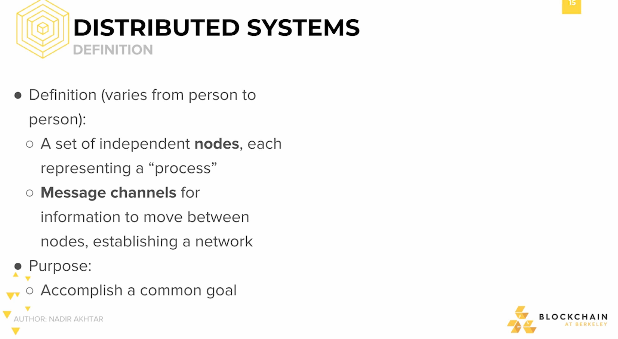
And as it turns out, the same problem that was originally studied to coordinate computers on commercial airliners is still studied today, for example on more high-tech jet planes.
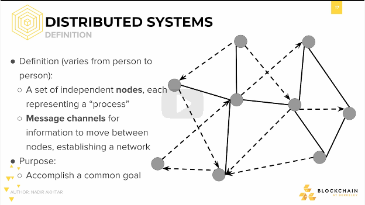
And more recently, on various spacecraft, such as SpaceX’s famous Falcon 9 or Dragon spacecraft.
For example, spacecraft have to be tolerant of the violent vibrations when accelerating through Earth’s atmosphere, and when they do leave the atmosphere, they have to deal with intense heat and cold depending on which side of Earth they’re on, and also solar radiation.
SpaceX Dragon specifically uses three flight computers, which perform calculations independently, and reboot automatically if errors are found after cross checking.

Distributed systems and consensus is also studied in the context of big enterprise operations as well.
Distributed lock servers for example, ensure that no two processes can read or write to the same piece of data at the same time – a problem called mutual exclusion – thereby preventing potential corruption to important data.
And finally, of course – the main focus of this course – the blockchain and distributed ledger revolution.
Fundamentally, each of these problems we just went over, and more, reduce to the problem of consensus.
In aircraft like rockets, jet planes, and commercial airlines, a number of redundant onboard computers must come to consensus on sensory data for example – the position of the aircraft, its location and altitude, as well as its fuel levels, etc..
In enterprise distributed lock servers, processes must come to consensus on who can write what data at what time, as the coordination of this prevents data loss and corruption.
And finally, in blockchain, full nodes agree on some state of the system, depending on implementation.
In Bitcoin, users agree on who owns what bitcoin.
In Ethereum users agree on the correct execution of transactions and the general state of the Ethereum network.
Consensus attempts to create a reliable system from potentially unreliable parts – parts like the computers in aircraft that are vulnerable to bit flips due to radiation, or power outage in a data center…
Or in public blockchains, where the ever changing network topology, as well as the existence of malicious entities trying to subvert the network for economic gain, for example, don’t align with the goals of the system as a whole.
Instead of trusting the execution of individual processes or reliability of any individuals, we trust the general protocol and the math behind it.
It’s trust – without trust.
Distributed Systems Fundamentals
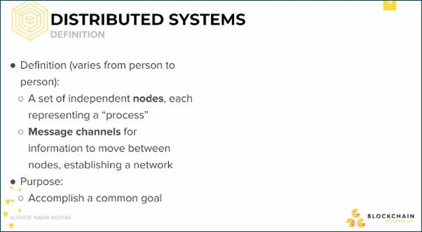
In order to understand blockchain technology like a pro, knowing its ins and outs, we need to delve into the heart of what blockchain looks like from a technical perspective.
This is where distributed systems come in.
Blockchains are a specific type of distributed system, and everything we know to the present about distributed systems will allow us to properly understand blockchain.
What is a distributed system?
The definition for a distributed system changes depending on who you ask, but the general “consensus” (no pun intended) is that distributed systems contain two particular categories of components.

The first category is referred to as “nodes.”
Nodes are meant to represent separate machines, or processes.
This separation manifests in the real-world as physical distance, such as in Bitcoin, or just a separation of components, similar to the CPU cores in your laptop.
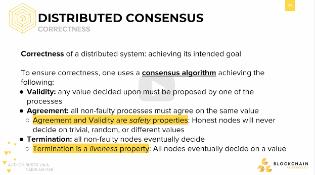
The second category is referred to as “message passing.”
These are represented as arrows, or “edges” as we like to call them in the context of graph theory.
Regardless of their name, their purpose is to demonstrate that information can move between machines.
It isn’t guaranteed that all machines are directly, or even indirectly, connected.
However, that doesn’t stop them from working together.
The biggest question on your mind, though, must be, “Why do distributed systems matter?
What’s wrong with a single system?”
Well, the problem with machines in the real-world is that they can be faulty, crash, lose memory, or even be corrupted.
In this event, we are able to protect information and services by creating backups.
In other word, putting many machines together to accomplish a goal together instead of just having a single machine.
This brings us the main advantage of a more reliable system: even if one machine shuts down or misbehaves, it’s not the end of the world.
We can create protocols withstanding failure, giving us the power to be safe in the event of a crash.
Let’s discuss the properties of a distributed system keeping in mind the two main two components to understand exactly what we’re working with.
One of the most obvious components of a distributed system is concurrency.
Components in this system process information concurrently, as opposed to a single process which operates one step at a time.
Second, there is no global clock.
While all nodes can attempt to stay synchronized, there is no single clock or computer to access for the current time.
Each node is responsible for maintaining its own time.
A fun fact, time and its effects on the operation of a distributed system constantly comes up in heated debates across the academic world.
Third, as mentioned before, there is the potential for failure of any individual component, whether this be a dropped message or a failed processor.
In these events, protocols protect the system against the individual failure, ensuring that the job gets done no matter what.
All these properties of distributed systems come straight from understanding the role of nodes and edges in this system.
In the next section, we’re going to look at how we distinguish a working distributed system from a faulty one.

This graph shows a classic example problem from distributed systems.
Consider an arrangement of an odd number of nodes as such.
Imagine that each node randomly starts off with one of two values: 0 or 1.
This is known as a binary consensus problem, as there are only two possible inputs for each node, and only two possible outputs for the entire network.
The goal of this system is to, through messages and computation, return the majority value among all nodes.
From looking at this graph, you can easily tell that the answer must be 0, given that there are five zeroes and only four ones.
Before we start considering the exact process by which this system can reach the answer, let’s first ask ourselves: what exactly are we looking for in this system?
What properties do we want to uphold?
What constitutes a correct answer?
We’re about to answer those questions right now.
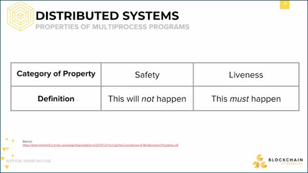
Leslie Lamport, distributed systems researcher and superhero, designed a scheme by which we can formally prove the correctness of a distributed system.
It’s a fundamentally simple scheme, and it’s a scheme you can apply to any kind of engineering.
Lamport says that a system is correct if two things are true: that it doesn’t do bad things, and that it eventually does good things.
The formal terms for these are safety and liveness respectively.
Safety properties refer to things that will not happen, and liveness refers to things that eventually happen.
To understand what this means, let’s use the previous example.
Which types of results do we want, and which do we not?
I would say it’s reasonably clear to see what we don’t want.
If our goal is for the majority value to be returned, then we never want a program to return a value that is not the majority value.
That’s a safety property.
A liveness property is that the majority value will eventually be returned.
You’ll notice that the safety and liveness properties are difficult to fulfill simultaneously, as getting closer to one means getting further from the other.
You’ll also notice why we can’t have just safety or just liveness.
Take real life as an example: living your life as safely as possible would be staying inside all day and never talking to anyone.
Nothing can go wrong, true, but … nothing will ever happen either.
On the other hand, you could also be incredibly spontaneous to live the most lively life imaginable.
However, without sufficient regulation of your actions, you’ll likely get into serious trouble.
You need some of both, but not too much, to define a sense of what your program can and should do.
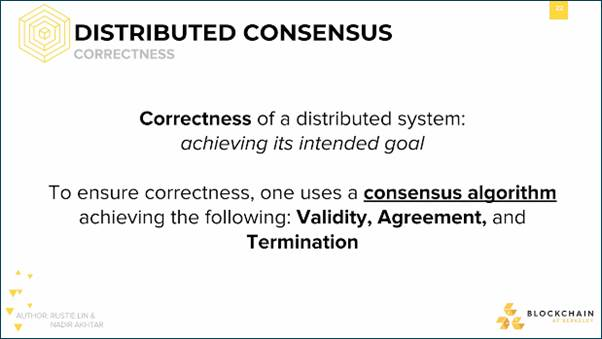
We spent quite a bit of time understanding safety and liveness, but how do we apply those ideas of desirable and undesirable guidelines to a distributed system?
How can we prove that our system achieves its goal?
Well, for any distributed system to be correct, we know that it must come to some form of consensus on the correct answer.
That’s the whole point of a distributed system: given some input, the nodes need to agree on the output.
The names given to these consensus-achieving procedures are known as consensus algorithms.
We can put consensus algorithms in the context of safety and liveness by establishing what must happen, and what cannot happen, in order for a system to come to consensus.
Lucky for us, computer scientists much smarter than us have already done that, recognizing that the three requirements of any correct consensus algorithm are validity, agreement, and termination.
Validity means that any value decided upon by the network must be proposed by one of the processes.
In other words, the consensus algorithm cannot arbitrarily agree on some result.
It cannot be hardcoded to always return the value 0.
Sure, all our nodes will agree that the value is 0 and be in agreement, but is that truly valid?
If every node started off with 1, and we’re looking for the majority value, 0 is meaningless.
Agreement means that all non-faulty processes must agree on the same value.
It’s pointless to bother with the results of faulty processes, since those can always be wrong, so what matters is the agreement of the remainder.
Of the working nodes, we never want to end up in a situation where one says 0 and one says 1.
If there are inconsistencies in our results, then which one is true?
Which one is correct?
In order for the result to be meaningful, all functioning processes must agree on it.
The last requirement is termination.
Termination means that all non-faulty nodes will eventually decide on some value.
In other words, the system must eventually return some value; it cannot forever hang in limbo.
As you can tell, both validity and agreement are safety properties.
They specify things that can never happen in a system correctly coming to consensus.
By having validity and agreement, we ensure that honest nodes never decide on trivial, random, or different values.
Termination, on the other hand, is a liveness property, as it specifies what must happen for the system to be considered correct.
Without the guarantee of termination, we have no guarantee that consensus will ever be achieved.
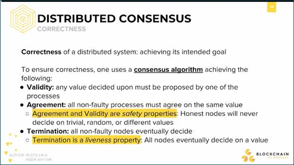
By understanding these three essentials of a consensus algorithm, you now understand what is needed for any distributed system to come to consensus.
In addition, identifying the goals of consensus algorithms is critical to understanding different approaches.
Before we get into examples of consensus algorithms, however, we need to understand more of the caveats of distributed systems, and the tradeoffs that any system must make.
CAP Theorem
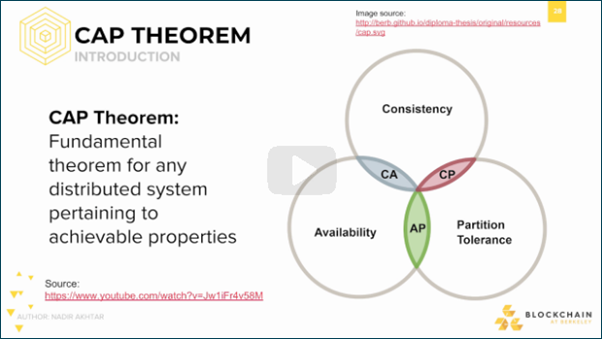
This section hones in on a famous trilemma of distributed systems called the CAP Theorem.
The most reasonable explanation for the name “CAP Theorem” is that the researcher who came up with it, Eric Brewer, was wearing a cap to cover his bald spot upon discovering this trilemma.
A less plausible but more popular theory is that “CAP” stands for the three components of the trilemma: Consistency, Availability, and Partition Tolerance.
These are not three random words, nor are they disconnected from the previous section about safety, liveness, and consensus correctness.
After defining these terms and proving the CAP Theorem, we’ll delve into the implications.
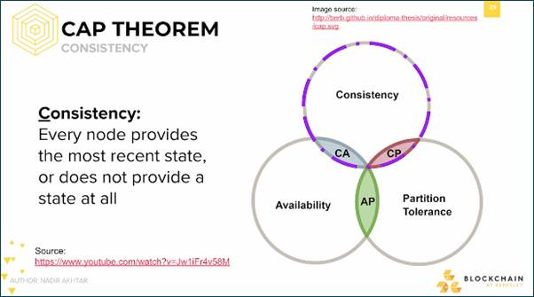
The “C” in CAP stands for Consistency.
Consistency in a system is defined as every node providing the most recent state of the system.
If it does not have the most recent state, it will not provide any response.
This, as you can tell, builds off the idea of safety because it refers to something that will never happen.
Consistency in a system says that no two nodes will return a different state at any given time, and that no node will return an outdated state.
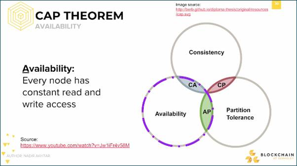
The “A” in CAP stands for Availability.
Availability in a system means that every node has constant read and write access.
In other words, an available system allows me to make updates and retrieve the state of the system without delay.
This, then, is born from liveness: availability promises what must happen, which is the ability to read or write some state.
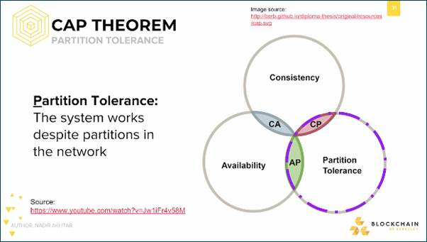
And last but not least the “P” in CAP stands for Partition Tolerance.
A quick definition, a partition is an inability for two or more nodes in a network to communicate with each other.
If Node A cannot receive messages from Node B and vice versa, this means there is a partition between the two.
You can consider partitions to be the equivalent of unbounded network latency, meaning that messages will not get to their recipient.
Partition tolerance, then, is the ability to function in spite of partitions within the network.
Partition tolerance is more difficult to categorize, but it also falls in line with safety, as it specifies what will not happen.
Partition tolerance states that the network will not stop functioning even with partitions.
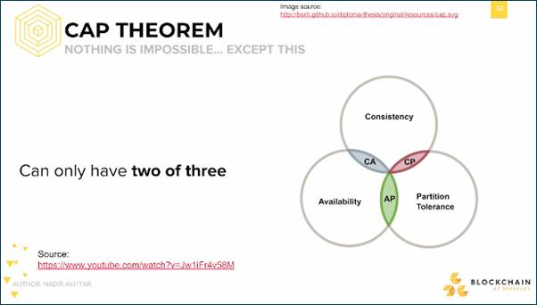
What is the CAP Theorem, truly?
It is a simple statement: a system can only have two out of three of these properties at any given time.
The choice must be made between Consistency, Availability, and Partition Tolerance.
You see this intersection of the three right here?
This is what we like to call a “Magical Fantasy Land.”
Decades ago, when distributed systems were still new in academia, several researchers and organizations claimed they created systems which had all three properties.
We’ll give you a quick proof in just a second as to why the CAP Theorem is true.
In order to prove the CAP Theorem, let’s run through some examples.
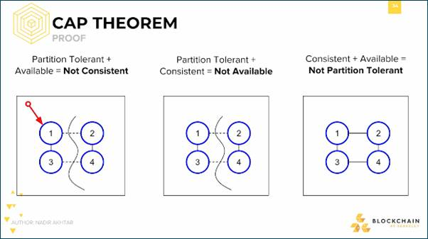
In each example, we’re going to give an example of a situation in which choosing two properties forces us to yield the third.
Let’s pretend this is a database which stores my favorite color.
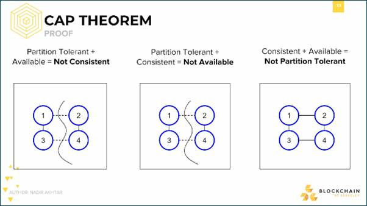
In our first example, let’s choose Partition Tolerance and Availability.
Here’s how we lose consistency:
Let’s say it’s the end of my senior year, I’m graduating from Berkeley, but I get accepted into a graduate program at Stanford!
Naturally, my favorite color will have to change from blue to red.
I send the update to the system, and my message happens to go to Node 1.
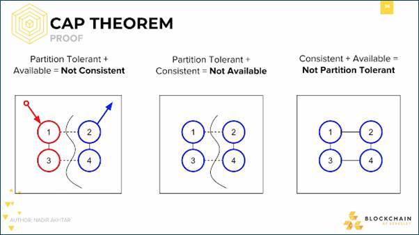
Node 1 relays the update to all other accessible nodes, which update their state.
Nodes 2 and 4, however, cannot receive messages from the other half so are not aware of the update.
I later query Node 2 for my favorite color.
Node 2, according to our choice of Availability, will return its current state.
However, this is not the most recent state, as the most recent update was red.
Because Node 2 provided a state that was not the most recent, it was not Consistent.
Let’s try another configuration, particularly Partition Tolerance and Consistency.
We’ll see how that ends up sacrificing Availability.
Same scenario,
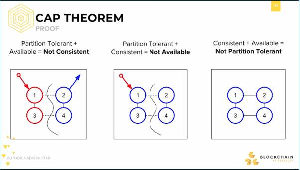
I send the update to Node 1, which then sends the update to other nodes.
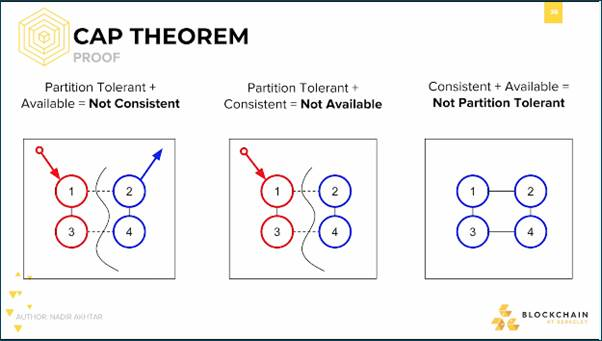
Nodes 2 and 4 are still ignorant of the update to red.
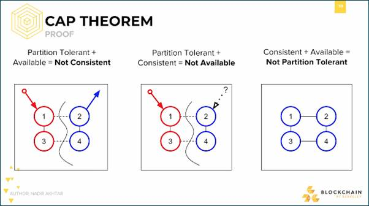
Again, I query Node 2.
What happens this time?
Since Node 2 is bound to consistency, it chooses not to return anything.
The bad news is we get no information, but the good news is we get no outdated information.
If you’re wondering how Node 2 knows its outdated, we can say that it first asks all other nodes for updates before returning a state.
If it cannot receive messages from all nodes, it will assume it has outdated information and refuse to return a value.
We lose out on something in the last two examples, so let’s see what happens when we choose Consistency and Availability.
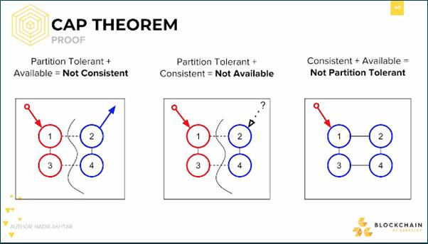
I send an update to Node 1.
Node 1 passes the information around.
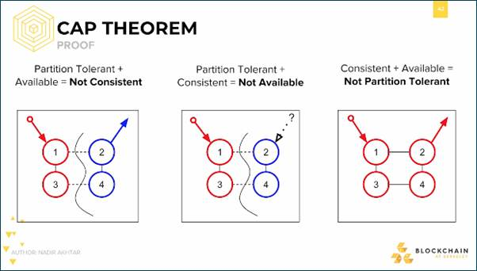
I query Node 2, and it returns a value to me.
Great!
Everything worked as expected.
Except, there’s one problem:
If we throw in a partition, this wouldn’t work.
If we throw in a partition, we are forced into one of the first two situations.
And this proof demonstrates the spirit of the CAP Theorem, that a system must compromise.
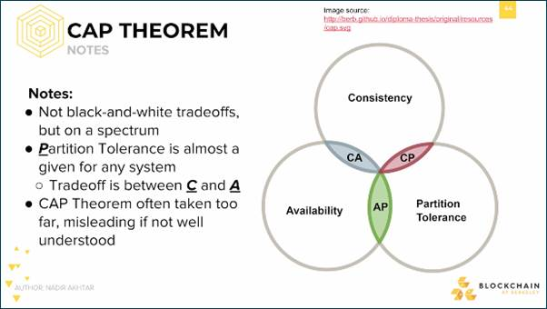
Now you understand the CAP Theorem.
You’ll often hear discussion about Consistency and Availability in consensus algorithm discussion.
However, there are a few notes to include in your takeaways of this lecture that will let you better appreciate the CAP Theorem’s significance and implications.
First, although our proof used extremes, these three properties are not black and white.
They are instead on a spectrum.
For example, instead of never returning a value to stay consistent but give up all availability, a node might wait 5 or 10 seconds before giving in and returning some value.
In addition, there might not be unbreakable partitions in your system, but network latency may cause state discrepancies.
Instead of discussing the CAP Theorem in absolutes, consider compromises.
In addition, almost every reasonable system will assume that partitions are going to occur in the system, meaning that choosing P as one of two properties is a given.
For this reason, the CAP Theorem often reduces to a dilemma between Consistency and Availability.
The choice is whether it is preferable for the system to return a false or outdated value, or to simply not return a value at all.
On this choice hinges all the implications of the CAP Theorem.
Lastly, many in the blockchain space will take the CAP Theorem too seriously.
Because many do not have a formal distributed systems background, some incorrectly fixate on the black-and-white implications of the CAP Theorem rather than using it as another lens to view the system’s design.
Byzantine Fault Tolerance
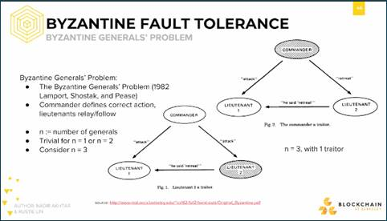
We’ve defined distributed systems, understood the definition of correctness in their context, and understood the various properties and limitations of these systems. We’re now going to finish off by understanding all the possible areas in which these systems can fail, best summarized by the Byzantine Generals’ Problem.
The Byzantine Generals’ Problem is a question of consensus. Allow me to tell you the story of the Byzantine generals, laying siege to an enemy city.
They’ve all surrounded the city, but there’s a problem: large physical barriers, like mountains and canyons, separate the generals. They can communicate only by sending messengers. In addition, they had not decided prior whether to attack the city, or to give up and retreat.
Only after observing the enemy do they then decided on a common plan of action.
Only an attack launched by all generals at once can successfully conquer the city. Having come this far, they send messages with their votes on how to proceed.
“Okay,” you may ask, “if they can send messages to each other, then what’s the issue? They just need to collect enough information, right? So what’s the problem?”
Well, the problem is that some generals may have been bribed. In exchange for their betrayal, they’ll earn themselves a small fortune from the city. These traitor generals will send incorrect information to their peers in order to screw up the attack, preventing consensus. In addition, their messengers might get lost or corrupt their messages.
The question which remains: how do we achieve consensus, if we can at all? Spoiler alert: there is no solution in the presence of ⅓ or greater percentage potential traitor generals.
We call these potential traitor generals Byzantine nodes, which may act maliciously or arbitrarily.
In this image, there are two separate triangles. We consider scenarios with 3 generals and 1 traitor, since the case is trivial with just 1 or 2 generals.
Let’s say the first general to send out a message is the commanding general issuing commands, and the listening generals are the lieutenant generals.
The node on top of the triangle is the “Commander,” and the bottom two nodes are labeled “Lieutenant 1” on the left and “Lieutenant 2” on the right. The commander casts a vote for either “attack” or “retreat” and the lieutenants record the vote.
As you can see in the first triangle, Lieutenant 2 is shaded. This implies, according to our story, it’s a traitor bribed by the enemy. In distributed systems terms, it’s a Byzantine node. Either way, it’s going to send incorrect information to its peers. Let’s say the commander votes to “attack,” sending the message to both Lieutenant 1 and Lieutenant
2. Lieutenant 2, to mess things up, tells Lieutenant 1 that the commander said “retreat.”
Lieutenant 1 now sees two different facts, only one of which can be true: the commander said attack, or the commander said retreat.
In the second triangle, the commander is shaded instead. It tells Lieutenant 1 to “attack,” but sends a conflicting message to Lieutenant 2, telling it to “retreat.” Lieutenant 2 dutifully reports to Lieutenant 1 that the commander said to “retreat,” but Lieutenant 1’s problem remains. Notice that, for Lieutenant 1, the information he’s receiving is exactly the same as the previous scenario even though the Byzantine node changed. The Commander is telling it to “attack,” but the other Lieutenant claims otherwise. Because these two situations are indistinguishable, the Lieutenant cannot detect which node is malicious. In addition, because there is no clear majority value, Lieutenant 1 cannot decide on a value. With just one Byzantine node out of three, it’s impossible to achieve consensus.
This example with three nodes extends to any general set of nodes attempting to come to consensus, meaning that consensus with the presence of ⅓ or more Byzantine generals is impossible. If there were a solution that could tolerate more than ⅓ Byzantine nodes, we could use it to solve this much more simple scenario with 3 nodes. Since we know 3 nodes cannot come to consensus with one Byzantine node, we can extend this to a general fraction.
However, that doesn’t mean it’s not possible to make an algorithm for the remaining situations.
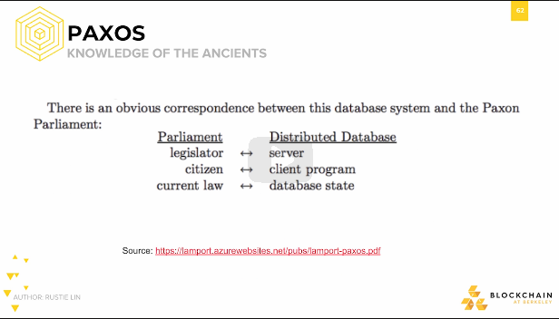
Practical Byzantine Fault Tolerance released in 1999 by Miguel Castro and Barbara Liskov gives an algorithm to allow nodes to come to consensus with no more than ⅓ Byzantine nodes. This paper has inspired many iterations of Byzantine Fault Tolerant algorithms, especially as research into blockchain consensus algorithms continues.
Let’s formalize the various types of faults within distributed systems. There are two main types of faults that are possible. While we can get more detail between the types of faults, these two are the most fundamental to understand.
The first type of fault is a fail-stop fault. During a fail-stop fault, the node can crash or not return values. Recall that a node’s functionality includes sending, receiving, storing, and processing information. Early research into distributed consensus first aimed to solve these kinds of problems. This kind of failure may be temporary or indefinite, but it will always be easier to handle than the second type of fault.
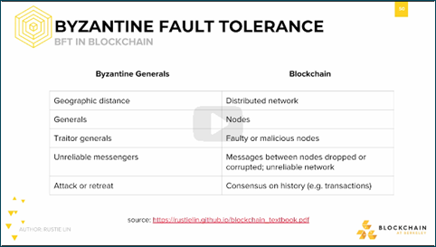
A Byzantine fault, referring to the Byzantine Generals’ Problem, is a fault that refers to any arbitrary deviance from the protocol. In other words, not only might nodes stop replying or receiving information, but they may also send corrupted and/or false information.
You can note that Byzantine faults are a superset of fail-stop faults.
The behavior of most attackers, such as the bribed generals trying to hinder consensus, falls under this kind of fault. It is this type of fault that all public blockchains must protect against, since the participants in the blockchain network are unknown and unpredictable.
Of course, the question after learning all this distributed systems material is, “How does this relate to blockchain fundamentals?”
Keep in mind the nature of blockchain. We’ve described it as many things: a technological solution to a social problem, the world’s worst database, and a replacement for trusted third parties. But what is it in the context of distributed systems?
Well, a blockchain is simply a data structure governed by a distributed system with an unbounded number of participants in the consensus process and an unknown number of Byzantine faults possible. In other words, it’s the most adversarial environment possible. In spite of the incredibly low amount of restrictions possible, blockchain makes it possible foreveryone to come to consensus.
Clearly, the distribution of computational power and data storage represents the geographic distance between the generals. The nodes represent generals, and the traitors represent faulty or malicious nodes. The possible dropped packets or messages between nodes represent unreliable messengers, and coming to consensus on whether to include a block or the valid chain of transaction history is the same as coming to agreement on whether to attack or retreat. It’s the same concepts with different names.
Intro: Voting Based Consensus
Now that we have an understanding of the fundamentals of distributed systems and distributed consensus, our main focus for the next section is that of classical consensus mechanisms which have been the backbone of distributed systems for decades, where file stores had to be safely and consistently shared across a network, used by large enterprises around the world.
These mechanisms primarily had processes explicitly vote on new updates to the system usually in a series of rounds.
Based on formal distributed consensus research, these consensus mechanisms focused on backing in sound mathematical reasoning and formal proofs.
They were often very difficult to implement, and when deployed, were usually run on networks with very few nodes – especially when compared to the global blockchain networks of today.
In this section, we’ll take a look at some classical consensus mechanisms and their impact.
After, we’ll see their evolution and how they inspired the blockchain systems of today.
Paxos and Raft
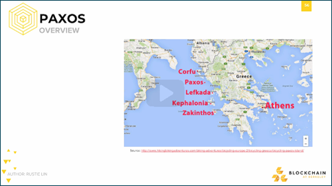
So before we talk about our first consensus mechanisms, let’s take a short break.
We’ve been going through a lot of technical material, so for now, let’s just enjoy some nice, relaxing images.
All these images are from a beautiful island called Paxos, located off the west coast of Greece.
It’s famous for its wine and is home to some of the finest sand beaches in all of the Ionian Sea.
Apparently, it’s also a very popular yachting location.
Yeah right there on the map, on the west side of Greece, just south of Corfu, is Paxos!
The most important thing though is that not only is Paxos a Greek island, but also…a consensus algorithm!
Invented by Leslie Lamport in 1989: the same guy responsible for the Byzantine Generals Problem, some other very influential papers in the field of distributed systems, such as Time, Clocks, and the Ordering of Events in a Distributed System, and also author of LaTeX, the famous document preparation system.
Since publication, Paxos has been used for a variety of use cases, and has spawned an entire family of consensus algorithms. Implementations may vary, but here, we’ll talk about the basic Paxos algorithm.
The reason Paxos is named the way it is is because the original whitepaper was titled The Part-Time Parliament, and in the paper, Lamport told the story of how the ancient Paxon parliament used the Paxos algorithm to pass decrees and make sure everyone on the island was in consensus of the latest law.
And the reason it was the “part-time” parliament was that legislators in the Paxon parliament were known to leave sporadically – to attend banquets and other outside activities.
No one was willing to remain in the chambers all the time, and they didn’t have secretaries either, so instead, each Paxon legislator maintained a ledger, where they’d record everything that happened.

So diving a bit more in depth, the paper specifies that within the Paxon parliament, there are three types of legislators: proposers, acceptors, and learners.
Proposers champion the requests of citizens, and bring up new bills to others in Paxon parliament.
Acceptors are legislators that vote, and after consensus is reached, learners “learn” the result of the consensus and carry out the bill.
In order for consensus to be reached, a majority of acceptors must vote for a new bill.
We call any majority of acceptors a quorum.
A key observation to make here is that any two quorums must overlap.
We’ll see later on that the idea of quorums is also very important in other consensus algorithms, such as those that are considered federated consensus algorithms.
The protocol that the Paxon parliament uses proceeds over several rounds, until consensus is reached.
Each successful round has two phases: prepare and accept.
First, some citizens will talk to a proposer.
And then after that, the proposer proposes a decree to the Paxon parliament.
A decree has a number and a value, the value can be anything, such as “The sale of brown goats is permitted,” or “Painting on temple walls is forbidden.”
However, there’s a requirement that the number associated with the decree must be strictly increasing.
After a decree is proposed, within the parliament, the acceptors discuss.
If at any point in time, a quorum, or majority, of legislators are in the chambers, and all vote yes, then the decree would be passed, and they’d all write it down on everyone’s ledgers.
After reaching consensus, the learners learn the result, and then let the entire island know what happened in parliament.
So there’s a very clear parallel between the Paxon parliament and distributed consensus.
As Lamport put it in his paper: “There’s an obvious correspondence between this database system and the Paxon Parliament.”
Individual nodes within a distributed system are like the legislators, since they’re the ones whose job it is to serve the citizens – the client programs – and come to consensus, and then broadcast or take action on the result.
And the state of the distributed database is like the current law passed by the parliament.
One major assumption that Paxos makes is that nodes aren’t trying to subvert the protocol, and that messages are delivered without corruption.
In other words, Paxos only works for the fail-stop scenario, and does not account for Byzantine faults.
In the paper, Lamport describes that the people of Paxos are fairly agreeable and that there’s an atmosphere of mutual trust on the island.
So long as they’re in the chambers, all legislators would agree with one another.
The result of this is that Paxos is very fast, and in practice is used to replicate large sets of data.
At Google, Paxos is used in their Chubby distributed lock service, where it’s very important for everyone to agree to only allow one process to have write access to a certain piece of data at a given time.
And just to name a few more, Google Spanner, Microsoft Bing Autopilot, Heroku, WeChat, and WANDisco all use Paxos internally.
The original Paxos whitepaper was known to be pretty difficult to understand, and despite the original author’s efforts to clarify further, with a follow up paper titled “Paxos Made Simple,” it still caused mass confusion – maybe because of the huge Paxon parliament story.
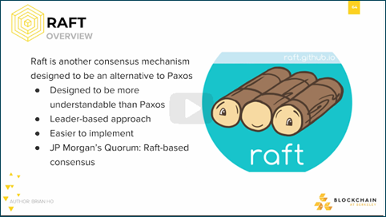
In 2014, an alternative to Paxos was proposed.
The paper was titled “In Search of an Understandable Consensus Algorithm,” poking fun at the confusion Paxos caused, and even the name of the algorithm – Raft – is meant to be a joke.
You’d use a raft to escape the island of Paxos.
So the general consensus nowadays is that Raft is a bit more understandable than Paxos, and easier to implement.
Its design is leader-based, meaning that on each round a leader would be chosen to propose new updates, and JP Morgan’s Quorum, which was designed to be an enterprise version of Ethereum, swaps out the public Proof-of-Work algorithm that Ethereum uses for a faster Raft-based consensus.
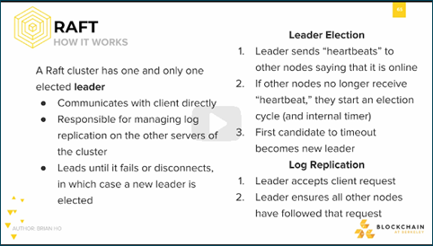
There’s a really good Raft simulation that I’ll link in the “Readings” section for this week, but here’s a brief rundown of how Raft consensus works.
Each instance of Raft has one elected leader, who communicates with the client directly.
The leader’s responsible for orchestrating the sending of messages to other nodes within the cluster and for maintaining log replication of everything that happens.
The leader accepts a client request, and then oversees all other nodes to make sure that they too have followed the request; and then the log of that request is replicated.
The leader leads the whole consensus until it fails or stops, in which case a new leader is elected.
And the consensus algorithm proceeds in partial synchrony.
The leader is tasked with sending out “heartbeat” messages to other nodes, telling everyone else that it’s online.
And these heartbeats are sent out at regular intervals – like an actual heartbeat.
If no other nodes hear a heartbeat, then they can assume that the leader is dead – failed, stopped, or crashed – and then they too start an election cycle.
This involves all nodes beginning an internal timer, starting whenever they realize that they’re no longer receiving heartbeats, and the first node to timeout gets to become the new leader.
And just as a reminder, please check out this awesome raft simulation that we’ll link in the readings section.
It teaches everything we just went over in the previous slide but by example.
All credit and respect to the original author!
Practical Byzantine Fault Tolerance
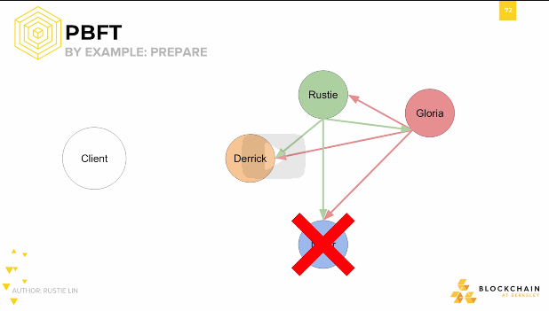
We’ll end here with another famous consensus algorithm: Practical Byzantine Fault Tolerance, or PBFT. Published by Miguel Castro and Barbara Liskov in 1999, the original paper posed a solution to the Byzantine Generals problem, as we previously mentioned.
Paxos and Raft aren’t by default Byzantine fault tolerant, though there are variants of them – like BFT-Paxos – that are. PBFT was one of the original papers published on the topic of solving consensus when considering Byzantine faults.
The PBFT algorithm handles less than ⅓ Byzantine faults, as we saw in the section with the Byzantine generals problem. More traditionally, this has been written as: the system can handle f Byzantine faults, where there are 3f + 1 total nodes.
It’s also really fast. The original PBFT paper showed that when integrated with standard unreplicated NFS, a distributed file system protocol developed by Sun Microsystems in 1984, the resulting BFT-NFS is only 3% slower, despite the fact that it can now withstand Byzantine faults.
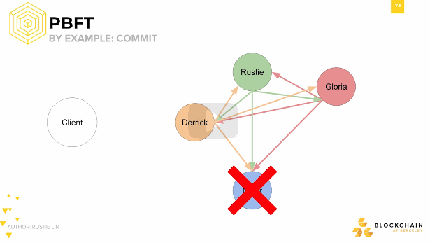
The main PBFT algorithm consists of three phases – pre-prepare, prepare, and commit.
PBFT begins when the client submits a request to the primary node. The primary node is responsible for advocating for the client request, and this should be familiar since it’s a common design pattern. For example, remembering back to Paxos, the Proposer proposes new decrees to other legislators in the Paxon Parliament based on the requests of the people.
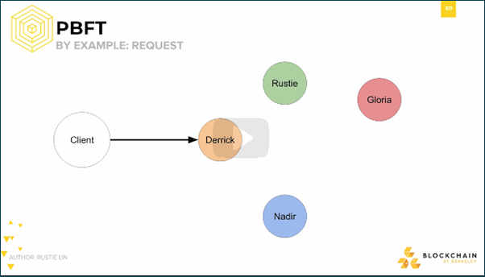
In this case, the primary node is Derrick. We have a total of 4 nodes, meaning that we should be able to withstand 1 fault, since ¼ is less than ⅓. So let’s say one of our 4 nodes, Nadir, drops out due to a spotty internet connection.
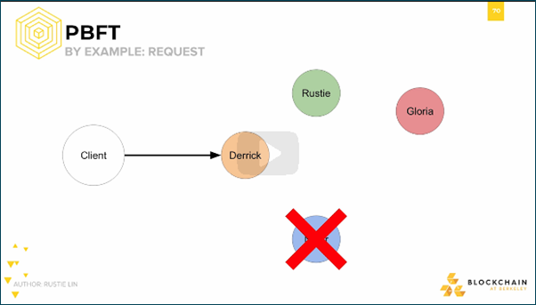
Nadir might’ve dropped out, but the other 3 nodes might not know that yet, so they’ll still send messages to him.
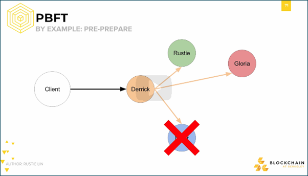
The next step is pre-prepare, which is one of the three main phases – pre-prepare, prepare, and commit. In the pre-prepare phase, the primary node Derrick sends out pre-prepare messages to everyone in the network. A node accepts the pre-prepare message so long as its valid. We won’t go too much in detail, but messages contain a sequence number – like the increasing numbers Proposers in Paxos assign to each of their decrees. They also contain signatures, and other useful metadata that lets nodes determine message validity.
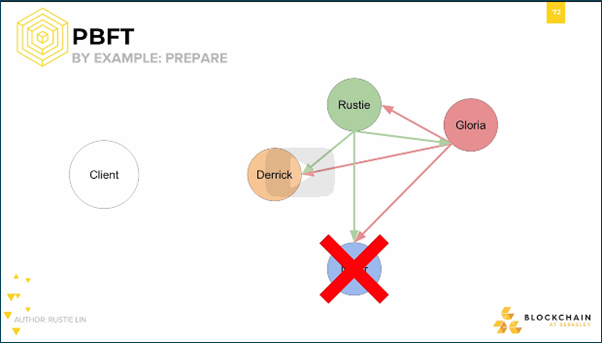
If a node accepts a pre-prepare message, it follows up by sending out a prepare message to everyone else. And prepare messages are accepted by receiving nodes so long as they’re valid, again, based on sequence number, signature, and other metadata. A node is considered “prepared” if it has seen the original request from the primary node, has pre-prepared, and has seen 2f prepare messages that match its pre-prepare – making for 2f + 1 prepares. Again, f is the number of Byzantine faults.
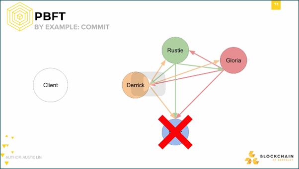
After nodes have prepared, they send out a commit message. If a node receives f + 1 valid commit messages, then they carry out the client request and then finally
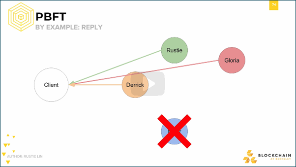
Send out the reply to the client. The client waits for f + 1 of the same reply. Since we allow for at most f faults, we need to wait for at least f + 1, and this ensures the response to be valid. After this point, the client gets the correct response.
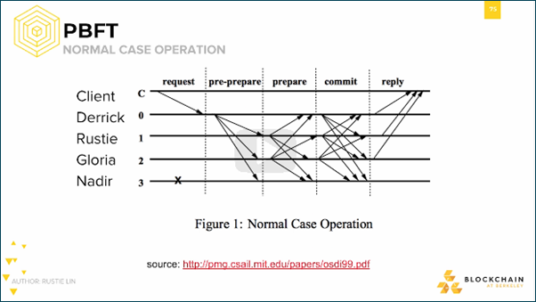
Here’s a diagram from the PBFT whitepaper, which models exactly the scenario we just went over. The diagram has five processes, or nodes in our case.
The client is process C. Derrick is process 0, I’m process 1, Gloria is process 2, and Nadir is process 3.
In the first step, the client sent a message to Derrick, process 0. That’s the initial request. During this time, Nadir fails.
Then, Derrick sends a pre-prepare message to the rest of us processes.
Everyone except Nadir responds with a prepare message.
After acknowledging everyone’s presence, we all send the commit message.
After hearing sufficient amount of commits, we respond directly to the client.
Intro: Nakamoto Consensus
Now that we’ve traversed the landscape of classical voting-based consensus mechanisms, we now arrive in modern times.
In 2008, the release of the Bitcoin whitepaper not only revolutionized the way we thought of financial transactions, but also the way we reach consensus.
For the first time, consensus was enabled not just at a small scale within a single company, but at the globally accessible level.
In the present day, we can observe two main classes of consensus mechanisms: ones inspired by classical literature – which we call voting-based consensus mechanisms – and ones inspired by Satoshi Nakamoto’s Bitcoin – which we call Nakamoto consensus mechanisms.
The main difference between the two is based on how updates happen.
“Voting-based” refers to consensus mechanism requiring explicit votes from nodes on the next update.
On the other hand, Nakamoto consensus mechanisms diverge fundamentally from this idea, instead requiring users to vote implicitly.
This is done with a random lottery based on consumed resources: users expend some resource for the chance to make an update to the system.
This is what happens in Bitcoin – miners are randomly selected based on their hash power, derived from energy, to propose the next block.
While the origins of Nakamoto consensus are in Bitcoin’s Proof-of-Work mechanism, it isn’t the only style of Nakamoto Consensus.
That’s what we’re going to be covering in this section.
Nakamoto Consensus
In general, Nakamoto consensus delivers a few key properties.
First off, this paradigm serves as a way to come to consensus with unknown, untrusted peers.
In Bitcoin, the first distributed system to use Nakamoto Consensus (hence the name “Nakamoto Consensus”), anyone can join or leave the network at any time and even send corrupted messages or false messages to others.
Additionally, any user can have as many virtual identities, or public/private key pairs, as they want.
To prevent unfair voting from anyone who dishonestly creates multiple identities, voting power must be made scarce, done by tying voting power to a scarce resource.
Bitcoin happened to use computational power as the scarce resource, but that is just one of many possible resources to expend to achieve Nakamoto consensus.
Because of this implicit manner of voting, leaders are elected through a random lottery, where the likelihood of winning this lottery increases with the expended resources, pay-to-play style.
The winner of the lottery is then allowed to create the next update to the system.
In blockchain networks, the block represents that very update.
When the vote is cast, it’s possible that the lottery chose a malicious leader.
In this case, others in the network vote implicitly on the proposed update by either including the update in their own local view of the system state or by refusing to accept it.
For example, in Bitcoin, full nodes can choose which blocks they include in their blockchain: but their chain will only be valid if the rest of the network is in consensus.
Hence, each Nakamoto Consensus protocol must have a set of rules defining how to choose the most valid state of the network, such as the longest chain policy in Bitcoin, one example of a fork resolution policy.
For this reason, some choose to refer to Nakamoto consensus as chain-based consensus.
We’ll understand this better in a bit when we look at chain and BFT based Proof-of-Stake implementations.
In the next couple slides, we’ll be taking a look at various consensus mechanisms that fall under the wide umbrella of Nakamoto Consensus, and for each, we’ll be focusing on what resource each consumes and how the network uses that resource to come to consensus.
First, just as a recap and to understand Nakamoto Consensus in something that we already know, take Bitcoin.
In Bitcoin, miners solve partial preimage hash puzzles so as to prevent naive Sybil attacks, and to tie voting power to a scarce physical resource.
The image on the right hand side is from our first course: Bitcoin and Cryptocurrencies, and shows exactly that.
The miner who solves the block first gets to send it to the rest of the network.
The rest of the network then implicitly votes on that block, since they have the power to choose to append it to their local copies of the blockchain.
In Proof-of-Work, the resource consumed is computational power.
The faster a miner can compute hashes, the more likely they’re able to find the next valid block and send it to the rest of the network.
The next example of Nakamoto consensus is Proof-of-Stake.
This one’s a bit tricky since there are very many different implementations of Proof-of-Stake, but in general some of them can be classified as Nakamoto consensus mechanisms as well.
Like the miners in Proof-of-Work, validators in Proof-of-Stake are tasked with creating updates and supporting the network.
Instead of expending computational power, Proof-of-Stake instead uses its native currency.
As in: the more native currency a validator stakes, the more likely it’s going to be elected to propose or create the next update.
There’s a lot to talk about when it comes to Proof-of-Stake, so we’ll be going into that in the next section, after the following comparisons with other Nakamoto consensus mechanisms.
Proof-of-Activity is a hybrid consensus mechanism that borrows from both Proof-of-Work and Proof-of-Stake.
The general algorithm is as follows: First, miners solve and submit blocks to the system, in the standard Proof-of-Work fashion.
Then, the system switches to Proof-of-Stake.
The block header contains data that represents a random group of validators who are required to sign the new block.
And like in Proof-of-Stake, the more coins a validator has staked, the more likely they are to be chosen to sign off of the block.
The block fees and rewards are split among the miner and the various validators.
Once the validators have signed the newly found block, the block is complete and users are free to add it to their copies of the blockchain.
So in Proof-of-Activity, the resources consumed are both Proof-of-Work and Proof-of-Stake resources.
Miners consume computational power, and validators consume the native currency.
Next up is Proof-of-Burn.
It’s like Proof-of-Stake, but edgier.
This one’s a bit tricky since the term Proof-of-Burn can be used to refer to a number of things.
For example, in Bitcoin, you can prove the existence of arbitrary data by sending a transaction to an irretrievable address, thereby writing your data into the blockchain and paying the transaction fees to no one, “burning” your coin.
That’s not what we’re talking about here.
Proof-of-Burn, in this context, refers to a Nakamoto consensus mechanism.
In Proof-of-Burn, the more coins you send to an irretrievable address, or the more coins you “burn”, the higher the likelihood is of you being elected and being able to create the next block.
Proof-of-Burn is like Proof-of-Stake, except that once you stake your coin, you can’t get it back.
As a side note, burning coins can also be used as a bootstrapping mechanism for new systems.
You could tie a new coin’s value to some other existing coin.
For example, a new cryptocurrency could derive its value from the burning of Bitcoin.
In summary, the resource being consumed in Proof-of-Burn is currency -- and that could be either native currency, or potentially some other non-native currency.
Another novel category of Nakamoto Consensus is Proof-of-Space.
Proof-of-Space consumes storage space as a limiting resource for voting power.
Proof-of-Space is seen by some to be more fair and energy efficient than other consensus mechanisms, such as Proof-of-Work, due to the availability of storage, as well as its lower energy cost.
Nowadays, Proof-of-Space is used primarily for file storage rather than as a implicit voting method, though the implementations vary.
For example, there are also protocols that give rewards directly for storing information, such as Filecoin, Storj, and Sia.
On the other hand, Proof-of-Capacity is a type of Proof-of-Space that is very similar to the other Nakamoto Consensus mechanisms we’ve been talking about.
Instead of proving you’ve done work or staked some coin, you show that you’ve solved some problem involving a nontrivial amount of storage capacity.
Then you can propose the next block or update to the system and receive coins for your computation.
In a sense, Proof-of-Capacity can be seen as a memory-hard Proof-of-Work protocol.
At their core though, all these systems use some sort of Proof-of-Space in order to limit user’s influence on the system.
There’s also Proof-of-Elapsed-Time, which has users consume time.
The way they do this is by first picking a random duration of time to wait, and then waiting for that duration of time.
In order to enable this sort of behavior, we need to trust the users are actually waiting for however long they say they’re waiting, and that it’s truly random.
This is where Trusted Execution Environments come in, particularly Intel SGXs.
Trusted Execution Environments are separate environments from your computer’s main memory that can only be accessed with certain CPU instructions.
This prevents tampering by other external processes.
Think processes that govern fingerprint sensors on mobile devices, or alternative payment options.
The way it works is that we simply ask users to wait a random time, and once that random time is up, then they get to propose the next update.
The two assumptions to satisfy here are (1) that the time chosen to wait is actually random, and (2) that we have actually waited that long.
And this is functionality that is built in to trusted execution environments.
Once code is loaded into the trusted execution environment, it generates an attestation, or proof that the environment is working as intended, and that the right code is running the right way.
Users can’t interfere with the trusted execution environment since the memory space that it runs on is private, and any sort of tampering would result in a faulty attestation.
However, this is all based on your trust in the manufacturer of the trusted execution environments.
So if you’re using Intel SGX, you have to trust Intel and their entire production process, that they haven’t accidentally – or maliciously – introduced a backdoor or vulnerability.
A mechanism that does not directly fall under the category of Nakamoto consensus, but that is worth mentioning, is Proof-of-Authority.
Proof-of-Authority relies on trusted individuals signing off on updates to the network, and is primarily used in permissioned or non-production networks.
For example, the Kovan and Rinkeby Ethereum test networks use Clique, a Proof-of-Authority implementation.
Following some attacks on Ropsten, Proof-of-Authority was chosen as a way to better control vulnerable, valuable, but not publicly controlled testnets.
The resource consumed here is Identity.
There is a question mark because this follows the paradigm of politically centralized systems, with a few actors making decisions for the rest of the network.
Intro: Proof-of-Stake
Proof-of-Stake is a pretty important consensus mechanism – so much so that we have this entire section on it.
With increasing concern over the energy costs and scalability of Proof-of-Work blockchain platforms, many have turned to Proof-of-Stake as an alternative.
In this section, we’ll understand Proof-of-Stake first by comparing it with well-known Proof-of-Work.
Then, we’ll dive more in depth into Proof-of-Stake’s implementation specifics: how some implementations of it occupy a gray area between BFT voting and Nakamoto consensus flavors, and also how innovations in this space are driving blockchain research from a cryptoeconomics standpoint, which aims to formalize all its claims about blockchain through cryptography and economics.
Proof-of-Stake Overview
As we mentioned in the Nakamoto consensus section, we can understand both Proof-of-Work and Proof-of-Stake by looking at what resources are consumed.
In Proof-of-Work, miners have voting power that’s proportional to the amount of computational power that they own.
In Proof-of-Stake, validators are stakeholders that have voting power proportional to the economic stake -- the native currency -- that they lock up.
The idea here is that the more invested someone is within a Proof-of-Stake system, as in the more coin they have, the stronger the incentive for them to be good stewards of the system.
Someone with a lot of stake has an incentive to do things that would benefit the system as a whole since that would increase the value of the coins they hold. That’s why in Proof-of-Stake, we give these individuals the most power as validators.
And there’s two main flavors of Proof-of-Stake. Chain-based, and BFT-based. The main differences are in the roles of a chosen validator and its implications on the properties of the system and its consensus.
In chain-based Proof-of-Stake, a validator is first randomly chosen based on the proportion of stake they invested. Given a known validator set, the validator who stakes the most coin is the most likely to be chosen.
After this step, the chosen validator then creates a block which points to the previously created block.
Then, this validator gets the block reward and transaction fees associated to that block, assuming that the block is valid and accepted by the rest of the network.
The main observation to make here is that chain-based Proof-of-Stake is like a direct parallel of Proof-of-Work. Besides the difference in resource consumed – computational power versus economic stake – the rest of the mechanism is largely the same. Once a miner or validator is chosen, they create a block that the rest of the network then implicitly votes on, depending on whether or not they choose to accept the update and append it to their local copies of the blockchain. This is why chain-based Proof-of-Stake algorithms tend to choose availability over consistency.
The next flavor of Proof-of-Stake is called BFT -- or Byzantine Fault Tolerant – based Proof-of-Stake. BFT-based Proof-of-Stake algorithms choose consistency over availability, in contrast to the availability-favoring chain-based Proof-of-Stake algorithms.
In the first step of BFT-based Proof-of-Stake, we have the same thing as chain-based Proof-of-Stake: we randomly choose a validator based on the proportion of stake they have invested.
The differences start in the next step though.
Instead of having a chosen validator directly create a block that is sent directly to the entire network, a chosen validator proposes the next block. The rest of the validators then vote “yes” or “no” on whether they accept the block to be valid or not.
If ⅔ or more of the network voting power (⅔ or more of the total stake) votes yes, then the block is included in the blockchain. Otherwise, a new validator is chosen to propose a block, and we repeat.
After a block gets more than ⅔ of the network voting power to vote “yes” on it, the validator that proposed that block gets the block reward and transaction fees.
Historically, there have been a couple major implementations of Proof-of-Stake.
Tendermint was the first BFT-based Proof-of-Stake consensus mechanism, published in 2014. Tendermint is currently used as the consensus mechanism for Cosmos, the internet of blockchains.
Casper is the planned Proof-of-Stake upgrade to Ethereum. There are two big implementations of Casper. The first is Casper the Friendly GHOST: Correct-by-Construction, part of a family of consensus algorithms designed from scratch based on the same safety proof.
The second is Casper the Friendly Finality Gadget, which is a Proof-of-Work and Proof-of-Stake hybrid.
Proof-of-Stake Implementations
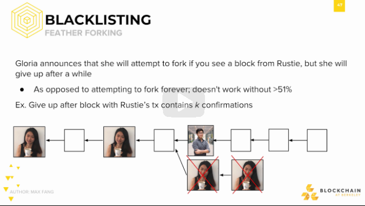
Tendermint was the first BFT-based Proof-of-Stake consensus mechanism, created by Jae Kwon and his team in 2014.
To give a bit of historical context, Tendermint brought with it the academic rigor of more traditional consensus mechanisms such as PBFT, Paxos, and Raft to a space that at the time was mostly dominated by newer blockchain consensus mechanisms, namely Proof-of-Work and other Nakamoto consensus mechanisms.
In the beginning, Tendermint was an all-inclusive Proof-of-Stake system with its own native token to drive incentive, but since then, it has evolved to become a more generalized middleware for replicating applications on many machines. This allows developers to write their applications and business logic in any language. These applications talk to what’s called the Application BlockChain Interface, which in turn talks to the Tendermint Core consensus engine. You can see a diagram of the state machine on the right.
Tendermint is energy efficient and fast, but currently is still testing scalability to a large number of validators, so today it’s primarily being used in production in private, permissioned environments. It’s also the backbone of the Cosmos Network, which aims to create the Internet of Blockchains and fix the problem of blockchains existing in silos, unable to communicate with one another.
In Tendermint, we have a globally known and predefined validator set. Consensus proceeds
in three rounds, and at each round, more than ⅔ of the entire validator set must vote for the proposed block in order to proceed to the next round. Otherwise, if we don’t hear from validators within a certain time, we count their vote as nil. And this reliance on a timeout makes Tendermint a weakly synchronous protocol, rather than an asynchronous one.
And because it’s BFT-based, Tendermint favors consistency over availability. Validators wait for each other to vote or time out, and come to consensus, before the state of the application is updated.
Alright, so let’s run a little demo to see how the Tendermint consensus engine runs at a high level.
On the right we have a state machine diagram for Tendermint. And on the left we have our little demo network. If you’ve taken the first course in the Blockchain Fundamentals program, Bitcoin and Cryptocurrencies, then this diagram should be pretty familiar to you.
So here’s how things work: at each new block height, a validator is chosen to propose a new block.
We’ve circled this in red. If we were using Tendermint for Proof-of-Stake, like how Cosmos does it, the validator would be chosen at random based on their proportion of bonded token.
Then, in the first round, called “prevote”, the rest of the validators can either prevote the block, or prevote nil.
Prevoting the block indicates that the validator marked the block as valid. Prevoting nil either means that the validator marked the block as invalid, or failed to respond within time – possibly due to network timeout, power outage, or some other arbitrary reason. If we receive more than ⅔ prevotes, that’s called a polka – hence the image of the two people dancing in the bottom right corner.
Then, in the next step is “precommit.” If a validator witnesses a ⅔ prevote for the block from the network and prevoted for the block, then it precommits the block. Otherwise if the validator prevoted nil previously because the block was invalid, or they just simply didn’t prevote in time, then the validator precommits nil.
If ⅔ validators precommit the block, then the block is committed. Else, a new voting round starts.
We start off in the New Height phase. In this step, we select a validator to propose the next block. Tendermint does this with a round-robin selection algorithm that selects proposers in proportion to their voting power – which in the case of Proof-of-Stake is however much every validator decided to stake.
Let’s say Rustie gets chosen as the proposer. So in the “Propose” phase, he proposes the next block. That’s the yellow block on top of his name.
The next phase is to prevote. Since we have 5 validators, we need at least 4 of us to prevote the block that he proposed in order to reach the greater than ⅔ threshold.
So we wait for a bit of time for all the prevotes to come in. Remember that Tendermint is partially synchronous, so we stop waiting after the timeout time has passed, and just take whatever prevotes we have so far, and assume the rest are prevote nil.
Let’s say everyone prevotes for the block before time’s up, which means that we have 5/5 prevotes for the block, and that’s more than ⅔.
And yay that’s a polka!
Alright, so now we’re on the next phase, which is precommit. Everyone who originally voted prevote block in the last phase should be voting precommit block this time around.
So let’s see what happens.
Uh-oh! Looks like there was a network partition, and both Nadir, myself, and Nick are separated from the rest of the network. Maybe my computer crashed and Nick’s neighborhood had a blackout.
So everyone precommits, and Derrick, Gloria, and Rustie all precommit the block. Meanwhile, since no one’s heard from neither Nick nor myself yet, and it’s past the timeout time, we count those votes as precommit nil.
So this time, we have ⅗ precommits for the block, which isn’t more than ⅔ of the total number of validators.
Alright, so since we didn’t get more than ⅔ precommits for the block, we can’t commit the block Rustie proposed, so we have to go to a new round.
As mentioned earlier, Tendermint’s proposer selection algorithm is round-robin, so it can’t choose me to propose again. The algorithm is also proportional based on the amount of voting power we have, so let’s say Derrick staked the second highest amount after Rustie, so he’s the next to be able to propose a block.
So that’s the yellow block on top of his name here.
And let’s say that I managed to reboot my crashed computer, and I’m back online as a validator. This time around, if everyone prevotes and precommits the block, all within time, and no one crashes or fails in any other way, then we have ⅘, which is more than ⅔, so we could potentially commit this next block.
And if Nick continues to be offline, his stake could be slashed.
Casper is a very intentional pun for being the spiritual successor of GHOST. To preface, the GHOST protocol is Ethereum’s solution to its fast block times. Fast block times, when compared to block propagation rates and latency, mean that there will be more naturally occurring forks and such. Valid blocks that are verified by part of the network might end up being cast off because it lost the propagation race to another equally valid block.
These castaway blocks are called uncle blocks, and while they might not in the end be included in the longest chain, they do represent the fact that there was some degree of computation done on them.
The GHOST protocol includes these uncle blocks into the calculation of which chain has had the most cumulative work done on it: serving as a fork resolving policy for miners.
Casper is a planned upgrade to Ethereum that’s an adaptation of some of the principles of the GHOST protocol for Proof-of-Work into Proof-of-Stake.
This upgrade from Proof-of-Work to Proof-of-Stake has been long in planning, pretty much ever since the Ethereum yellow paper was written in 2014, and evidence for which has been publicly viewable in the form of the Ethereum ice age and difficulty bomb – both of which are artificial limitations on the Ethereum software that have been purposely placed in the protocol so as to force a hard fork years later.
The first steps to upgrade Ethereum from Proof-of-Work to Proof-of-Stake will likely be first a Proof-of-Stake overlay on top of the existing Proof-of-Work protocol. We’ll talk about this in the next slide, but Casper the Friendly Finality Gadget, an implementation of Casper in the form of an Ethereum smart contract, is set for launch with a 2 year plan and 1.2 million ether in funding.
There are two big implementations of Casper, each taking a different approach. Casper the Friendly Finality Gadget, or Casper FFG, is a Proof-of-Stake overlap on top of Proof-of-Work.
It’s a chain and BFT-based Proof-of-Stake hybrid, and is taking a step-wise approach to upgrading Ethereum, with the ultimate goal of eventually casting away Ethereum’s Proof-of-Work scaffolding entirely.
On the other hand, Casper the Friendly GHOST is a member of a family of consensus protocols derived from a Correct by Construction, or CBC, methodology. Sometimes you’ll hear Casper the Friendly GHOST being referred to as CBC Casper. CBC means that this implementation
of Casper was designed from scratch to formally satisfy a certain safety proof, so it’s correct by construction. It’s a pure Proof-of-Stake protocol, not a hybrid like Casper FFG, and when in implementation would require a much more drastic overhaul.
As we mentioned earlier, Casper FFG is a Proof-of-Work and Proof-of-Stake hybrid. It’s known colloquially as “Vitalik’s Casper” since he’s the main advocate of this form of Casper.
Casper FFG is a Proof-of-Stake overlay on top of Proof-of-Work that – as its name implies – is a tool that aims to fix finality in Ethereum. In Bitcoin, Ethereum, and many other Proof-of-Work blockchains, we rely on the probabilistic finality of blocks. For example, in Bitcoin, we assume that blocks are finalized with reasonable probability if that block has more than six confirmations on top of it. Though it’s unlikely for the block to be forked by a longer chain, the possibility will always exist. Hence, the longest chain is never truly final in Bitcoin. FFG attempts to take away that probabilistic finality from Proof-of-Work systems.
In FFG, we carry on with Proof-of-Work as normal. However, every 50 blocks – called an “epoch” – we run a round of Proof-of-Stake, which consists of prepare and commit phases, where validators vote on which chain they believe to be canonical.
Each round of Proof-of-Stake at an epoch is called a checkpoint, and checkpoints are first justified, and then if another checkpoint is built on top of it, then that previous checkpoint is considered finalized. If a block b is finalized, then the blockchain cannot reasonably revert back to a time in history before block b.
This is also advantageous because we can now consider only the justified chain rather than the entire Ethereum blockchain.
Casper FFG also implements deposits and slashing conditions; we’ll explain these in next week’s lecture about Proof-of-Stake and cryptoeconomics.
On the other hand, Casper the Friendly Ghost is colloquially known as Vlad’s Casper, named after Vlad Zamfir, cryptography researcher.
As we mentioned before, it is designed from the ground up with a correct-by-construction, or CBC, methodology, so it would be a more drastic overhaul to the Ethereum network, aiming to redefine the fundamentals of the protocol.
CBC Casper is a family of protocols that allow consensus on different types of data, but all satisfy the same safety proof. Currently, there are six consensus protocols that exist in the CBC family, which serve purposes ranging from binary and ordinal consensus to list and concurrent schedule consensus and blockchain consensus.
Instead of aiming for probabilistic finality, as with Bitcoin, CBC Casper aims for absolute finality. Most Nakamoto Consensus networks, because of the fork resolution policies they adopt, allow for extremely historic chains to be overridden by even longer forks; a miner in Iceland secretly mining an incredibly long blockchain which took more computational power to produce could invalidate the entire Bitcoin blockchain any day. This is because Nakamoto Consensus assumes that the probability of such an event happening is incredibly low.
However, it’s never completely impossible.
CBC Casper, on the other hand, achieves eventual finality. This means that, after some point in time, a block will eventually be finalized and immutable. Though the time to finality could be unbounded, it is still a finite amount of time. This is the subject of much present-day research, and it may change even soon within the future. To best understand cutting-edge developments such as these, it’s best to explore by yourself for the best understanding.
It’s difficult to get into details with so much theory to understand, but recognizing the gist of the difference between probabilistic finality and absolute finality and the differences between how the two types of Casper achieve finality are the most important takeaways for this particular section.
Intro: Federated Consensus
We’ve discussed voting consensus algorithms as solutions to traditional distributed systems problems and Nakamoto consensus algorithms as solutions to this new distributed system paradigm.
In the first, voting is done explicitly with a known set of nodes or participants.
In the other, voting is done implicitly through the use of resources, meaning that not all participants may be known.
One question you may have asked is whether there is any kind of consensus mechanism to bridge the two together.
On one hand, you may want some explicit voting to avoid consuming any kind of resource, possibly to avoid a carbon footprint.
On the other, you’re focused on censorship-resistance and want to allow anyone to participate in consensus.
How can you achieve both, allowing anyone to join but not being subjected to Sybil attacks?
One way to achieve this is Federated Consensus.
Federated Consensus Overview
Before diving into federated consensus, we’re going to refresh ourselves with the definitions of all the terminology we’ve picked up thus far.
Remember that a quorum in a distributed system is a set of nodes sufficient to reach agreement.
In PBFT, that’s over two thirds of the voters.
We refer to this as a Byzantine agreement within a BFT consensus algorithm.
Let’s say you’re part of a decentralized distributed system, but you can’t choose which nodes to trust.
How can you and your peers still come to consensus without relying on a central party to dictate the truth?
This is where the concept of a federated Byzantine agreement comes in.
Rather than relying on a central actor to choose quorums for us or decide the truth for us, we can individually select who we trust by using a quorum slice.
This is a subset of a quorum that can convince a particular node, aka you, of agreement.
Individual nodes can decide who to include within their quorum slice.
Let’s say you’re the purple node, the leftmost of this set of four nodes.
You believe a crayon to be red.
The other nodes, who happen to be in your quorum slice, tell you that the crayon is actually green.
Because you have decided to trust them, you change your opinion, instead coming to consensus with them that the crayon is in fact green.
You then celebrate and rejoice the ability of trust to permeate through a decentralized network and allow you all to reach consensus.
Hooray.
You might ask, “What’s the point of trusting these people?
Seems arbitrary to me.
Why not just trust a centralized entity if we’re handing out trust so freely?”
Keep in mind, these aren’t the only nodes in the network.
Let’s say you only trust these four out of a thousand nodes, and you only want to listen to them.
Of course, your follow-up question should be, “If I only trust these four nodes out of thousands, how does the whole network reach consensus?”
This is where quorum intersections come in.
By having overlapping sets of quorum slices, we can form a larger quorum and ensure consensus throughout the entire network.
If all nodes share some individually selected trusted entities, then the whole network will still come to the same decisions without requiring a direct line of trust to any unknown node.
You can trust popular identities with a lot of reputation, nodes which have been in the network for a while, or anyone else who you believe deserves the right to influence your decision-making.
In the scenario where these quorum slices don’t line up, we get what are known as disjoint quorums, the pitfall of federated consensus.
If this happens, then there is no way to guarantee that all actors will come to consensus.
We’ve talked a lot about consensus in theory; how’s about going through an example?
Let’s say that Rustie, Derrick, and I (Nadir) are trying to figure out what to get for lunch again.
But this time, our friend group is ever expanding, meaning that new people will join during the day.
Since we’re nice people, we’re open to letting others join in, but there’s always trust issues when meeting people for the first time.
Rustie suggests pizza, his favorite dish, making the suggestion to Derrick and myself.
We two, however, know of a secret deal for $1 burgers today.
Rustie, also a fan of burgers,
And also acknowledging the value of the discount, cedes to our preference and decides on burgers as well.
The three of us celebrate for coming to consensus.
Saroj notices our cheeriness and asks to join our friend group for lunch.
However, he doesn’t trust Rustie for whatever reason.
Perhaps because Rustie tried to get pizza on $1 burger day.
Because of this, Derrick and I decide to form a quorum slice with Saroj, meaning we all influence each other’s decision making.
Trust is beautiful, isn’t it?
Gloria, seeing how much our love has flourished, also wants to join us.
However, she only trusts Rustie and Derrick.
Rustie and Derrick also trust her, so they form a quorum slice as well.
And tada, we now have two new overlapping quorum slices with Derrick in the middle.
Including the first quorum slice, there are a total of three quorum slices.
The intersections are the most crucial parts, as those ensure that decisions made within individual quorums propagate to the other parts of the network.
Federated Consensus Implementations
Because of the way that Federated Byzantine Agreement functions, it offers a few nice properties.
First, like other blockchain consensus algorithms, it offers decentralized control.
No one decides the quorums – except the individuals.
On top of that, the latency is low, as consensus can be achieved with a relatively low cost of computation.
Finally, trust is flexible.
No node has to trust anyone who they don’t want to trust, instead only choosing to listen to the closest and trusted peers.
The first cryptocurrency to leverage this consensus algorithm is Ripple, which refers to itself as a real-time gross settlement system.
Ripple targets big financial institutions, offering quick and decentralized cross-border payments.
Rather than having to create a new branch of trust between banks for every international
payment, sometimes taking up to days, the Ripple network allows these institutions to self-select trusted peers and maintain a collective history of transactions.
Naturally, Ripple is a somewhat permissioned ledger, as banks need to be authenticated before getting access to the Ripple ledger.
A note, Ripple is a distributed ledger but not necessarily a blockchain system.
This means that the data structure holding information is not a blockchain, but many of the assumptions and goals of the system are similar to that of well-known blockchain projects.
This image quickly represents the makeup of the Ripple network.
Validating nodes participate in consensus, while tracking nodes maintain the history.
Stellar is the public version of Ripple.
It’s actually a software fork of Ripple, meaning that the codebase for Stellar broke off from Ripple.
However, it split off to focus on bringing federated consensus to the common people.
This platform connects all types of institutions and users, from banks to non-profit institutions.
It aims to make wealth accessible.
As we saw in the federated consensus overview, this diagram represents the process by which someone in the Stellar network might come to a decision on what they want to have for lunch.
If interested in exploring Stellar, check out the Adventures in Galactic Consensus comic strips.
Text: Week 1 Summary
I. Distributed Systems
Bitcoin transactions are recorded on the blockchain, a ledger that is maintained by a distributed system, or a network of independent nodes connected by message channels that move information between them. A critical aspect of a distributed system is the way in which these nodes, which are unknown and untrusting of each other, come to agreement, or consensus. In the case of Bitcoin, the network needs to agree on the number of bitcoins each individual owns, and of all transactions being made.
Distributed systems remove the need for trust in potentially unreliable parties; instead, we can trust the mathematics and the correct operation of these systems. If one of the nodes crashes or is corrupted by malicious entities, we can still protect our information and services by relying on previously set protocols that withstand these failures.
There are 3 key components of distributed systems:
- Components in the system process information concurrently
- Each node maintains its own clock; there is no global clock
- Protocols protect against potential failure of individual components
A distributed system is considered “correct” if it comes to consensus on an answer -- given an input, the nodes must agree on an output.
To prove the correctness of a distributed system, we use the scheme designed by Lamport. The scheme says that a system is correct if two things are true:
- Safety: It doesn’t do bad things!
- Liveness: It will eventually do good things.
To ensure correctness, we use consensus algorithms. There are 3 requirements of any correct consensus algorithm:
- Validity: any value agreed upon must be proposed by one of the processes
- Agreement: all non-faulty processes must agree on the same value
- Termination: all non-faulty nodes eventually decide
Notice that validity and agreement are safety properties while termination is a liveness property.
II. CAP Theorem
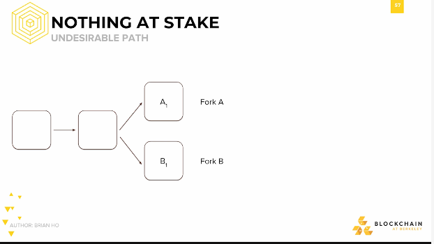
The CAP Theorem states that any distributed system can only achieve 2 of the following 3 properties at any given time:
- Consistency: every node provides the most recent state of the system
- Availability: every node has constant read and write access
- Partition Tolerance: ability to function in spite of partitions in the network, where a partition is the inability for two or more nodes to communicate with each other; this is almost a given for any distributed system
It is important to understand there aren’t black and white tradeoffs between these three properties -- compromises can be made.
III. Byzantine Fault Tolerance
Byzantine nodes may act maliciously or arbitrarily. Achieving consensus when ⅓ or more of the nodes are Byzantine nodes is impossible.
There are two types of faults that may be produced by Byzantine nodes, where faults are deviants from protocol:
- Fail-stop: a node can crash and not return values
- Byzantine: in addition to above, nodes can also send incorrect/corrupted values; all deviations from protocol fall under this category
IV. Voting Based Consensus Mechanisms
These mechanisms allow nodes to come to consensus when no more than ⅓ of the nodes are Byzantine nodes.
Paxos - Consensus mechanism inspired by the Paxon parliament, who used the Paxos algorithm to pass decrees and make sure everyone on the island was in consensus. Assumes nodes do not try to subvert protocol; only works for fail-stop, no byzantine failure tolerance.
o Proposer: proposes legislation/changes to current state
o Acceptor: decides whether to accept proposed legislation
o Learner: learns and distributes changes to mass audience
o Quorum: Majority of acceptors, any two quorums must overlap
Raft - Leader based approach designed to be more understandable than Paxos, easier to implement; i.e. JP Morgan’s Quorum (enterprise version of Ethereum).
o One and only one leader: communicates with client directly, responsible for log replication on other servers, leads until fails or disconnects
o Leader election: leader sends heartbeats to signal it is online and functioning; if no heartbeats are received the first node to realize a lack of leader becomes the new leader
Practical Byzantine Fault Tolerance - fast, handles F faults in a system with 3F + 1 nodes, BFT-NFS implementation only 3% slower than standard unreplicated NFS
Operates using 3 phases:
o Pre-prepare: the primary node sends out pre-prepare messages to everyone in the network; a node accepts the pre-prepare message so long as its valid.
o Prepare: If a node accepts a pre-prepare message, it follows up by sending out a prepare message to everyone else; prepare messages are accepted by receiving nodes so long as they’re valid, again, based on sequence number, signature, and other metadata; A node is considered “prepared” if it has seen the original request from the primary node, has pre-prepared, and has seen 2F prepare messages that match its pre-prepare – making for 2F + 1 prepares.
o Commit: If a node receives F+ 1 valid commit messages, then they carry out the client request and then finally send out the reply to the client. The client waits for F + 1 of the same reply. Since we allow for at most F faults, we need to wait for at least F + 1, and this ensures the response to be valid.
V. Nakamoto Consensus
Used in Bitcoin and other cryptocurrencies. Whereas the voting based consensus mechanisms covered above use explicit voting, Nakamoto consensus uses implicit voting i.e. voting based on lottery-selection and earned voting power.
Nakamoto consensus is very robust:
o Anyone can join or leave the network at any time
o Anyone can even send corrupted messages to others
o Any user can have as many virtual identities/key pairs, as they want
o To prevent unfair voting from anyone who dishonestly creates multiple identities, voting power must be made scarce, done by tying voting power to a scarce resource such as power or electricity
Each Nakamoto Consensus protocol must have a set of rules defining how to choose the most valid state of the network, such as the longest chain policy in Bitcoin and many cryptocurrencies. This is because each node in the Nakamoto consensus network gets to choose its own state, and try to convince others of its validity.
Multiple forms of Nakamoto Consensus:
o Proof of Work - current blockchain standard, led by bitcoin and followed by most networks, led to mining craze and rapid acquisition of computing hardware
o Proof of Stake - experimental protocol to end electricity drain by staking tokens, can mine or validate block transactions according to how many tokens staked
o Proof of Activity - a proof of work and proof of stake hybrid protocol
o Proof of Capacity/Space - memory-hard PoW, allocating amount of memory or disk to solve a challenge
o Proof of Burn - like Proof-of-Stake, except staked coins are burned
VI. Proof-of-Stake
With proof-of-stake, validators are stakeholders with voting power proportional to the economic stake they have locked up. The assumption here is that someone with more stake is more incentivized to do things that will benefit the system and thus increase their economic stake.
Chain-based PoS chooses availability while Byzantine Fault Tolerant PoS chooses consistency.
Weaknesses of PoS versus PoW:
§ PoS is susceptible to corruption if over 33% of the network are malicious actors, whereas PoW requires over 50% malicious actors
§ PoS tends to lead to a rich-become-richer problem where those who stake substantial portions of the total network will grow in proportion due to higher likelihood of being selected, and thus rewarded
§ If the larger players grow past 33% of network, poses a threat to validity
VII. Federated Consensus
Federated consensus allows us to achieve explicit voting and censorship resistance, so that we can allow anyone to join but also protect the network against Sybil attacks.
If you don’t trust certain nodes in the quorum, we can avoid having a central party choose the quorum for us by using a quorum slice, or subsets of a quorum that a particular node can trust. A quorum slice allows us to individually choose who we trust, and when multiple quorum slices overlap, we form quorum intersections and thus a larger quorum.
Federated consensus is powerful because of its decentralized control, low latency, and flexibility towards trust. Popular implementations of federated consensus include Ripple and Stellar.
Readings (Week 1)
Short Overview of Alternatives to PoW
https://www.coindesk.com/short-guide-blockchain-consensus-protocols/
Adventures in Galactic Consensus
https://www.stellar.org/stories/adventures-in-galactic-consensus-chapter-1/
Stellar Consensus Protocol Overview
https://medium.com/a-stellar-journey/on-worldwide-consensus-359e9eb3e949
https://www.youtube.com/watch?v=Jw1iFr4v58M
http://container-solutions.com/raft-explained-part-1-the-consenus-problem/
Video:
Software Powering Falcon 9 & Dragon, Simply Explained
Time, Clocks, and the Ordering of Events in a Distributed System
The Byzantine Generals Problem
In Search of an Understandable Consensus Algorithm
Practical Byzantine Fault Tolerance
Tendermint: Byzantine Fault Tolerance in the Age of Blockchains
Casper the Friendly Finality Gadget
Securing Incentives: Cryptoeconomics & Proof-of-Stake - Week 2
Welcome to week 2 of CS198.2x, Blockchain Technology.
This week, we’ll be diving into an analysis of cryptoeconomics now that you have an understanding of distributed systems and consensus mechanisms, particularly in the context of blockchain.
You might have heard about cryptoeconomics before as an active area of research, but what does cryptoeconomics actually mean, and what significance does it have when dealing with blockchain?
Cryptoeconomics exists at a higher level than what we’ve covered so far in class, representing a fundamentally different way to analyze blockchain systems.
It’s a high level design abstraction, used to analyze, incentivize, and secure decisions for peers in a decentralized system.
Through understanding cryptoeconomics, we can understand and prove qualities about a blockchain system’s architecture without getting distracted by unnecessary details.
Intro: Cryptoeconomics
The world is full of decisions.
On a daily basis: when you wake up, go to work, take an online course, you’ve observed the state of the universe and come to some conclusion about the next move you need to make.
But what are the components of a decision?
And how do you ensure the decision is not modified later?
There are two steps to making a decision, and these two steps are critical to understanding cryptoeconomics.
The first step is to analyze the situation – the facts presented to you – and use judgement to come to a decision.
Every decision you make should be the best decision possible for you, according to rational choice theory.
This is where economics comes into play.
The second step is to secure that decision.
In the physical world, all decisions we make are “secured,” or made permanent, by physical devices.
Dollar bills for expressing a payment, handwritten signatures to generate a commitment.
However, in the virtual world, we lose access to all these pleasantries.
How does it work in the virtual world?
The second step is to secure that decision.
You need to ensure that your decision will not be manipulated by any observers.
This is secured through cryptography.
Cryptoeconomics is the analysis of virtual decision-making, from incentivizing actors to make the best decisions for a given goal from ensuring that the decisions’ history is maintained honestly and forever.
Cryptoeconomics

Cryptoeconomics aims to understand virtual decision-making by unknown, untrusting peers.
If that’s too abstract for you, think Bitcoin: several different people are trying to come to agreement on a history of transactions.
They’re all incentivized to exploit any possibilities which might bring them more profit.
Satoshi Nakamoto’s goal in designing Bitcoin, then, is to remove any possibilities of actors unfairly getting more profit than they deserve, however they chose to define “deserve.”
One could say a goal of Bitcoin would be to ensure actors get rewards proportional to the amount of computational power put into the network.
We know from our previous course, Bitcoin & Cryptocurrencies, that there are several ways to extract profit maliciously due to incentive misalignments.
To prevent inequitable behavior, it’s necessary to determine how to construct an ecosystem in which actors are incentivized to do things which help the greater good, and in which they can make those decisions securely.
Let’s break down how decisions are made, and let’s start with time.
Time is distinguished by three things: the past, present, and future.
In every moment, changes are happening because people are making decisions.
In the physical world, as mentioned in the intro, these decisions permanently change the world.
To replicate this in the virtual world, we need to first ensure that good changes are made, then make changes permanent.
Because this is a virtual world, every construction to make these all possible will be virtual!
What tools do we have to accomplish this?
Cryptography, first and foremost, is a secure information to make sure that decisions are not modified once made.
Every time an actor makes a decision in a decentralized network, they secure that decision with cryptography.
Examples include cryptographic signatures for authentication and hashes for immutability.
Hence, cryptography is used to secure the past.
Economics, on the other hand, informs us how to design our system to ensure that actors make decisions in line with the goals of the greater good.
By understanding the incentives of each actor, it’s possible to reduce the prevalence of game theoretical attacks.
Examples include the block reward in Bitcoin and the cost of mining to deter Sybil attacks.
In other words, economics is used to secure the future.
By combining these two perspectives, we can do some fascinating things.
Before we talk about those things, however, we want to go over some basic cryptographic and economic “primitives,” or building blocks, which we will then use to analyze and construct some examples of protocols.
Intro: Cryptography
Usually, when you hear the word cryptography, you think of hackers online disguising their identities and sending secret messages, or perhaps the Enigma machine developed and cracked during World War II.
These are all applications of cryptography, but what is the root meaning of the term?
Cryptography’s goal is to secure the integrity and confidentiality of information.
That’s all it does.
The implications of this goal, however, are broad, meaning that cryptography is used all over the world for information security.
Note that cryptography is primarily useful in adversarial environments.
There’s no point trying to keep information hidden and secure without the potential for failures or attackers.
In distributed systems with unknown, potentially adversarial actors like blockchain networks, cryptography is fundamentally important to ensuring that information is kept secret and safe whenever necessary.
Origins of Cryptography
Before we talk about the specifics of cryptography, let’s go over some situations which gave birth to the field of cryptography.
A famous example you may be familiar with is the Caesar cipher.
Julius Caesar, a famous leader and general of the Roman Empire, would often send messages with sensitive information to his fellow generals, such as information about an impending attack from an enemy.
Of course, this information could be misused if it got into the wrong hands.
What would be the ideal scenario, then?
It’s one in which Caesar sends a message to his recipient, but only he and the recipient can read it.
Anyone else trying to understand the information would fail.
Is there any way to achieve this?
Well, there was term developed in the last half a millenium to mean precisely this, known as “encryption,” the process of transforming information into an unintelligible intermediary piece of information which can be transformed back into its original state with decryption.
(This is different from cryptographic hash functions, as the input is not meant to be inverted by anyone, after the function is applied.)
Encryption schemes have two functions in use: the encryption function, and the decryption function.
The encryption function will take some meaningful data and turn it into something illegible.
The decryption function, on the other hand, will take the illegible information and make it meaningful.
How can we use this?
Let’s say we have a piece of information, known as x, which we want to keep secret.
If we encrypt x, it becomes E(x).
Anyone who reads E(x) should not be able to figure out what the value of x is.
In other words, they do not know the decryption function.
Let’s say Alice sends E(x) to Bob, and Bob has the decryption function.
This means that he can run the decryption function on E(x) to get the original input, x.
In other words, D(E(x)) should always equal x.
As long as only trusted third parties have access to a decryption function, only they can read the encrypted information.
So how does this relate to Caesar ciphers?
Caesar designed a scheme to perform exactly this.
A Caesar cipher is meant to be used on text.
As you can see in the image on the right, each input corresponds to some output letter.
Caeser ciphers rely on what is known as substitution, meaning that every letter is replaced with a different one.
Let’s go through the process of how a Caesar cipher works.
First, a random number is chosen.
This random number represents the amount of spaces the letter will be shifted.
It is called a “key” because it unlocks the secret message, making it the secret which allows someone to figure out the decryption scheme.
If the key were publicly known, then the Caeser cipher could be easily broken.
It is said that Caesar used the key 3 for all his ciphers, as demonstrated in the diagram.
In this section, however, we’ll consider that any key between 1 and 25 can be chosen.
(Since there are only 26 letters, there’s no point in choosing anything higher, since we’d just end up looping around to where we started.)
Once the key is chosen, we now know how to algorithmically generate an output from any given input.
We then take our specific input, run it through the encryption function which shifts each letter over some number of times equal to the key, and spits out the scrambled result.
This encrypted message has no discernable meaning.
The only use is to be decrypted later.
This encrypted message can be sent to others safely now, assuming no one else but the recipient knows how to decrypt the message.
When the recipient receives the message, they will use the key to recover the meaning from the previously illegible information.
In this case, decrypting the message requires shifting every letter in the opposite direction as the encryption function by the same amount, the value of the key.
Now, the recipient has the information, but no one else does.
Voila!
Keep in mind that this scheme does not imply anything about the integrity of the message or guarantee of its delivery.
If this message were a note carried by a bird, there’s nothing to stop someone from shooting the bird and tearing up the note, or even changing a few letters during transit.
This means that all we have is the guarantee that the information will not be read by an attacker, but they may be able to mutate or even destroy the message entirely.
Those other guarantees might be secured by other cryptographic or computer science measures, but those are out of scope for this lecture.
Let’s consider a scenario in which we might actually use a Caesar cipher.
Let’s say that, in 69 BCE, Nadir and I are generals in the Roman army.
He wants to send me a message.
Nadir and I are both good friends with Caesar, so we’re familiar with his famous encryption scheme.
As everyone knows, aliens played a big part in building the cities of Rome.
During their trip, they gave Nadir and myself a great deal of knowledge about blockchain.
We decide to leverage that during this process.
For whatever reason, he wants to send me the word “blockchain.”
How can he use the Caesar cipher to protect his message from foreign eyes?
Some time when Nadir and I met in person, we decided to use the number 21 as our key, since Bitcoin has a cap of 21 million bitcoins.
This means that our table would look something like the image below:
As you’ll see, there are two rows of 26 letters.
In the top row are the letters A through Z as normal.
In the bottom row, every letter has been shifted to the right 21 times.
Instead of starting with A, this row instead starts with F and ends with E. Essentially, the 1st letter now corresponds to the 6th letter in the alphabet, the 2nd letter to the 7th, and so on.
So now that we’ve generated our table, how can we use it?
Let’s try plugging the word “blockchain” into the table and see what happens.
The first step is to locate the letter “B” in the top row of letters.
Once we’ve done that, we can then use the table to figure out which letter it should correspond to.
As you can see, it happens to be G.
We go ahead and append that letter to our new encrypted message.
With the second letter, “L”, we go ahead and do the same thing.
We locate the letter…
… locate the corresponding letter, “Q”, …
… and add that to our list.
If we skip ahead to the end, this is what our final result looks like.
I’m not even going to try to pronounce that because it makes absolutely no sense.
But that’s exactly what we’re trying to do!
We want it to make no sense.
Nadir can now send this message to me without fear of anyone else reading it.
Let’s say Gloria, a traitor general giving secrets to the enemy, happens to intercept this message.
What can she do with this message?
She can burn or corrupt it, but she can’t read it.
Perhaps she doesn’t want to mess with the message, since that could inform Nadir and myself of a traitor, so she decides not to do anything.
By using the Caesar cipher, we’ve foiled her attempts at betraying the Roman Empire.
I’ve now received the encrypted message.
How can I turn it back into the original message?
As mentioned before, I need to decrypt it with the decryption function.
In the case of the Caesar cipher, I’d be using the key to make the function.
Only this time, instead of shifting letters to the right, I’d shift them to the left.
In other words, I’m undoing the shift that Nadir did on the original message.
Again, I plug the messages into the table, and I get the original word, blockchain.
Success!
Nadir and I, as an added layer of obfuscation outside the Caesar cipher, happen to use blockchain as a keyword to mean “prepare your defenses,” meaning that he knows of an impending attack on my fortress, possibly due to aliens.
I set up my defenses and am safe from the enemy attack, all thanks to encryption.
The Caesar cipher wasn’t the oldest kind of cryptography, nor was it the last.
There are several other examples, from ancient Egypt to modern life.
The Enigma machine, cracked by English hero and computer scientist Alan Turing, was developed by the German army during World War II to make messages indecipherable during transmission.
The machine was possibly the most complex encryption scheme on the planet at the time.
During World War I and World War II, America also devised a way to keep messages private.
However, instead of coming up with a code, they chose to seek help from bilingual Native Americans from various tribes, known during the wars as “code talkers.”
Because of the complexity of Native American languages and scarcity of speakers, they were asked to serve as communication intermediaries.
A general would safely give a message to a code talker, and the code talker would translate then relay the message over a long distance to another one.
Notice that the translation from English to the code talker’s language, such as Navajo or Cherokee, represents the encryption step.
The second code talker would receive the encrypted message and translate it back to English for a second general to hear.
To tie this back to cryptography in cryptoeconomics, you can tell that each of these devices are used after a decision is made, such as crafting a message or file for delivery.
Cryptography in all these examples focuses on securing the decision decided upon by some entity.
We’ll now go over some of the primitives in cryptography, which serve as building blocks for larger devices to accomplish this decision securing.
Cryptographic Primitives
In the next few slides, we’ll be presenting various cryptographic primitives that will be relevant in this lecture and in future ones, so pay close attention, and try to imagine situations where this primitive might be useful for accomplishing some goal.
One of the primitives you should be familiar with by now is the cryptographic hash function, which we shorten for convenience to hash function or just hash.
Keep in mind, though, that cryptographic hash functions are NOT the same as typical hash functions, even though we’re shortening the name for convenience.
As mentioned before, cryptographic hash functions are used to fingerprint a piece of information.
This is done through preimage, second preimage, and collision resistance, as explained in the previous course, Bitcoin and Cryptocurrencies.
Let’s look at an example where hashes are important for securing a blockchain network.
And we’ll do this by taking a sneak peak back at how Bitcoin’s tamper evidence system works.
First and foremost, the Merkle Root.
By using hash functions, we can capture the identity of the information without revealing anything about the information.
For example, if we take the hash of a transaction, the idea is that the transaction data will no longer match with the hash, the identifier, if modified, also implying that no other transaction will match this identifier as well.
The Merkle Root effectively does this over every transaction in the block.
Second is the previous block hash, which points to the previous block in the blockchain.
This makes the block permanently attached to the previous one.
By doing this throughout the blockchain, the chain becomes immutable.
Anyone trying to manipulate the history will corrupt that block and anything onwards.
Third is the block header hash, which needs to satisfy the requirement of being below a certain target value.
This is the part of the design which enforces Proof-of-Work.
Miners repeatedly try hashes until the block header hash is satisfactory.
Without the properties of hashes, it would be difficult to enforce these restrictions.
Another cryptographic primitive is the digital signature, used to cryptographically prove your identity.
Each individual has a public facing identity and a private piece of information used to authenticate themselves.
We recall from Bitcoin the public and private key scheme used by each individual entity to receive and send bitcoins.
Through using digital signatures, we assume each real-world entity can have at least one virtual representation of themselves, and that no one else can pretend to be that person.
It’s not uncommon for information to be lost in transit or in storage.
Is there a way to protect that information without duplicating it repeatedly?
This is what erasure codes attempt to solve.
Erasure codes construct an algorithm to add additional pieces of information to a piece of data.
Even if some pieces of data are lost, you can still reconstruct the original information if you have enough pieces of data left.
This is used frequently in memory replication protocols, such as RAID, as a way of ensuring data preservation and security.
Timelocks are a special kind of encryption.
Timelocks allow for a message to be easily encrypted but take a longer amount of time to decrypt.
In other words, there is a built-in delay before the information can be retrieved.
In addition, it is highly difficult to find ways to speed up the decryption of this information in parallel, meaning that putting multiple computers together won’t decrease the delay time.
This will allow us to ensure that data is not opened for some amount of time.
The equation on the right demonstrates how we can do this.
The value of n in the exponent is proportional to how much time it takes to decode, allowing us to easily adjust the functionality of this timelock to our specifications.
Game Theory
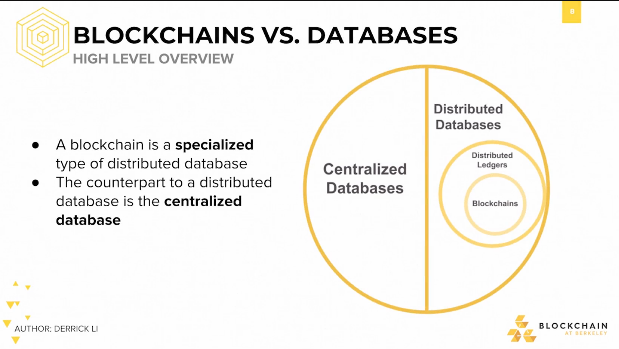
In Game Theory, we aim to deduce how an actor will act in a given situation. There are a number of factors that will affect the actor’s choice: these include the actions of the other actors in the situation, and the rewards and penalties associated with each possible outcome.
Thus, the rewards and penalties, or economic incentives, in a game can be manipulated to change the actor’s choice of action. The most commonly used economic incentives in blockchain are tokens, units of protocol defined cryptocurrency given out to miners and privileges, decision making rights miners can charge for.
For the purpose of our analysis, we will assume that the underlying objective for actors in our crypto economic games is to maximize their profit, which is equals their revenues minus their costs. The economic incentives at hand here then, are that we use must change the actor’s expected profit outcome in order to change the actor’s choice.
We can incentivize actors to act a certain way using the carrot and stick theory, where we offer carrot rewards like increasing token balances or privileges for good behavior, and offer stick punishments like decreasing tokens or privileges for bad behavior.
Another method to incentivize actors to do the right thing is by using a security margin.
A cryptoeconomic security margin is an amount of money, X, such that either some requirement G is satisfied or all actors violating G will be poorer by at least X. Actors must decide to either lose X sum of money or abide by the rules of the game.
To enforce acceptance of the security margin, we use something called a cryptoeconomic proof, where messages signed by the actor are interpreted as confirmations of their decisions, that either some proposal is true or the miner agrees to suffer that economic loss.
Let’s take a step back now, and think about how we can deduce how actors will act in situations given these incentive structures. To solve this problem, we’ll be using the game theory model of Normal Form Games. Normal form games have a set of N actors who each have a set of A possible actions. Their expected payoff from the game depends on the outcome.
In the Uncoordinated Choice Model, actors must make decisions without coordinating with other actors. While each actor will know the incentives and best response strategy of every other actor, actors cannot work together to decide upon their actions. Thus all the actors in such a game have separate incentives. To motivate correct behavior, a good incentive mechanism would set the security margin to be higher than each of the individual incentives.
The fixed collection of actions the players of a game will ultimately take is known as the Nash Equilibrium. The Nash Equilibrium is the state from which no actor can change their action to receive a better outcome.
Let’s now take this abstract theory and implement it in a real life situation.
Suppose a situation in which there are two prisoners, Prisoner A and Prisoner B, who were recently detained for robbing a bank.
The inspector separates the criminals into two different rooms and interrogates them.
To each, he gives the choice to turn the other prisoner in, or remain silent. If both prisoners remain silent, they will both suffer 5 years in prison.
If one prisoner remains silent but the other prisoner turns him in, the silent prisoner will bear responsibility for the whole crime and face 20 years in prison, while the snitch will face 0 years in prison. Finally, if both prisoners decide to turn the other in, they will both face 10 years in prison.
Since the prisoners are separated, they must make the decision individually and cannot coordinate with the other. So what will the prisoners decide?
If Prisoner B chooses to remain silent, Prisoner A will choose to speak, because in doing so, he can get 0 years of prison time instead of the 5 years he would get if he also remained silent.
If instead Prisoner B chooses to speak, then Prisoner A will again choose to also speak, because the 10 year penalty of them both speaking is still less than the 20 year penalty of Prisoner A remaining silent while Prisoner B speaks.
We can deduce the same best response strategies for Prisoner B. Thus we are left with a situation where given any action of the opponent, each prisoner benefits more from speaking than from remaining silent.
This outcome is our Nash Equilibrium. Given the state where both prisoners speak, neither prisoner can change only their own decision to get a better sentence.
This is called the Prisoner’s Dilemma, where both prisoners end up with a 10 year sentence, even though they could have both gotten only a 5 year sentence if they had both remained silent!
Now let’s take a look at an example where there are two Nash Equilibria. Here’s the traditional example.
Suppose a man and a woman are deciding where to go on a date, boxing or shopping. If they both go boxing, the man will be slightly happier than the woman. If they both go shopping, the woman will be slightly happier than the man. However, if they choose different options, neither will be happy at all because they won’t go on a date together.
Thus both going boxing and both going shopping are the Nash Equilibria from which no one character can change their decision to receive a better payoff. Since there are two such equilibrium outcomes, the two agents must coordinate to align their actions to each other and pick one of the outcomes. In coordinated games, the actors in a protocol are controlled by the same agent.
We’re now going to look at another example of such games in the context of cryptoeconomics.
Schellingcoin is a thought problem Vitalik came up with to teach principles of cryptoeconomics.
In this example, suppose A is the objectively right way to orient a toilet paper roll.
Suppose you are a sensor oracle, and you must answer the question, what is the right way to orient a toilet paper roll? Well, let’s go back to choice models to see how to deal with this situation.
You will get a reward, P, only if you vote with the majority. Here there are 2 Nash Equilibria.
Everyone could vote A, and you could vote A and get the reward. Or everyone could vote B, and you could also vote B and get the same reward, even if B is the wrong answer.
However, in this scenario we will assume that players will be incentivized to vote the true answer, A, because they want to vote with the majority and believe others will choose the same, given the same choices.
Someone who wants the oracle to converge on the wrong answer can do so using the Bribing Attacker Game. Let’s say Nadir is voting now and he saw the majority was going to vote
for A. However, I really want him to vote for B. I can promise Nadir that I will pay him P+ε if and only if Nadir votes for B but the majority votes for A. Nadir, under the belief that he is the only one who got this deal, will vote for B thinking everyone else will vote for A. However, I meanwhile have been giving every single actor the same deal, and each person thinks like Nadir to switch their vote to B, not knowing everyone else is doing the same.
In the end, everyone votes B, and I, the attacker, do not have to pay any money in bribes since I only agreed to paying the bribe if each actor voted B while the majority voted A.
Now, some attacks review, with a particular focus on economic incentives.. These were covered in our first course, go back and take that course if you haven’t already.
Let’s review an attack called feather forking. Suppose Gloria is a large mining pool. To carry out this attack, Gloria would announce that she will attempt to fork every time she sees a transaction from me, Rustie. But, she also announces that she would give up after the block containing my block has k confirmations. Unlike the attack where one attempts to fork forever, punitive forking, this attack can still work even if you have less than 51% of the mining power.
So what chance does Gloria, the mining pool, actually have at successfully forking? To answer this question, let’s suppose she have q proportion of the total mining power.
Let’s have k, the number of confirmations after which she’ll give up, be equal to 1. This means she has a q times q, or q^2 chance of successfully orphaning my block.
In a case where q is equal to 20%, this means her chance of successfully orphaning my block is just 20% squared, or 4%. These are not great odds.
Even though her odds of actually orphaning my block are very low, they still change the rest of the miners’ choice model in a powerful way. If the miners’ block is rejected, the miners will make 0 profit. However, if the miners’ block is accepted, then the profit the miners will expect to receive will vary based on whether they include my transaction in the block.
If they do choose to include my transaction, then the miners’ expected payoff from doing so will be my transaction fee plus the block reward times the probability that the attacking mining pool does not orphan the block with my transaction, or 1-q squared. However, if they choose not to include my transaction, then their expected payoff will just be the block reward. In order for the expected payoff from including my transaction to be greater than the expected payoff from not including my transaction, I must pay a transaction fee that offsets the difference. This can prove incredibly expensive and perhaps infeasible for me.
Thus we have shown that even with 20 percent of the network hashrate, we can make it prohibitively expensive for someone to participate in the Bitcoin network.
Now that we have the game theory knowledge, you have likely seen the same attack from a completely different perspective. This is exactly what we’re aiming for, to understand common blockchain protocols from this cryptoeconomics perspective. We’ll leverage this frame of mind as we dive into the next section, Proof-of-Stake.
Blacklisting

Now, some attacks review, with a particular focus on economic incentives.. These were covered in our first course, go back and take that course if you haven’t already.
Let’s review an attack called feather forking. Suppose Gloria is a large mining pool. To carry out this attack, Gloria would announce that she will attempt to fork every time she sees a transaction from me, Rustie. But, she also announces that she would give up after the block containing my block has k confirmations. Unlike the attack where one attempts to fork forever, punitive forking, this attack can still work even if you have less than 51% of the mining power.
So what chance does Gloria, the mining pool, actually have at successfully forking? To answer this question, let’s suppose she have q proportion of the total mining power.
Let’s have k, the number of confirmations after which she’ll give up, be equal to 1. This means she has a q times q, or q^2 chance of successfully orphaning my block.
In a case where q is equal to 20%, this means her chance of successfully orphaning my block is just 20% squared, or 4%. These are not great odds.
Even though her odds of actually orphaning my block are very low, they still change the rest of the miners’ choice model in a powerful way. If the miners’ block is rejected, the miners will make 0 profit. However, if the miners’ block is accepted, then the profit the miners will expect to receive will vary based on whether they include my transaction in the block.
If they do choose to include my transaction, then the miners’ expected payoff from doing so will be my transaction fee plus the block reward times the probability that the attacking mining pool does not orphan the block with my transaction, or 1-q squared. However, if they choose not to include my transaction, then their expected payoff will just be the block reward. In order for the expected payoff from including my transaction to be greater than the expected payoff from not including my transaction, I must pay a transaction fee that offsets the difference. This can prove incredibly expensive and perhaps infeasible for me.
Thus we have shown that even with 20 percent of the network hashrate, we can make it prohibitively expensive for someone to participate in the Bitcoin network.
Now that we have the game theory knowledge, you have likely seen the same attack from a completely different perspective. This is exactly what we’re aiming for, to understand common blockchain protocols from this cryptoeconomics perspective. We’ll leverage this frame of mind as we dive into the next section, Proof-of-Stake.
Intro: Proof-of-Stake
Now you understand how economics is used to incentivize good decisions and how cryptography is used to secure those decisions.
The combination of these two frames of mind will give you a holistic view of cryptoeconomics, the approach for analyzing decentralized networks with incentive schemes.
We mentioned Proof-of-Stake in the previous lecture in terms of how it works and its’ general mechanics.
In this section, we’ll go more in depth at it through the lens of cryptoeconomics.
Proof-of-Stake is a particular type of blockchain system that assumes all voting power is tiattacksed to financial resources.
Through cryptoeconomics, we want to understand how actors in a Proof-of-Stake system can be incentivized to do the right thing and disincentivized to cheat.
Through the cryptographic and economic primitives we learned in the previous sections, we’ll break down Proof-of-Stake choices at an architectural level.
Proof-of-Stake
Up until now, the main consensus algorithm we’ve focused on is Proof-of-Work.
Proof-of-Work, although the system behind the most popular cryptocurrency, Bitcoin, still has many drawbacks.
For example, we have already mentioned the massive amount of energy consumption required for Proof-of-Work, the potential for 51% attacks, as well as the shift from decentralized individual miners, to more centralized mining pools.
To solve some of these issues, Proof-of-Stake was introduced.
As mentioned earlier, Proof-of-Stake is a consensus mechanism where voting power is directly proportional to economic stake locked up in the network, instead of computational power and resources.
Each participant stakes a certain amount of native currency, and each node is given a probability of being chosen as the next validator, weighted by how much was at stake.
Once a validator is chosen, they can propose a valid block and receive a reward.
With this scheme, how much power a participant has in the network is limited by the amount they are willing to stake.
Rather than relying on rewards for security, Proof-of-Stake relies on penalties.
If a participant places stake on a dishonest block, they are penalized and lose however much they put at stake.
In this, acting maliciously is penalized much more heavily than the gain from acting honestly.
This is one example of defender’s advantage.
Nodes are now more disincentivized to act maliciously due to the explicit consequences of doing so.
This security comes from locking up capital for long periods of time.
Proof-of-Work, on the other hand, has no such defender’s advantage: the cost of attacking and the cost of defending are 1:1, meaning the amount of resources I spend on acting honestly versus acting dishonestly are equal.
There is no explicit disincentive against acting maliciously in Proof-of-Work: it just simply allows it.
Another advantage Proof-of-Stake has over Proof-of-Work is the drawback in attempting a 51% attack.
In Proof-of-Work, a dishonest actor needs 51% of the network’s hash power, and if achieved, can censor transactions, rewrite transaction history, and perform double spend attacks.
Nodes are not explicitly discouraged from attempting a 51% attack, and, if unsuccessful, only lose the resources used to attempt the attack.
This cannot be said for Proof-of-Stake, which requires 51% of the network’s coins.
This is incredibly expensive, and then the attacker must stake all of their wealth in order to attempt executing the attack.
Since this miner owns 51% of the cryptocurrency, it is not in their best interest to attack a network that they hold a majority share in if the value of the currency were to drop due to the attack.
As seen, there are major drawbacks in attempting this, another example of Proof-of-Stake’s disincentive focused system.
Although Proof-of-Stake fixes many issues with Proof-of-Work, it is not without its own drawbacks.
For example, there is the problem of the “rich get richer.”
Those with more wealth can stake more and increase their chances of creating the next block, and therefore receiving the reward, and increasing their wealth further.
One implementation of Proof-of-Stake is Ethereum’s Casper Protocol, which takes this to another step, which enforces a minimum stake value required to validate blocks.
Some argue that this takes the issue to an extreme and makes the system even much more centralized.
However, only time will tell.
Another issue of Proof-of-Stake stems from the fact that amount of voting power is tied directly to how much stake one has.
In Proof-of-Work, anyone can buy ASICs and begin participating in the network, but in Proof-of-Stake, all the voting power is internal to the system so one can only obtain stake if a current stakeholder sells theirs.
This means that if a single actor is able to obtain 51% of the cryptocurrency, there is no way for this power to be taken back by the rest of the network.
In Proof-of-Work, dislodging 51% power would only require more computation through more honest mining, reducing the relative power of the malicious actor.
However, in Proof-of-Stake, the only way to reduce this power is to decrease relative amount of cryptocurrency the dishonest validator has.
However, there is no way to do this without the 51% stakeholder willingly selling their stake.
Proof-of-Stake also introduces the liquidity problem.
Since validators must lock up their funds in order to have a stake in the network, the actual amount of funds available for transactions is much lower.
This reduces the liquidity of the cryptocurrency itself, decreases the amount of available funds, and increases price and demand.
But because of this, validators are more incentivized to hold onto their funds and sell it when the prices increase, rather than participate in the network.
One more issue is the fact that someone can rewrite the history of blockchain if someone with a huge share of stake sells their private keys.
By obtaining such a large stake in the network, they change previous transactions on a different chain.
Outside of these drawbacks of Proof-of-Stake that were mentioned, there are also specific attacks that can be conducted in a Proof-of-Stake system that will be covered in the next section.
Intro: Attacks
In this last section, we’ll cover Proof-of-Stake attacks, again analyzing them from the perspective of cryptoeconomics.
Each attack represents a scenario in which the incentives of an individual are not aligned with the incentives of a group.
In other words, these game theoretical attacks allow individuals to gain an unfair advantage.
In Proof-of-Work, some penalties are implicit – wasting mining power on a malicious fork will cost you computational power if the attack doesn’t succeed.
In Proof-of-Stake, however, because all the information is virtual, every penalty needs to be explicitly defined.
Because the resource consumed is monetary value, bad actors need to receive an explicit monetary penalty with each attempted attack to keep the system in check.
Attacks

Let’s start looking at the most basic problem in Proof-of-Stake: the Nothing at Stake attack.
This problem stems from the fact that all voting uses virtual resources, rather than physical ones like Proof-of-Work.
Keep in mind the goal of the blockchain: to come to consensus on a single correct chain.
Anything that prevents this from happening should be discouraged.

If ever the blockchain ends up in a situation which consensus is not desirable for individual actors, then there is an issue.
These two forks might continue on forever, and no one will come to consensus!
What is it about Proof-of-Stake that makes this an issue?

Take a look at the bottom image demonstrating Proof-of-Work.
As you know, Proof-of-Work implies that each actor has a limited amount of computational power that can be expended at any point in time.
If a miner sees a fork, they will be forced to decide how to split up their voting power.
If each fork has an expected chance of becoming the longest chain, then the best strategy is to maximize the overall expected value of your efforts.
Fork A has a 90% chance of succeeding, so the expected value from mining on that fork is 0.9.
Fork B similarly, with a 10% chance of success, has a 0.1 expected return value.
If the miner were to split their vote between forks, they’d end up with a 0.5 expected return.
The best choice is obviously to mine exclusively on Fork A for the highest expected value of return.
But what happens in Proof-of-Stake under these same circumstances?
Fork A again has a 90% chance of success, and Fork B a 10% chance.
Voting exclusively on Fork A has a 0.9 expected return, and exclusively on Fork B a 0.1 expected return.
But what about voting on both?
Keep in mind that there’s no physical restriction stopping someone from putting their signature on the next block of each fork.
In fact, by voting on each block, the voter is able to maximize their expected return value.
One of the forks must beat the other; this is a guarantee.
If getting your votes into the longest fork is what gives you the most reward, why not vote in all forks so that you win no matter which fork is best?
This leads to the expected value of voting on both forks as 1, making it the clear choice for any rational actor.
This is troublesome because the implication is that there will never be a longest fork!
Both forks will continue to grow indefinitely.
Is there a way to solve this?

Well, to discourage voting on voting on incorrect forks, let’s introduce a penalty to do exactly that.
Though the solution is simple on the surface, it has great implications.
There are two kinds of penalties to choose from.
One of them is to punish anyone who votes on the wrong fork.
The other is to punish anyone who votes on multiple forks.
Both of these punishments are known as “slashing.”
Because someone might vote on what seems like the right fork in their local view as honestly as possible but is actually the wrong fork to the rest of the network, most Proof-of-Stake design choices choose the second version of the penalty.
But how can we enforce this penalty?
Keep in mind that each validator voting on a block provides a signature, demonstrating a conscious choice to put their stake behind a block.
If we find conflicting signatures, meaning two blocks in different forks with signatures from the same validator, we can broadcast this information to the rest of the network as proof of their malicious activity.
Because all voting is virtual, even the penalties for malicious voting strategies need to be explicitly enforced.

As you can see in this example, we've made it such that the best choice is to vote on fork A. This is because voting on fork B, or voting on both, now leads to penalties for the voter.

One major attack that can be conducted in a Proof-of-Stake network is a long range attack.
In this scenario, attackers essentially create a new chain of transactions starting from the Genesis block and then attempt to take over the main chain.

There are two properties in Proof-of-Stake that allow this to happen: nothing-at-stake and weak subjectivity.
Nothing-at-stake, which is explained earlier, allows for long range attacks due to the costless nature of creating a branch.
Next, there is weak subjectivity.
When a new node joins a Proof-of-Stake network, the only block that is accepted is the genesis block.
These nodes are also given all of the published chains, which makes it difficult for nodes to choose the main blockchain.
Weak subjectivity is a problem for both new nodes and nodes that come back online after being offline for long periods of time: neither of these nodes know which of the chains they are given is the main chain.

One preconception about blockchains in general is that the longest chain is the most trustworthy one.
This can be said about proof-of-work, as the longest chain has the most computational work done on it.
However, unlike in Proof-of-Work, in which the main chain can be quite easily determined by finding this longest chain, Proof-of-Stake has no easy way to determine this.
This means that a chain that was created with the goal of executing a long range attack can potentially be accepted as the main chain.
To explain this clearly, we will step through an example.

Suppose Gloria owns 1% of the tokens the moment the genesis block is created.
Instead of “mining” on the main chain, she mines on her own secret chain.
Because it basically costs nothing to create blocks, Gloria can easily create a chain that is longer than the current main chain.
If this chain is accepted and replaces the other chain, Gloria has effectively rewritten the entire blockchain history starting from a specific block.
This is called a long range attack because it can be executed from any point of the chain, including the genesis block.

Next, we’ll take a look at the Stake Grinding attack.
This attack takes advantage of the fact that in a Proof-of-Stake protocol, we need a method of randomly picking the next validator.
In case that validator is offline, we need a next validator we can call upon, and so on.
In other words, we must create a protocol to develop an infinite random sequence of validators we can call upon in case the next one is offline.
In practice however, a validator will be found within the first few validators we call upon.
In some proof-of-stake implementations, the validator chosen depends on the previous block’s signature.
This setup opens up the opportunity for attackers to choose block signatures in the blocks they produce to increase their probability of getting chosen as a block validator.
Attackers can choose from different block signatures by playing around with the block parameters to change the signature outcome.

There are a few ways that we can address this vulnerability.
The first is that we can stop using any mutable parameters from the previous block to generate the random pick for the next validator.
In other words, only parameters that miners have no control over should be used to generate randomness.
We can also have all validators deposit their stake well in advance, so that individuals cannot plan on being a validator in the next round.
Finally, we can have some secret sharing mechanism where we have multiple validators come to consensus on some random value that can help pick the validator for the next round.
Unless there is collusion within the majority, this strategy should work.
Text: Week 2 Summary
Written by Deven Navani and Nicholas Shen
Economic principles help us to design a system so that actors are incentivized to make decisions in line with the goals of the greater good. We are able to secure the future. (e.g. block reward in Bitcoin and cost of mining to deter Sybil attacks)
Cryptography allows us to secure the past and ensure our decisions cannot be manipulated by observers (e.g. cryptographic signatures for authentication and hashes for immutability)
Cryptography aims to secure the integrity and confidentiality of information.
The need for cryptography is especially important in distributed systems, where unknown actors are a potential threat to the secrecy and safekeeping of information.
Encryption is the process of transforming information into an unintelligible intermediary piece of information which can be transformed back into its original state with decryption. An early example of encryption was the Roman Empire’s use of the Caesar Cipher, in which messages are encrypted by shifting letters to the right by a previously set amount.
Be aware of various cryptographic primitives (review from previous course):
- Cryptographic hash functions, used to capture the identity of information without revealing anything about the information itself
- Digital signatures, used to prove your identity and that you sent a particular message
- Erasure codes lower the 100% data availability requirement
- Timelocks allow for a message to be easily encrypted but take a longer amount of time to decrypt.
Economics boils down to a fundamental question: how do you determine the best choice to make with your limited resources in order to maximize your profit? Economics also helps us to design a system so that everyone is incentivized to act in a certain way.
In game theory, we aim to deduce how an actor will act in a given situation. These decisions are influenced by the actions of others and the rewards and penalties associated with certain decisions. Therefore we aim to manipulate these factors.
In blockchain, tokens are used as economic incentives. Tokens are units of protocol defined cryptocurrency given out to miners and privileges miners can charge for. The assumption here is that the underlying objective for actors in a blockchain network is to maximize their profit, which equals their revenues minus their costs.
Proof-of-Stake is a particular type of consensus mechanism that assumes all voting power is tied to financial resources. Fundamentally, the idea is: the more tokens or currency an actor holds within a Proof-of-Stake system, the stronger the incentive for them to be good stewards of said system; if the system grows the wealthier the actor becomes. Thus in Proof-of-Stake, we give these individuals the most power as validators.
Major PoS implementations:
- Tendermint - First BFT-based PoS consensus mechanism, published in 2014
- Casper the Friendly GHOST (CBC) - a family of consensus algorithms designed from ground up i.e. Correct-by-construction, a proposed upgrade for the Ethereum network
- Casper the Friendly Finality Gadget - a Proof-of-Work and Proof-of-Stake hybrid; another upgrade proposed for the Ethereum network
Each proof of stake attack represents a scenario in which the incentives of an individual are not aligned with the incentives of a group, i.e. giving an unfair advantage to any single actor. Because the resource consumed is monetary value, bad actors need to receive an explicit monetary penalty with each attempted attack to keep the system in check.
If there was zero penalty, the expected profit of any given attack would be some number greater than zero, providing an incentive. By penalizing users for incorrect or malicious actions, the system hopes to bring the expected value to less than or equal to zero.
Examples of attacks:
- Nothing-at-Stake: voting in favor of every fork in hopes of maximizing one’s rewards i.e. guaranteeing you will not miss the reward from the chosen branch; solution: slashing an actor if they are caught voting on multiple forks, or a less popular scheme penalizes incorrect votes; keep in mind that voting takes place using cryptographically identifiable/verifiable signatures.
- Stake grinding: attack where a validator performs some computation or takes some other step to try to bias the randomness in their own favor; solution: require validators to deposit their coins well in advance, and avoid information that can be easily manipulated as source data for randomness.
Weak subjectivity is a problem for new nodes or nodes that have been offline for a long time; the node does not know which chain is the main chain; solution: introduce a "revert limit" - a rule that nodes must simply refuse to revert further back in time than the deposit length.
Readings (Week 2)
A Proof-of-Stake Design Philosophy
Princeton Textbook Ch 8.5 Proof-of-Stake and Virtual Mining (link in Week 0 resources)
A (Short) Guide to Blockchain Consensus Protocols
Consensus Mechanisms Explained: PoW vs. PoS
Long-Range Attacks: The Serious Problem With Adaptive Proof of Work
Secret Sharing and Erasure Coding: A Guide for the Aspiring Dropbox Decentralizer
Introduction to Cryptoeconomics
EB105 - Vlad Zamfir: Bringing Ethereum Towards Proof-Of-Stake With Casper
Real-World Applications: Enterprise Blockchain - Week 3
Welcome to Week 3 of CS198.2x, Blockchain Technology.
So far, we’ve primarily been studying blockchains designed for public use.
While these systems are interesting to build and study, many business use cases don’t require the same level of decentralization and trustlessness.
This is because public blockchains tend to assume nothing about the motivations or incentives of users in the network, hence preparing themselves for the worst case scenario.
This ensures maximum trustlessness, but the guarantee reduces efficiency greatly.
Many enterprise use cases, on the other hand, require a lower level of trustlessness and decentralization in the system.
Blockchain systems are not strictly decentralized, but instead on a spectrum – we’ll be taking a look at the different kinds of systems we can design.
We’ll first take a look at where enterprise blockchain systems fit in the whole space, as well as the current platforms and other infrastructure available for use.
Then, we’ll look at some specific use cases and industries and how blockchain fits in (or doesn’t).
And finally, we’ll take a step back and look at the culture, regulations, and caveats surrounding enterprise blockchains.
Intro: Enterprise Blockchain Overview
Before jumping straight into enterprise blockchain platforms and use cases, as always, we must first understand the architectural decisions that enterprise use cases need to make.
What problems are we trying to solve?
What exactly is an enterprise blockchain?
Does it make sense to have one for this particular issue, or will traditional methods work better?
In this section, we’ll give all the context we need in order to start thinking about enterprise blockchains.
First, we’ll tell the story of how we started from open-access, trustless, and decentralized blockchains, to developing more trusted and centralized enterprise blockchains.
We’ll then make a quick comparison between related technologies and distinguish different types of blockchains available for use.
Enterprise Blockchain History (3:56)
As Bitcoin and blockchain grew increasingly popular, banks and large corporations began to take notice of the potential applications of this new technology.
However, while cryptocurrencies such as Bitcoin wanted to eliminate the need for banks by creating a public distributed ledger, banks wanted to harness the same blockchain technology without making their own institutions redundant.
Instead, banks wanted to use blockchain technology to create “permissioned blockchains”, or private networks in which some central authority controls who is able to take part in consensus and validate transactions on the network.
This interest eventually led to the rise of enterprise blockchains.
Such permissioned blockchains were not open and not trustless, and lacked the economic incentives we’ve studied in the past.
But this is all ok, since the goal here wasn’t to create another public blockchain network like Bitcoin.
Instead, it was to separate the “blockchain” from “Bitcoin.”
The general movement was that of curiosity and competition – to see how blockchain technology could apply to businesses, and improve their competitive edge.
The sentiment around this was mixed though.
Many saw this as just glorified public key cryptography – and at its core, just a new buzzword to boost hype and traffic and stock prices.
At the same time, others encouraged the research into fundamental blockchain technologies, as they were more compliant and better suited for enterprise use than associated public blockchain systems.

While many use cases exist for enterprise blockchains, most problems that enterprise blockchain aims to solve fall within three broad classifications: solving coordination failures, horizontally integrating systems, and creating self-sovereign decentralized networks.

Although many enterprises now wish to take advantage of blockchain technology, true enterprise blockchain solutions are typically very situational.
In their current state, blockchains do the equivalent of making a computer hundreds or thousands of times less efficient, since each node in the network must redundantly make the same computations as all other nodes in the network.
In order to come to consensus, these nodes must then communicate with other nodes all around the world, which further introduces latency issues.
As a result, blockchains are far less scalable than traditional systems.
Additionally, blockchains introduce security risks, as hacks are no longer restrained to compromising data but can allow perpetrators to steal money directly.
All these factors combined mean that enterprise blockchain use cases must have specific scaling and use case requirements that would make a non-blockchain solution unfeasible.
And as previously mentioned, industry has shown that enterprise blockchains are most optimally used to solve coordination failures, horizontally integrate systems, and create self-sovereign distributed and decentralized networks.
Let’s look back at the previous slide.

Coordination failures between multiple parties seeking to work together often exist due to trust issues.
Blockchain solves this issue by creating arbitrary incentive structures and being able to operate in the public domain without the coordination of a centralized entity, making it ideal for enterprise projects such as public infrastructure.
Blockchain is also an integration technology – it combines data silos together into a single integrated system that captures greater economies of scale.
By ensuring data immutability, integrity, auditability, and authenticity, blockchains enforce a common API and data standard, allowing multiple systems to be immediately interoperable.
Lastly, blockchain provides new decentralized models to work with alongside existing centralized ones, thus preventing the possibility of centralized corruption.
Enterprise Blockchain Overview

At its most basic level, a blockchain is merely a highly specialized type of database.
Here on the right, you can see a very generalized and broad categorization of databases.
Fundamentally, we can have either centralized or distributed databases.
Of course, with a centralized database, you have to trust the single database – there’s no consensus to be reached.
With distributed databases, that’s where the idea of trust starts to be more of a concern.
In distributed databases, you could have a network of trusted, fault-tolerant databases.
However, within distributed databases, we can also have distributed ledgers, which generally imply looser trust guarantees.
They enable parties who don’t fully trust each other to come to consensus.
And then finally, blockchains are a subclass of distributed ledgers.
We’ll go into detail in a bit.
One note is that while there might be contention in what the definition of “distributed” and decentralized and centralized actually means in the context of database classification, especially within the blockchain space, in this course we generally mean in terms of politics and geography.
For example, we might refer to an organization’s database systems as centralized, because they are all operated by a single entity – so they’re politically centralized.
And in terms of geography and spatiality, we could have a single “central” database or multiple databases either geographically centralized or decentralized.
To better understand this, let’s go back to the form of databases most people are familiar with: centralized databases.

Centralized databases, such as a single password server, are located, stored, and maintained in one location, with one central entity handling all requests and data processing.
Some advantages of this are: design simplicity, immediate data updates, cost effectiveness, and minimal redundancy.
However, centralized databases also have many inherent disadvantages: they are prone to bottlenecks, lack simultaneous write access by multiple users to the same set of data, and act as a single point of failure.

On the other hand, distributed databases consist of groups of nodes which trust each other and cooperate to maintain a consistent view of the overall system.
Because there is no longer a single point of failure, the system is more fault-tolerant and can handle more demand by distributing load evenly across all nodes.

However, distributed databases also introduce increased complexity, cost, and redundancy as well as exposing more points of failure.
That’s just the overhead of being distributed.

A specific type of distributed database is a distributed ledger, which contains nodes operated by different entities that may or may not trust each other.
While many consensus mechanisms exist for distributed ledgers, those that specifically implement a chain of blocks in their record-keeping and consensus protocols are known as blockchains.

Recall from our Bitcoin and Cryptocurrencies course that the fundamental innovation of blockchain was not to enable distributed information sharing.
As we have just seen, many forms of distributed databases exist that allow for distributed information sharing without a blockchain.
Instead, blockchain’s uniqueness lies in its distributed record-keeping and decentralized exchange of value.
Compared to a traditional database, a blockchain system is uniquely able to remove the need for a centralized administrator and allow for non-trusting parties in the network to interact with each other.

Blockchains can also be categorized based on their architecture and the trust and access permissions that a typical user possesses.
Most generally, all blockchains fall into either the public or permissioned categories.
Public blockchains are the most widespread and well-known type of blockchains.
Some examples include the two most popular cryptocurrencies, Bitcoin and Ethereum.
Everyone in the world has read access to public blockchains, can propose to make changes to their protocols, and can participate in their consensus mechanisms.
This makes public blockchains advantageous in providing decentralization and censorship resistance.
The network effects associated with use of these public blockchain platforms result in increased application development.
For example, there are thousands of DApps built on top of Ethereum, and often less than 100 per private platform.
However, since public blockchains are open and accessible to everyone by definition, they limit the type of information that can be directly stored on the blockchain.
Sensitive and private data (i.e. medical records, SSNs, private keys) should not be put on a blockchain in plain text.
Public blockchains inherently function in a trustless environment.
Trust is no longer placed in people and organizations but rather in the math and code behind the system as a whole.
Looking away from fully trustless public blockchains, we have what are known as permissioned ledgers or permissioned blockchains.
Within the category of permissioned blockchains, there are both fully private blockchains, where permissions are centralized to one entity, and consortium – or federated – blockchains, where permissions are controlled by a central group of entities.
In permissioned blockchains, write permissions are limited to one central entity or consortium of entities, and read permissions may or may not be limited as well.
Permissioned blockchains allow organizations to change the rules of the blockchain at their discretion, allow for cheaper transactions, provide greater privacy, and mitigate the risk of traditional consensus based attacks.
Unlike traditional public blockchains, permissioned blockchains don’t have the property of being (publicly) open and trustless.
However, in an enterprise setting, permissioned blockchains might be used to solve a coordination problem amongst the loosely linked constituents.

While blockchain is still in its infancy, many tech powerhouses are already starting to show interest.
For example, Microsoft recently released the Blockchain Workbench, which is a set of tools on the Azure Platform for developers that work with distributed ledger technology.
Workbench aims to streamline the process by which companies can build applications on top of Azure-based blockchains through setting up infrastructure so that developers can focus on the logic of the application.
Hyperledger is a blockchain consortium that is led by IBM and Linux Foundation and summons development efforts from companies across industries and sectors to build together.
The goal of the project is to develop a enterprise blockchain platform that is highly modular and configurable for enterprise client to customize their own blockchain solution.
Hyperledger currently focuses on tackling problems in supply chain, healthcare, and finance.
Companies such as Walmart and Nestle have used Hyperledger to track food delivery in their supply chains.
Ethereum Enterprise Alliance is an organization within the Ethereum community hoping to extend Ethereum’s influence on enterprise.
It is a consortium of over 150 Fortune 500 companies and startups, and also institutions and governments that provides a standard framework for companies trying to build enterprise blockchain using Ethereum as their base layer.

Despite enterprise movement towards blockchain, there’s still differing perspectives and sentiment about blockchain technology as a whole – and this all depends on the audience that you’re speaking to, of course.
There are those who may be Bitcoin maximalists, who believe in the original vision of Bitcoin and blockchain, and despise enterprise blockchains for associating political centralization with the decentralized initial vision of blockchain.
And there are also the people who say that enterprise blockchain sucks.
Different people of different backgrounds tend to have this shared opinion.
Bitcoin maximalists might not like the use of blockchain by the companies that it was originally created to circumvent.
And these same individuals might really advocate for the use of cryptocurrencies.
Meanwhile, perhaps those more experience in the traditional industry might also say that enterprise blockchain sucks, but for the reason that they understand and prefer more traditional politically centralized cloud solutions.
Industry may also have those who know to dissociate cryptocurrencies and blockchain.
And some might even be too optimistic about blockchain being useful in every enterprise use case.
Finally, there are those who are more educated and recognize the strengths and weaknesses of the applicability of blockchain technology.
Blockchain can be cool, but only in very particular ways.

It’s a misconception that enterprise blockchains are always useful.
Some use cases have fundamental flaws – usually a misalignment with the core strengths and benefits of blockchain and distributed ledger technologies.
These use cases don’t warrant using a blockchain, and could perhaps could be addressed with centralized or distributed databases – but not a blockchain.
It’s also a misconception that blockchains are more efficient than some centralized solutions.
This misconception could be addressed from many different angles.
The question is: how we define efficiency?
If we’re talking about computational efficiency, then we already know that blockchains are highly redundant and therefore not computationally efficient.
After all, why write to potentially tens of thousands of nodes all over the world when you could just write to a couple, if not just one.
On the other hand, efficiency could be analyzed further, at which point it’s a matter of contemplating the tradeoffs between decentralization and scalability.
Similarly, there might also be people who say blockchains are cheap.
Generally, blockchains are very costly to maintain and develop, since it’s mainly a community effort.
And finally, another misconception might be that if an enterprise use case has already decided on using blockchain, they might think that they should just build their own blockchain, rather than using existing infrastructure.
Building your own blockchain isn’t as simple as one might expect.
In the past, many projects did just end up forking the Bitcoin blockchain’s codebase.
But nowadays, existing blockchain development frameworks have proven to be successful and secure.
Intro: Enterprise Blockchain Platforms
Now that we have a clear working framework for categorizing and designing blockchain system architectures, we can start to see some of the patterns between these categories.
Naturally, the best decision for the community is to develop tools to make these common necessities easily available and secure for anyone else to build off of.
As with any emerging technological field, the importance of infrastructure and accessibility for developers and companies looking to flesh out out use cases is just as important as the technology itself.
Reducing access barriers and uncertainty around a growing technology is crucial to capturing widespread adoption.
We’ll discuss various enterprise blockchain platforms and which use cases they’re geared towards – categorized primarily by their access type and consensus mechanisms.
Enterprise Blockchain Platforms
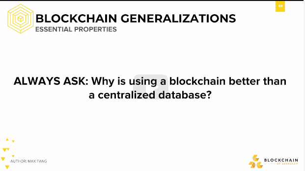
In the early days of blockchain development, the most common projects forked the original Bitcoin codebase to modify small but significant portions of the codebase.
Litecoin and Dogecoin using Scrypt, the memory-hard hash function, is an example of this.
This process required modifying the Bitcoin source code directly as well as developing a new community and a new set of miners–essentially starting from scratch on all levels.
With the popularization of Ethereum, smart contracts enabled users, from developers to companies to blockchain activists, to encode business logic directly into an existing platform rather than making their own from scratch.
However, this also means that each application is competing for resources with all other applications on the same network.
And this was demonstrated by Cryptokitties throttling the Ethereum Network.
This is equivalent to one website clogging the entire Internet.
While both these approaches were good starting points, they always brought with them high overhead and low optimization.
What if we want to make a blockchain or distributed ledger network with lower requirements for trustlessness to decrease overhead?
With the increased trust assumptions in permissioned ledgers, there’s no longer a strong enough need for high computational expenditure to reduce the chances of attack.
Enterprise blockchain platforms exist precisely to enable businesses to implement their own blockchain use case ideas without starting from scratch.
In this section, we’ll be taking a look at some enterprise blockchain platforms.
We’ll take a look at what blockchain platforms are out there in the industry today, that companies have started to develop on top of, rather than building their own blockchains – leveraging modularity in design.
Keep in mind that none of the examples within this lecture are supporting or opposing any particular initiatives.
We’re simply sampling a variety of projects across multiple different facets of the enterprise blockchain space.

As the use of blockchain becomes more and more prevalent, the issue of scalability also grows.
The idea of the Scalability Trilemma is that from security, decentralization, and scalability all blockchains can only have two out of these three properties.
Initially, most blockchain technologies such as Bitcoin and Ethereum were built with the two main focuses on security and decentralization.
However, as the number of users and transactions grew, the network slowed down more, and bottlenecks with performance become apparent.
Due to this, many newer blockchains are taking scalability into consideration into their designs, as well as previous ones attempting to mitigate these issues by incorporating new ideas into existing systems.
For example, Ethereum has researched into sharding and plasma for potential solutions to its scaling problem.
And Bitcoin has its Lightning network.
Instead of attempting to solve scalability while keeping both security and decentralization, some blockchains sacrifice the decentralized property in order to allow for scalability.
In blockchains such as enterprise blockchains, they have less of a need for decentralization, as their uses cases are usually limited to very specific users.
Thus, these blockchains still follow the scalability trilemma and exchange decentralization for scalability and security.

Ethereum is the industry standard blockchain platform for public projects at this point.
Ethereum is, as stated on the website, a decentralized platform that runs smart contracts, which are apps that run exactly as programmed - no matter what.
These smart contracts are what made Ethereum so popular in the first place - while Bitcoin remains the most apparent use of blockchain technology, Ethereum generalized the advantages of blockchain.
Ethereum’s smart contracts are written in Solidity, which is a Turing-complete language.
This basically means you can theoretically write any program using it, and, therefore, you can theoretically run any program on the Ethereum network.
This key innovation set the stage for many of the other platforms that we’ll talk about later in this section.
The Enterprise Ethereum Alliance was created precisely to meet the needs of enterprise projects.
Consisting of several traditionally large names such as Intel, JP Morgan, and Microsoft, along with blockchain organizations such as Tendermint, Chronicled, and IC3.
Their aim is to produce blockchain standards for businesses of all kinds to use.
ConsenSys is a startup founded by one of the Ethereum cofounders Joe Lubin, meant to develop and foster growth in the Ethereum ecosystem, helping popular initiatives such as MetaMask and Truffle.

Hyperledger, a project of the Linux Foundation, was one of the earliest responses to the need for easily accessible permissioned or private blockchain platforms.
And is led by Executive Director Brian Behlendorf.
Hyperledger focuses on a wide breadth of industries, including finance, healthcare, and supply chain, some of the most popular use cases.
Its goal is to allow any business or consortium to design their custom blockchain from scratch with as little friction as possible.
Hyperledger is made of quite a few different projects.
Hyperledger Fabric is the most popular to date, initiated by IBM, written in the Go programming language.
It allows for smart contracts to be written on top of the platform, along with confidential transactions to be made between select participants.
It is also uses PFBT to come to consensus, specifically Kafka.
Hyperledger Sawtooth is another version of Hyperledger, originally coming from Intel, using Proof of Elapsed Time as the consensus mechanism.
Using a Nakatomo Consensus style mechanism was to allow businesses to develop permissionless blockchain networks, whereas Fabric can only handle permissioned.
However, this leads to compromising on privacy.
Similar to the Enterprise Ethereum Alliance, many companies have pledged their support towards Hyperledger, making for over 250 participants within the consortium.
If you’re interested in learning more about Hyperledger, feel free to check out their edX course.

Corda focuses on enabling banks to record, manage, synchronize, and support financial transactions and agreements through distributed ledger technology.
Though the technology does not use blockchains, the superset “distributed ledger technology” refers to decentralized record management.
This was a project first led by R3, a banking consortium which attempted to unify major banking institutions around the world.
This system, like Hyperledger Fabric, has no native currency.
Additionally, their system requires the participation of notaries to come to consensus, serving as authority services signing off on previously seen transactions to provide uniqueness consensus.
Corda also has validity consensus guarantees.
Upon being asked to notarise a transaction, a notary will either: (1) Sign the transaction if it has not already signed other transactions consuming any of the proposed transaction input states, or (2) Reject the transaction and flag that a end attempt has occurred otherwise.

Chain is another blockchain platform also aimed at financial services.
It uses a federated consensus mechanism with M-of-N signatures required in each quorum for the block to be considered valid for the individual nodes within the quorum.
Chain recognizes that is not currently currently byzantine fault tolerant, referencing PFBT and Tendermint as “showing promise in this area,” looking to potentially move in that direction in the future.
Chain also produced a cloud-based ledger service known as Sequence to provide Ledger-as-a-Service products to businesses, handling the infrastructure on behalf of businesses.
Private keys are kept in the hands of the entities using the network, while Sequence hosts the blockchain on behalf of the users, meaning that Sequence cannot produce transactions on any other users’ behalf.

Ripple is another enterprise blockchain platform focusing on creating a global network of financial services.
To enable such payments, it uses an internal cryptocurrency called XRP.
It runs a federated consensus mechanism, which we mentioned briefly in week 1.
Within the network, there are various types of participants, which Ripple classifies as: network users and network members.
Network members include banks and payment providers, and provide the core services of the Ripple network such as processing payments and providing liquidity.
The Ripple network enables them to have a wider reach – to expand payout reach and increase payment volumes.
Network users on the other hand include corporates, small medium-sized enterprises, small banks, and payment providers.
Network users use the services enabled by the Ripple network.
For example, platform businesses might look to send disbursements of high volume and low value to suppliers, merchants, and employees.
Banks and payment providers might look to send payments – rather than process them – and to overcome traditional inefficiencies of correspondent banking.
Ripple network supports processing of real time payments, sourcing of on demand liquidity, and sending global payments.
These are called xCurrent, xRapid, and xVia, respectively.

Rootstock, a Bitcoin sidechain, aims integrate smart contracts with the Bitcoin blockchain.
It has a two way peg, which will be explained deeper in the next lecture.
Essentially, a two way peg is a method by which data can be transferred between a main chain and a side chain.
Rootstock developed out of QixCoin, the first cryptocurrency blockchain with a Turing-complete language, meant to enable peer to peer games.
The QixCoin staff saw Bitcoin as a way to add security to their platform through merge mining, which reuses the mining power of a main chain on a side chain.
Rootstock aims not only to allow users to write smart contracts interacting with the Bitcoin network but also to increase scalability, using blockchain sharding techniques and creating blocks every ten seconds instead of every ten minutes.

Quorum is a lightweight fork of Ethereum, built for enterprise, with a particular focus on governance, confidentiality, and security for streamlining global payments.
With Quorum, nodes and activity on the network can be tied to real-world identities.
It also enables confidentiality, allowing for details of transactions to be private.
Quorum can also be configured to have minimal trust assumptions between participants.
Quorum manages much of its secure message transfers through a system called Constellation.
This allows Quorum to have support for both public and private transactions.
Public transactions are conducted as they would be on the Ethereum network, whereas private transactions can only be viewed by participants who have been specified as recipients.
Quorum enables configurable consensus mechanisms.
QuorumChain is a simple majority voting protocol, where a certain set of nodes are delegated voting rights.
And all nodes with voting rights themselves can also grant voting rights to others.
Quorum also supports pluggable Istanbul BFT and Raft-based consensus mechanisms.

Cosmos is an initiative to connect blockchains together.
Its focus on blockchain interoperability.
For example, if I currently want to exchange Bitcoin for Ether, I’d have to go through an intermediary, like an exchange.
Cosmos, however, will allow us to connect multiple blockchains to the same “hub,” powered by the consensus mechanism called Tendermint.
Tendermint also provides users with a way to build their own blockchain apps in any language they’d like, through what’s known as the “application blockchain interface.”
Furthermore, blockchains talk to each other through the “Inter Blockchain Communication” protocol.
Cosmos and Tendermint can also be used in enterprise contexts.
Cosmos may provide a way for private blockchains to connect, even if using different types of protocols, such as a Hyperledger Fabric blockchain and a Corda blockchain.
Tendermint, being an efficient consensus mechanism which starts with a semi-trusted set of validators, is a prime consensus mechanism for enterprise blockchain networks as well.
We’ll be focusing more on the specifics of Cosmos and Tendermint come the Scalability lecture.

As a short summary of all the enterprise blockchain platforms we’ve seen in the past couple slides, let’s tie it back to a more fundamental understanding of blockchain and enterprise use cases in general.
We want to focus on the underlying technology supporting these enterprise blockchain platforms, so it’s always a good idea to look at architecture.
Particularly, does the platform architecture work well with the use cases that the developers want to enable?
For example, there’s an obvious difference between the focus of some enterprise blockchains versus that of public blockchains.
We can sum this up nicely by referring back to the three key properties we mentioned earlier: scalability, decentralization, and security.
Enterprise blockchains often times have an inherent boost in their ability to scale, since they work with smaller networks with trust guarantees.
For the same reason, enterprise blockchains are less decentralized than public blockchains – and this matches their use case.
Because enterprise blockchains are mostly permissioned, there are also less potential security issues too.
Designing with these three properties – scalability, decentralization, and security – in mind entails further consideration of network architecture and choice of consensus mechanisms.
In the next section, we’ll see the applications of these, as well as generalizations of enterprise blockchain use cases – and also when not to use blockchain.
Intro: Use Cases & Industries
This section will focus on various industries around the world to give you a sense of what is currently being pursued to see into the minds of big corporations as well as get a sense of the patterns behind today’s blockchain ventures.
This is by no means a comprehensive list of blockchain use cases nor advocating for any particular industry or company, but instead a small insight into some of the common use cases seen within the enterprise blockchain space.
Some use cases may be more appropriate for blockchain than others – the goal is for you to apply your previous knowledge of blockchain’s history and mechanisms to these use cases to evaluate for yourself the use case quality.
Use Case: Auto & Mobility

Mobility use cases combine blockchain, autonomous cars, and IoT.
There’s a nonprofit consortium known as MOBI (Mobility Open Blockchain Initiative) aiming to make mobility services efficient, green, affordable, safe, and free of congestion.
Fun fact, MOBI was co-founded by a Blockchain at Berkeley alumnus, Ashley Lannquist, doing a lot of exploration of the industry.

One of their major use cases revolves around collecting a car’s data, the obvious stuff like miles driven, MPG, but also more micro datapoints like the force applied to the accelerator, for the purpose of informing safe driving cars.
Drivers will be automatically compensated for their data using token micropayments.
This concept is also being explored by Toyota and Jaguar/Land Rover.

As far as other use cases, there’s supply chain and provenance, so tracking car parts, or an immutable ‘Carfax’-style used car database.
That’s being done by a company known as CarVertical.
There’s also automatic machine-machine payments, for electric vehicles and incentivizing autonomous vehicle decision making, like to decide when a car gets to merge.
And then there’s car sharing, like a decentralized Uber or Lyft, or a further decentralized Turo, which is basically Airbnb for cars.
Some 25% of payments to either of these services go straight to the companies, not the people actually providing the cars.
Next, we’re going to look at blockchain applications within the finance industry.
You’ll find that these use cases revolve primarily around tokenization, disintermediated value transfer, privacy, and traceability.
Use Case: Finance
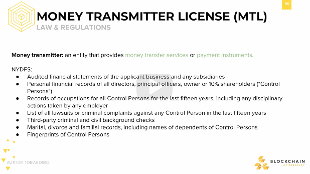
The finance industry is particularly well-situated for the blockchain revolution since a lot of the assets banks deal with are not necessarily physical in nature, like stocks, bonds, etc.
The Dharma protocol is planning to move forward with this idea and release a token that represents part of a debt asset.
The concept is similar to that of securitization, which is where you turn an illiquid asset into a tradeable one.
Many large banks are also just investing in cryptocurrencies, notably Goldman Sachs.
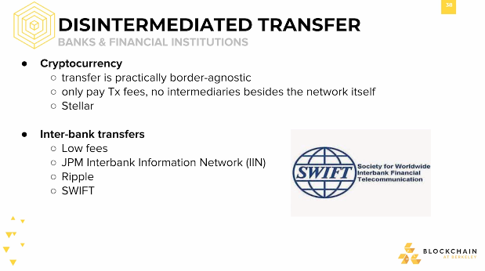
Blockchains and their associated assets are also allowing assets to pass across borders and jurisdictions largely unencumbered by regulation and intermediation.
Many cryptocurrencies can be bought in one country and sold in another for local currency, without ever having to pay a premium for exchange.
This is particularly good news for large banks, whose large-scale transfers might have otherwise cost them a fortune.
Interbank transfers represent one of the most high-profile and effective use cases of blockchain, and big names are paying attention - JP Morgan launched the Interbank Information Network, and Ripple has launched the Global Payments steering group, garnering support from groups such as MUFG, BAML and the Royal Bank of Canada.
SWIFT, the current go-to for global financial transfer, is also heavily invested in the space - their test project launched on Hyperledger Fabric and yielded positive results earlier this year.
Lastly, many finance giants are using blockchain to facilitate traceability and/or privacy.
The Industrial and Commercial Bank of China is using blockchain as a verification mechanism for digital certificates, and Wells Fargo is using it to track securitized mortgages.
JPM Chase has launched its own ethereum-esque enterprise blockchain platform, Quorum, which is optimized for finance usecases - private transactions, permissioned network access, and smart contracts.
Deloitte, KPMG, EY and PwC are also banding together with Taiwanese banks to use blockchain to help audit financial reports.
The transparency and immutability afforded to blockchain-based systems is particularly enticing for accounting use cases.
Use Case: Travel & Tourism

Blockchain is also making waves in the travel industry, allowing people to keep track of their luggage, get better rates on extra rooms, participate in the sharing economy, and set up secure payment channels, all without paying an intermediary to handle it for them.
Winding Tree is using blockchain to disintermediate the process of filling excess vacancies on flights and in hotels and has already partnered with Nordic Choice hotels, as well as Lufthansa, Swiss Air, and Eurowings.
Beenest is doing the same thing with home shares - its like Airbnb, but without giving them a piece of the pie.
Trippki is creating a decentralized rewards ecosystem with travelers and hotels, making rewards transferable while still allowing hotels the flexibility to make specialized offers.

Definitely one of the largest problems facing the travel industry today is identity management.
How can an airline be sure if the person getting on their flight is the person whose name is on the ticket?
What happens if you lose your driver’s license or passport before taking a flight?
It turns out that this problem is challenging alone, but here’s what companies in the travel industry are doing to solve it on their end.
SITA, the IT company providing support to a lot of the airline industry, has created the Digital Traveler Identity App, which uses blockchain to link a traveler to their identity and allows airlines and agencies to verify their identity easily, while keeping the privacy controls in the hands of the user.
Additionally, Dubai’s Immigration and Visa Department has partnered with a UK-based startup ObjectTech to develop a digital passport concept combining biometrics and blockchain technology.
ObjectTech is expected to launch its pilot program at the Dubai Airport in 2020.
Next, we’ll be talking about broader approaches to digital identity.
Use Case: Digital Identity

Companies focusing on decentralized digital identity are focusing heavily on a concept known as self-sovereignty of identity, which is the ability to limit the information you share in situations today where you might be asked for something like your passport, and also limit who has access to the information you do choose to share.
If I want to be let into a building and am asked for my ID, I’m answering the question “Who are you?”, when really the only thing I should need to provide is the answer to “Are you allowed to come in”.
Self-sovereignty of identity tries to make that distinction clear by decoupling that information.

One of the companies working on self sovereign identity (SSI) is Vetri, formerly VALID.
Vetri’s model consists of a data wallet and a data marketplace.
Essentially, you can selectively reveal your data, therefore creating scarcity in the data market, and you’ll be compensated in VLD tokens.
uPort focuses on creating a persistent digital identity that completely represents a person or organization that can make statements about who they are.
It can be thought of as the ethereum equivalent of a facebook profile in that you can log into services with it representing your identity.
uPort’s app uploads your information to an independent decentralized storage platform and maintains its address on the ethereum blockchain.
Lastly, Sovrin’s model is a lot like uPort’s, but they custom built a blockchain specifically for the purpose of identity, which scales a lot better than the current iteration of
Ethereum, potentially allowing it to be used on a global scale.
Part of Sovrin’s mission is that identity should not be denied to anyone for reasons of cost or accessibility.
The key of course to all of these, and what makes decentralized solutions to identity useful, is that nobody should be in control of your identity but you.
Next, we’ll be talking about blockchain’s applications in the healthcare industry.
Use Case: Healthcare

In the healthcare industry, blockchain can provide utility by guaranteeing data persistence and availability.
Ensuring the integrity and accessibility of medical records is extremely important, as it could literally save someone’s life.
However, this data should also be private.
Medicalchain seeks to tackle this problem by storing access to medical data on the blockchain, only allowing access upon authorization from the user’s mobile device.
It’s quite similar to a medical-focused uPort, except the data is stored in the same place it is now - in the hospitals you visit.
Other groups using blockchains for medical data include MIT’s MedRec, Taipei Medical University Hospital, and, surprisingly, Wal-mart, whose product will allow EMTs to view the medical record of unresponsive patients.

Blockchain is also particularly useful for providing financial incentives for good behavior, which, interestingly enough, could have a positive impact on the efficacy of modern healthcare.
Sweatcoin is an app that will pay you to walk, tracking your GPS movements and counting your steps using technology already built into your phone and rewarding you in Sweatcoins, which can be exchanged for things like Paypal Cash, an iPhone, or product discounts.
Sounds crazy, but Sweatcoin purportedly has ‘converted’ some 2 trillion steps into cryptocurrency.
Mint Health takes a similar, but more medical approach, providing Vidamint tokens for good behaviors ranging from checking one’s blood sugar to attending a health-related webinar, to recording steps.
These tokens can be exchanged for rewards such as lower insurance premiums.
Insurance as an industry is also slated to be radically changed by the blockchain.
Use Case: Insurance

At the most basic level, insurance is something of a prediction market - you’re placing bets based on the likelihood of some future outcome.
This makes it a great industry to integrate with blockchain.
In an industry with so much fraud and inefficiency, companies need to be able to make decisions based on data they can trust, and blockchain can provide a very high level of security and transparency that would provide such trust.
Accenture reports that 46 percent of insurers expect to integrate
blockchain within 2 years.

A blockchain solution would allow the insured party to log their claim and their evidence immutably on the chain and have it be validated by the network such that the insurer can take it as truth.
Claims are a particularly dicey area of insurance - they take a long time to process and always involve two parties with asymmetric information that are at odds with one another.
A robust blockchain solution to fix claims might involve the use of smart contracts that automatically dispense payments when a specific set of requirements for a claim are met.
Aigang is exploring a solution like this - they are insuring smart devices and automatically processing claims by having the devices log their state on the blockchain.
They currently support insurance for phone batteries, and are working on implementations for smart cars, smart homes, and drones.
Additionally, a group of European insurers have come together to form the Blockchain Insurance Industry Initiative (B3i), which intends to use blockchain to add security and transparency to current insurance services.
Next, we’re going to look at how blockchain interacts with IoT.
Use Case – Supply Chain (2:27)
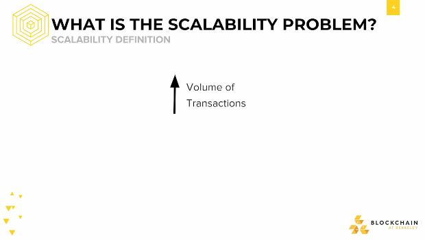
With the rise of supply chains, many massive corporations have attempted to incorporate blockchains into their own business models.
One example of this is Wal-Mart, which has decided to use a supply chain for provenance.
Provenance is securing the traceability of specific objects by tracking their history.
This provenance is done through a blockchain, where products are traced through the companies they interact with, whether they are growers, distributors, or retailers.
Along each stop of the way, those who are handling the products will be required to create a transaction on the blockchain and sign them.
With this technology, rather than recalling all potentially affected products when a subset of these products is contaminated, Wal-Mart can use this supply chain to track where this illness came from and only remove the products that came from the same source, thus saving a lot of money, resources, and time.
Another massive corporation that has attempted to integrate supply chain is Alibaba, the Chinese e-commerce conglomerate.
Noticing that China has had an issue with counterfeit goods for decades, Alibaba, among other e-commerce corporations, have decided to mitigate this issue through the use of QR codes and RFID.
By tracking goods such as food, baby products, liquor, and luxury items, the likelihood of being fooled by counterfeit goods is decreased, while consumers are given more trust that their products are real.
Despite this, there is still plenty of skepticism against using blockchain technology for provenance.
For example, many say that using blockchain serves no better than simply using a centralized database, as the decentralized nature does not give any beneficial advantage over a normal database.
Currently, Wal-Mart’s blockchain information is all stored on IBM’s servers, which essentially defeats the purpose of a decentralized system if all of the data is kept under a single central authority.
Another problem with supply chains includes the difficulty of tying physical objects to the digital world.
For example, each bag of lettuce could be given a unique identification code printed on the bag itself, but that can be easily forged or changed at any stage of its life.
Walmart could use RFID tags on each of the bags of lettuce, but the cost of this would far outweigh the potential gain, making it an unreasonable solution.
Supply chains are unable to protect against many issues such as fraud that can only be detected by human inspectors.
While a blockchain would allow us to trust the information channel, the endpoints which input data to the blockchain are still fallible.
This endpoint verification problem, or, more informally, ‘garbage in, garbage out’, is one of largest barriers to large scale blockchain adoption today.
Use Case:IoT (1:02)
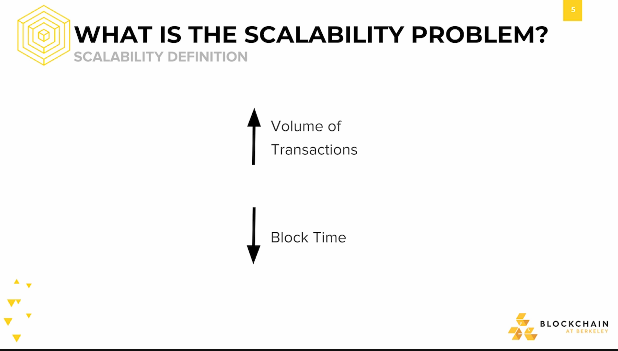
IoT devices collect and push data, and blockchains verify and codify it.
Many of the use cases we’ve discussed so far involve smart contracts making decisions based on parameters, such as for Aigang’s smart device claim distributions, and the data collection mechanisms are often IoT devices.
The biggest benefits blockchains bring to IoT are security and trust.
Blockchains improve IoT security and trust by forcing the IoT network to converge on truth, rather than have a single, potentially compromised database providing false information for critical situations.
A lot of current IoT systems have a single point of failure, which, when under attack, can result in catastrophic system failures like the Mirai Botnet attack in 2016.
Groups such as the Trusted IoT Alliance aim to tackle these problems by using blockchain to set standards for what a ‘good’ IoT node looks like and quarantine nodes that don’t measure up, while distributing the collected information from those devices to multiple sources.
Next, we will talk about blockchain in supply chain, which leverages IoT as well.
Use Case: Housing & Real Estate (1:39)
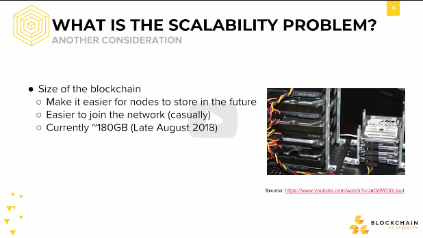
Real estate is another industry being revolutionized by blockchain, primarily when it comes to land rights.
Blockchain land registry projects have cropped up all over the world, from Sweden to Ghana to India.
Current systems rely largely on paper deeds, which are extremely frustrating to keep track of and are often lost for good, especially in the wake of national disasters.
Additional problems arise when we consider forged signatures, improper paperwork, and many other details that become important the moment one wants to prove ownership or change it.
Lastly, corruption in governments and corporations can interfere with property rights as they exist today in many countries.
What good is a land title if you can’t be confident that it is available, persistent, and valid?

The blockchain solution is to create a hash of every land registry and store that hash on-chain.
Only the person with the corresponding private key can claim ownership of the corresponding land title.
The tamper-evident nature of cryptographic hashes and of blockchains makes it impossible to change any part of a land title without alerting the entire system.
Additionally, since the registry data is replicated in every node, accessing to land titles cannot easily be blocked, be it by a malicious attacker or a natural disaster.
Lastly, a blockchain land registry could drastically decrease the amount of time it takes to transfer land.
Sweden’s Lantmäteriet, in conjunction with blockchain startup Chromaway, said that their prototype cut a digital land registry’s lag from 3-6 months to a few hours.
Some other companies looking into this include Propy, whose pilot with a city in Vermont was launched earlier this year, and Zebi Data, an indian blockchain startup partnering with the states of Maharashtra and Telangana.
Use Case: Foreign Aid (2:00)

Last but certainly not least, blockchain can improve the efficiency and effectiveness of foreign aid.
Today’s aid distribution systems are fraught with problems - many intermediaries lie between the money you donate and the intended recipient, and each one takes a cut, plus, if the destination doesnt have adequate disbursement infrastructure, there’s no guarantee anyone in need will see any of the money sent.
Blockchain can help with this.
Foreign aid can be divided into cash and non-cash aid.
We’ll talk about non-cash aid first, though they both benefit the same way from implementing blockchain technology.
Non-cash aid systems that use blockchain include the United Nations World Food Program, whose refugee camps in Jordan currently distribute crypto-vouchers that can be exchanged by refugees for food and other necessities.
For the most part, however, aid disbursement is heading in the direction of cash aid, since it is more versatile and, thanks to blockchain, can now be traced from sender to recipient.

The problems of fraud and accountability are more severe for providers of cash aid, since vouchers like UNWFPs aren’t necessarily going to be usable by any intermediaries.
Implementing a blockchain and using it to transfer aid allows the sender to see where all of the money goes, and the immutable nature of the blockchain ensures that the transactions on chain have not been altered.
Consensys Social Impact’s Project Bifröst goes as far as to cut all unnecessary intermediaries out altogether.
Bifröst transfers aid as a stable coin (guaranteed to hold its value), which is to be exchanged for local currency via kiosks in the recipient country.
Having only two intermediaries drops the cost of transfer to as low as 1% of the transaction value, significantly lower than any transfer medium today.
Disberse, on the other hand, chooses to maintain an intermediary network but instead demands strict accountability by logging each transaction on chain.
They exchange the transferred cryptocurrency at local banks.
This concludes the specific use case section of this lecture.
We’re now going to dive into generalizations that can be made between use cases.
Use Case Generalizations (8:25)
Now that we’ve seen all these use cases, let’s go ahead and finish off with some generalizations.
These points can be used to understand and discuss any use case you come across or come up with.
These points describe the properties of a good blockchain use case, along with the scenarios in which a blockchain is not needed or inferior to a centralized solution.
We’ve talked about these generalizations a great deal in the previous course, but those were in the context of smart contracts and applications of blockchain in general.
Now, it’s time to consider use case generalizations in the context of enterprise blockchain use cases.
Keep in mind everything you’ve learned up to this point, and see how they fit into the generalizations.

To start off, let’s talk about the scenarios where a blockchain will work, but is not necessary.
We often hear the term “efficiency” in the context of blockchain use cases, but this isn’t often applicable.
For example, let’s take Bitcoin.
If I’m buying coffee, it’s less efficient to send Bitcoin and wait 10 minutes for a confirmation than to hand over a few dollars or use a credit card.
However, it is more efficient to send value overseas with Bitcoin, which takes a mere ten minutes in comparison to the days that banks take to coordinate and the transaction fees they levy for international transfers of value.
Hence, efficiency depends on context.
Additionally, characteristics of data storage such as data immutability, integrity, auditability, and authenticity can be achieved at much lower costs without a blockchain.
Redundant, mission-critical, fault-tolerant systems have been around for decades, and cryptography has been around for millenia.
All of these properties have been solved individually.
Blockchain simply ties them all together.
Each of these bullets can be achieved by using a subset of the technology that goes into making a blockchain.
While blockchains will solve any of these individual requirements, they’re over-engineered solutions to these problems.

As mentioned in several of the use cases, blockchains allow us to solve coordination failures.
We are able to implement arbitrary incentive schemes, allowing us to create a system which incentivizes individuals to operate according to our expectations.
In addition, blockchain can be thought of as a “technological solution to a social problem.”
Theoretically, every blockchain protocol could be run by a single node.
However, you’ll notice the issue that if only one person runs the protocol, then we lose out on the guarantees of auditability and decentralized control, properties that are meaningful only in a social setting.
When individuals don’t trust each other, then the blockchain allows them to coordinate between each other without relying on some trusted third party.
With this, blockchains can be used to make commitments, to fund public infrastructure or do crowdfunding.
The network will force the actors to honor their commitments, as was the original intention of smart contracts.
Instead of bringing in lawyers to settle matters when things don’t according to plan, we’re now able to rely on a smart contract to execute as intended, giving us the ability to believe in this code as law.

Blockchains create a standardized platform for access and interaction.
Because of this, we can combine the power of all users on a blockchain network to enhance everyone’s capabilities.
Given that all information in a blockchain is accessible to everyone, we are now able to combine data silos between institutions.
Any information collected or functionality provided by an app on a blockchain network is accessible to all other users on the blockchain, something which can’t be said about the Internet alone.
In addition, blockchains enforce a common standard.
As all users tap into the same single protocol, they must also adapt to that protocol’s specifications.
Granted, that requires everyone to go through the trouble of adapting.
However, once everyone’s on the same platform, there are no longer issues of format or syntax.
Lastly, by combining resources and information from all parties, we can enhance everyone’s user experience.
Any app that exists on a smart contract platform has its data and functionality living in that platform.
Any other app can leverage existing technologies on the same platform, creating a positive feedback loop and benefiting all involved.
This is referred to as network effects, which is the increased value or potential of a product with every additional user.
Similar to how more Facebook users makes the platform more worthwhile for all users, more smart contract developers increases the value of a platform.
In this way, individuals are supporting the rest of the community while benefiting themselves as well.

Finally, the most abstract yet fundamental property of a good blockchain use case is pure decentralization.
What this means is decentralization for the sake of keeping it out of the hands of a central authority.
This is what Bitcoin aimed to do with banks.
Although there was a working central solution, Bitcoin wanted decentralization nevertheless.
In countries with significant amounts of distrust in central authorities due to corruption or inefficiency, as mentioned during the real estate section, blockchain might be useful.
Blockchain provides a system for users to produce guarantees that a central solution cannot provide, such as censorship-resistance and disintermediation of power.
These properties are difficult to evaluate in terms of dollars and cents, but groups like cypherpunks and crypto-anarchists ask about finances second.
For some individuals, self-governance and privacy are more important than any amount of revenue, making decentralization for decentralization’s sake worthwhile.
Perhaps the most astonishing property that a blockchain provides is globally recognized proofs.
Cryptocurrencies aren’t divided by lines or borders--they’re guaranteed to be globally accessible and unstoppable as long as there exists a community to support them, unlike businesses or government projects.
Through blockchain, we can support globally recognized ownership, persisting across nations.

Now that we’ve finished talking about all the meaningful properties of decentralized solutions, it wouldn’t be complete if we didn’t go over the caveats.
What are the costs of these properties of decentralization?
What do we achieve better with centralized solutions?
The overarching theme of centralized solutions is the benefit of independence.
There’s no need for consensus when a single party has the power to make decisions.
Because of this, we get the following benefits:
First and foremost we have deep integration.
A central solution has full control over everything under its umbrella.
Apple is well known for taking advantage of this to control the user experience.
When a blockchain attempts to upgrade its protocol, all users have to voluntarily upgrade or get left behind.
With a central solution, however, it’s much easier to change individual components or entire architectures of projects.
Because of this, it’s much easier for a central system to patch up bugs, such as security issues, than decentralized systems.
A central solution does what it needs to do, unrestricted, but a decentralized system needs to come to consensus with thousands of different actors to change anything at the protocol level.
Another huge advantage for central solutions is efficiency.
With centralized solutions, the cost of executing a program is about a million times less work than decentralized solutions.
This is easy to see, as only one party is doing work, and it doesn’t need to confirm the result of its work with anyone else.
In addition, only one store of data is required.
The data doesn't be replicated across thousands of nodes.
In addition, access control is much simpler in a central solution, where it’s much easier to restrict read and write permissions.
In a decentralized solution with censorship-resistance, we give up that control.
Building off that, central solutions handle complexity well.
Imagine replicating Airbnb using smart contracts.
If a landlord finds their house destroyed, a blockchain can’t handle that scenario.
How can an oracle accurately report whether a tenant damaged household possessions?
Who would report that information?
It’s much easier to trust a single person to report on the state of the house than to implement a complex and likely unreliable oracle system.
Finally, central solutions are adaptive.
When an Uber driver is having trouble with their passenger, or the other way around, who do they call for customer support on a blockchain solution?
How do they get this issue resolved?
Centralized solutions have the advantage of handling messy situations with grace, since you don’t need every single entity to agree on every single outcome.
If you do integrate centralization with a blockchain solution, you lose out on most of the benefits of decentralization.

The main takeaway is that there are advantages to both centralized and decentralized solutions.
Neither is universally better than the other; they each have their own use cases.
However, the best solutions are those that recognize when decentralization is critical to accomplishing some goal and don’t get distracted when a blockchain is viable but really doesn’t make sense.
A good blockchain use case is like an oasis in a desert.
Mirages pop up all the time, but that doesn’t make them the real deal.
Be sure that you’re able to justify why a blockchain works for your use case!
Intro: ICO Schemes & Culture (1:04)
Now you’re familiar with blockchain use cases and various examples from around the world.
A question you might have asked a few times is, “How do these projects get support and funding?"
The most popular kind of funding for blockchain startups within the last year has been an Initial Coin Offering, or ICO.
You’ve likely heard of these before in news or from friends, especially if you’re in the trading world.
Our goal in this section, however, is to provide a formalized, analytical approach to understand the theory and caveats around ICOs.
In this section, we’ll take apart the culture and structure of ICOs.
We’ll take a look at some standard ICO business models, what goes into launching an ICO and maintaining its lifecycle, and some case studies which demonstrate the difference between theory and reality.
Finally, we’ll introduce some standards that have been suggested to help bring order to this ambiguous and uncertain space.
ICO Schemes & Culture (12:57)

An Initial Coin Offering, or “ICO,” is a novel, unregulated means of raising funds for a blockchain startup.
It’s novel because this model did not exist before blockchain and unregulated because blockchains lack the same strict governance that centralized institutions are often bound to.
Companies developing a protocol often include a token within their platform.
In order to distribute the token and also raise money for their company, they will sell some amount of these tokens as seed funding.
These tokens often represent some unit of value within their network.
However, it’s possible that these tokens are associated with the company in name only.
The concept behind these tokens, regardless, is that their worth is tied to the value of the company.
As the value of the company rises in value, then so will the demand and, ideally, the value of the tokens.
Hence, the value can be defined by the amount of faith the community has in the protocol’s Success.
The greater the faith, the higher the value.
This incentivizes the company to continue developing the protocol as well so that the value of the token goes up.
A few ICOs which have happened in the past few years span a great number of different projects, not limited to any particular industry.
One example is Cosmos, a platform seeking to provide infrastructure for blockchain interoperability, raising 16,800,000 in USD through their ICO.
Another is Filecoin, aiming to create a distributed file storage network, raising 257 million in USD.
We’ll see in a bit how much each industry has raised through ICOs.

Let’s take a deeper look at how ICOs innovate on previous fundraising mentalities.
Previous kinds of fundraising, such as Venture Capitals, have often been through a select group of accredited investors.
ICOs, however, allow for early adopters with a special interest and understanding in a particular blockchain use case to buy into the project early through the ICO, believing that it will come out on top.
If the value of the ICO is tied to the value of the project, then those with high confidence in the project due to background knowledge will invest early.
At least, that’s the design.
This allows for project teams to get past an initial high capital requirement to build out their protocol while circumventing traditional, centralized fundraising models.
This allows developers to get a cash infusion, build out a protocol, raise the value of the token, then give users the opportunity to use these tokens to request services.
Ideally, this would align the incentives of the development team and the early investors.
Both want to see their token holdings increase in value, meaning the protocol needs to be developed as well.
However, as we’ll see, this is not the case today.
Let’s take a look at how ICOs might incentivize open-source development.

Open source development is typically led by foundations, such as the Mozilla Foundation and Apache Foundation.
These foundations are dependent on donations and volunteers, as the work is not funded as a company is.
Hence, there is a dichotomy between the value created and the profit.
While many individuals develop open source software for the pure ability to benefit mankind, incentivizing open source software development could make it accessible to all around.
The remaining majority is incentivized to make the software proprietary, causing technological lock-in.
Companies hide trade secrets from each other to keep their leg up, slowing down intellectual growth.
ICOs now allow creators of open source projects to directly monetize their efforts.
Instead of looking for donations after pitching to philanthropic individuals their vision, individuals can now create a digital representation of the value of their platform.
Additionally, as others build on top of that platform, the token will further increase in value.

What does the lifecycle of an ICO look like?
Well, let’s start with the assumptions.
First off, you’re building a blockchain project which requires some kind of token.
In order to make your case clear for your project, you’ll need to write up a whitepaper to outline your project and how tokens come into play.
Next, you’ll need to decide on an ICO model.
ICOs have sparked interest in the term “tokenomics,” referring to the economics of these digital tokens.
Because of the nascency of the space, several models are still being explored and understood, all focused around manipulating a few key variables and qualities.
For example, a question that arises is whether to have a fixed or dynamic supply of tokens.
A fixed supply may limit the number of people who can buy into the ICO, but a dynamic supply will make investors uncertain about the total number of tokens to be sold.
Next, there’s the question about the number and types of stages to the ICO.
Some projects have private fundraising rounds and pre-sales before the public sale.
Additionally, there’s the possibility of a dynamic price.
A fixed price is straightforward: for some particular stage, sell at a set price.
However, some ICOs aim to have dynamic pricing depending on the time and amount of tokens sold thus far.
For example, Gnosis, a smart contract prediction market project, used what’s known as a Reverse Dutch auction.
In this fixed supply and dynamic price model, the price starts off incredibly high at first, slowly decreasing, meant to encourage investors to buy at the highest price which seemed reasonable to them.
However, the team underestimated the initial valuation of the tokens: approximately 12 million dollars worth of tokens sold out within the first few minutes, accounting for only 5% of the supply.
This led to Gnosis owning approximately 95% of the total token supply, leaving everyone confused.
This ICO, which happened early 2017, demonstrated how much more there was to learn about tokenomics.
Third, after deciding on the model, it’s essential to determine the regulatory and compliance laws by which your model must abide and which are currently unsatisfied.
One question that might be asked is which countries legally allow for your sale of token.
Another is whether the type of token makes a difference on compliance.
If seriously considering launching an ICO, hefty legal counsel is required to ensure that any and all regulatory concerns are handled.
Fourth, your smart contracts need to be written!
Every ICO is simply a smart contract or few which contain information about the ownership of every token, along with the functionality to send and receive tokens.
The first step of development is to implement the functionality specified by your chosen ICO model, followed by inspecting the smart contract for security issues and vulnerabilities.
Several smart contracts which hold money have been hacked in the last few years, such as The DAO, leading to a great push for more smart contract security checks.
Finally, you’ll publicize your upcoming project and ICO to potential investors to give everyone the opportunity to invest in your marvelous project.
If that all works out, then you’ll get funding for your revolutionary blockchain project!
Legal uncertainty, as expected from so new a space, also permeates ICOs.
Note that most of the legal precedents are still being established both in the US and around the world, and what we offer is in no way any legal, financial, or other advice.
Instead, we attempt to show you the current state of the industry.
Leaders in the space, such as Coinbase, have written up material to serve as guidelines for evaluating tokens.
Often, we find that ICOs are classified into two kinds of tokens: security tokens, and access tokens.
Securities are financial investment vehicles, such as stocks in a company.
Take The DAO, for example.
The SEC ruled that all tokens distributed by The DAO are considered securities as they satisfied the criteria for a security.
Recently, companies have hesitated from selling to US citizens to avoid crackdowns by the SEC.
On the other hand, access tokens are not meant to serve as any kind of financial investment.
Instead, they simply serve as a way to access services, such as how Kickstarter donations provide the user with access to early or special goods from the team.

Another caveat to consider is the reluctance or even inability of project teams to keep their promise after an ICO.
After all, after raising $200 million, what’s the incentive to do anything else?
There is no VC or investor to demand money back–after all, the token does not provide such a privilege.
Additionally, because most ICOs peak once and never recover to that original value, early short-term adopters end up benefiting at the detriment of long-term adopters.
In 2017, investors in ICO pre-sales tended to sell right away, gaining 4 to 5 times returns on their investment instead of waiting for the long term.

One proposed solution was for funds to be held in escrow, released only when the team hits particular milestones, to incentivize them to build out the project.
Hence, teams are less likely to abandon their promises.
However, then the problem of deciding who determines when milestones are paid out arises as well.
This solution is not popularly used in ICOs.

Recall, the purpose of an ICO is to remove regulatory bodies from the picture.
However, without regulation, regular users are at higher risk.
For example, thousands of investors bought into OneCoin, a cryptocurrency in name alone.
This currency was purely run on SQL servers, entirely centralized.
Everyone bought into it assuming there was a blockchain use case underneath the project.
As most investors are unused to projects springing up into the public eye without prior due diligence either by investment firms or by government bodies, they may fall prey to scams such as this.
Additionally, ICOs ironically result in centralization.
As you may have noticed, founders and early investors end up disproportionately more wealthy than others, frequently the result of “pump and dump” schemes, implying larger investors artificially raising the price with the expectation of selling at a high value, leaving everyone else to bear the consequences.
Finally, to demonstrate the success of scams in the ICO world, take the project known as MIROSKII, raising over 70 million dollars in funding without even having a real team!
In fact, unless Ryan Gosling is going under the pseudonym “Kevin Belanger” and nightlighting as a graphic designer, his image was used without permission as one of the members of the team.
Despite such a clear act of fraud, this project managed to obscenely fill their pockets.
With the benefits of deregulation, such as larger freedom and accessibility to a larger set of investors, also come the consequences.

The new paradigm of ICOs don’t just have drawbacks for investors.
Project teams also miss out on crucial benefits compared to VC funding.
VC funding requires high levels of discipline.
Investors seek out 10x, 100x companies – you’re not going to win their approval with just a lousy whitepaper.
You’ll need detailed financials to prove your merit and have answers to incredibly tricky questions about the fundamental assumptions of your company.
VCs do due diligence on projects both for the consumer, but also for the founders: if a VC agrees to invest in a company, then that person has access to the VC’s vast set of connections and experience.
This can change the development of a project team.
ICOs, on the other hand, are nothing more than lumps of money.
They do not come with the support that a VC can provide.

This model of funding comes with many further drawbacks.
As mentioned before, there is no central or trusted party to carry out due diligence on behalf of individual investors.
Instead of VCs carrying out the groundwork and governmental regulatory bodies preventing clearly poor investment decisions from reaching investors, ICOs are accessible to all.
This is a huge distinction between ICOs and IPOs: though IPOs require years of scrutiny and thought for even the most well-established companies, ICOs occur solely after a project idea and still raise exorbitant amounts of money.
The burden of due diligence is now upon the investor.
But how many investors actually read the whole whitepaper?
How many investors look into each and every member of the team?
Because of this, lots of ICOs unashamedly use marketing strategies to make the impression of profits for investors, even without any significant technical knowledge to fulfill unrealistic expectations.
Additionally, investors also tend to be of a particular mindset: most early adopters already have a reasonably similar mindset, leading to a lack of diversity in thought with the project founders, possibly stunting growth.
Finally, there is also a much larger number of investors to appeal to when launching an ICO, anywhere from hundreds to thousands, all of whom have different demands and expectations from the project.
Because of this, managing relations with all these investors can overwhelm small teams, a large reason why many companies prefer staying private, to focus only on the few large investors.
Though ICOs provide tremendous access to funding, you know what they say: “be careful what you wish for.”
In 2017, we saw ICOs overtake VCs as the most popular form of funding for blockchain startups.
By the end of 2017, about 6 billion dollars was poured into blockchain startups through ICOs, over 25% of which was raised in December alone.
Compare this to approximately just over half a million raised through VC.

In 2018, we saw even more raised through ICOs, totaling 20 billion dollars before the end of September.
You may have noticed that this graph does not have the same generally increasing trend as the previous year.
Instead, every third month seems to spike, followed by a couple months of relatively less funding.
In fact, VC funding has recently surpassed 4 billion dollars, up a great deal from 2017.
Since ICOs seem not to provide long-term returns and have lost credit as a funding mechanism, VC funding is starting to surge.
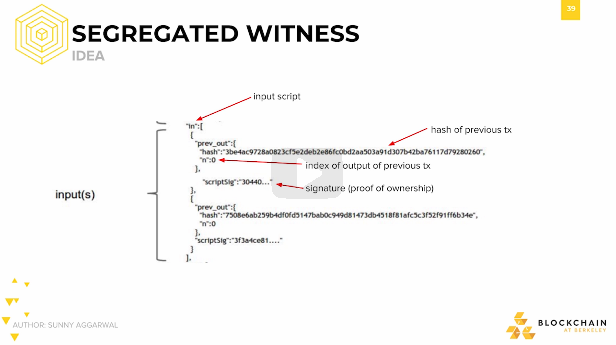
You’ll see in this slide the distribution of funding.
As expected, the largest slice of the pie is infrastructure, at 25%.
A majority of this comes from EOS, a distributed Proof-of-Stake blockchain.
Infrastructure has a habit of having the most funding, given that the the space is still new.
Finance is second-largest, followed by communications, trading & investing, payments, and more.
Intro: Regulations & Caveats (0:43)
To conclude on the possibilities of this decentralized technology, it’s important to come back to fitting it into the reality of governments and popular culture.
The concepts of blockchains and distributed ledger technology are so new that most countries have very little precedence to analyze this space.
Additionally, what kind of regulations can or should be applied to a technology resisting regulation by default?
The perspective and regulations on blockchain technology are developing every day, but we’re going to try to introduce to you the most accurate snapshot of present-day perception around the technology.
Regulations & Caveats (9:28)

With handling money come several significant measures to prevent illegal activity.
Money laundering refers to the movement of large sums of money between borders or between the underground and legitimate economy.
Anti-money laundering laws aim to prevent these kinds of activities by ensuring that every financial intermediary is aware of the source’s and destination’s legitimacy.
You may be able to tell quickly why cryptocurrencies can cause issues.
Blockchains not only circumvent centralized control but often contain protocols to obfuscate transaction and user information, with Zcash currently at the height of this.
In the United States, both the SEC and the Financial Crimes Enforcement Network serve to enforce these laws, placing restrictions upon the types of activities that can be considered legitimate.
The exchanges which are under compliance of AML include Coinbase, Kraken, and Bitstamp.
A good number of exchanges are not compliant given that a good amount of the blockchain community diverges from regulation as much as possible.

Know your Customer regulations are another kind of regulation imposed upon financial institutions to prevent knowingly or unknowingly enabling illegal behavior.
For these reasons, KYC requires three things.
First, these businesses must identify and authenticate clients.
This is why you’re required to submit great swaths of personal information to any bank with which you open an account.
This allows banks to confirm that you are who you say you are when transferring and claiming money.
Additionally, it allows banks to associate any activity with a particular individual or entity when noticing red flags, possibly leading to further investigation.
Second, they are required to evaluate the risk of a client.
Each client may be holding and transferring to various entities different quantities of money, some of which may not be legitimate.
It is the responsibility of the institution to determine beforehand whether the client might represent a risk.
Finally, the institution must constantly watch for any indications of criminal activity.
Often, a company will be forced to cut off business with a client who may be behaving suspiciously for protection’s sake.
All these regulations are placed upon certain businesses to prevent any kind of financial circumvention around restrictions.
However, because of blockchain’s decentralized nature, integrating these qualities into businesses is socially difficult, though exchanges like Coinbase will comply with these restrictions in order to be able to serve audiences as large as possible.

Entities which deal with money transfer services or payment instruments are known as money transmitters.
To designate which entities are legally allowed to engage in such activities, there exists the Money Transmitter License issued by states within the US government.
The process of achieving an MLT is sometimes known as a “financial colonoscopy” due to the depth of the application process.
Some of the things that the New York Department of Financial Services has done before giving a license to a bank include but are not limited to auditing financial statements of the applicant business and any subsidiaries, investigating the personal financial records of directors, owners, and others, seeing a list of all lawsuits filed against any “Control Person” in the last fifteen years, and performing third-party criminal and civil background checks.
This depth of regulation is meant to protect consumers from businesses mishandling their money, but it consequently makes performing these services enormously difficult.

If that weren’t enough, New York has a separate license exclusively for cryptocurrencies, which apply to anyone performing any one of five acts: 1.
Receiving virtual currency for transmission or transmitting it, 2.
Holding virtual currency for others, 3.
Buying and selling virtual currency as a customer business, 4.
Providing exchange services as a customer business, and 5.
Controlling, administering, or issuing a virtual currency.
An exchange known as Circle was the first to obtain a BitLicense.
Coinbase also followed later, and Square is the most recent company to obtain a BitLicense, being the 9th.

For a bit more perspective, let’s delve into some regulatory history.
In 2013, the Winklevoss Twins, founders of the Gemini exchange and well known for their involvement with the founder of Facebook Mark Zuckerburg during their undergraduate study at Harvard, submitted a proposal to the SEC to produce a Bitcoin ETF, or exchange-traded fund known as the Winklevoss Bitcoin Trust.
An ETF would allow anyone to buy and sell a representation of Bitcoin without having to hold onto bitcoins themselves.
This proposal was rejected by the SEC in 2017, citing Bitcoin as “unregulated” and not “consistent with the Exchange Act.”
A good deal of the blame was also put on poorly capitalized and unregulated exchanges outside the US, with a particular influence from the Chinese on the price.
One might say this rejection is not entirely bad.
After all, the entire purpose of Bitcoin is to be beyond regulation – this ruling confirms that.
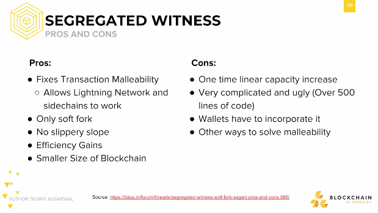
This slide demonstrates key arguments against proposed ETFs and Mutual Funds intended for cryptocurrencies.
Citing investor risk from extreme volatility, lack of liquidity, and potential market manipulation, the SEC director as of January 2018 Daria Blass says that the SEC does not believe that it is appropriate for fund sponsors to initiate registration of funds that intend to invest substantially in cryptocurrency.
Until Bitcoin receives a reputation for low risk investments, if it ever will, it’s unlikely to reach widespread acceptance by the US government as an underlying asset for financial products.

Now that we’ve given some examples of regulation about cryptocurrencies, let’s dive into some perspectives that can be offered by states within the US.
Two states which have created pro-blockchain legislation include Arizona and Vermont.
In Arizona, a bill was signed which allows blockchain digital signatures to be considered legal signatures.
This implies that smart contracts are enforceable through the power of the government in Arizona.
Additionally, in Vermont, information on the blockchain is considered “representative of real facts and evidence permissible in court” as long as it satisfies a few conditions.
This includes the date and time the information entered the blockchain as well as whether the record was made by a regularly conducted activity as a regular practice, which can be interpreted to mean that a body with no trust is executing this record as it would any other record, implying no bias in the inclusion or state of the record into the blockchain.
For example, should it be legal for me to start my own private blockchain and include a single transaction then claim it as evidence within a court of law?
Probably not.
It’s fascinating to think that technology just reaching a decade in age has already become powerful and popular enough to make its way into legislation.

To put cryptocurrencies and blockchain further into perspective, let’s take a look around the world at some of the popular responses to this new technology.
Though Bitcoin and cryptocurrencies may be seen as a threat to established institutions,
London particularly looks to give a more positive embrace to Bitcoin, seeing the technology as progress for finance rather than buying into fear that it will circumvent centralized systems.
Switzerland, already well known for its “Crypto Valley” in the city of Zug, has looked into the development of a new type of banks called “crypto-banks,” physical locations to do with your crypto what you’d typically do with your fiat money.
This would redefine cryptocurrency startup perception along with how banks go about handling these cryptocurrencies.
South Africa has just recently started to see a rise in cryptocurrency ownership and blockchain involvement.
The South African Reserve Bank, or SARB, established a Fintech task force to monitor developments in the cryptocurrency and fintech space, attempting to balance cryptocurrency and blockchain development within the nation.
Though it has expressed that cryptocurrencies are unlikely to be considered currencies, the population is free to trade and use them as they would any other asset.
The SARB even launched a project of their own in June 2018, known as Project Khokka, built using JPMorgan’s Quorum to upgrade the South Africa payment network and provide more insight into transactions occurring between institutions.
Taiwan recently integrated a fintech regulatory sandbox into their legislation, implying that even blockchain technology can be developed by startups without fear of regulatory consequences.
Taiwan is popularly coined “Crypto Island,” with Jason Hsu known as the “Crypto Congressman,” coined by Vitalik Buterin himself.
However, not all countries are as embracing of cryptocurrencies and blockchain.
Here’s a few examples of countries pushing against cryptocurrencies and blockchain.

In Bangladesh, it’s claimed that a lack of regulation by a central bank makes cryptocurrencies dangerous.
While they’re not exactly wrong about the risk of cryptocurrencies to unknowing investors, they certainly punish beyond what many might say is a reasonable amount, threatening up to 12 years in prison for trading cryptocurrencies.
In Bolivia, the central bank issued a statement that it’s illegal to use a non-government currency.
In China, bans have been placed on practically all cryptocurrency and ICO-related activities.
In Ecuador, restrictions have been placed on virtual currencies as well, primarily as a way to protect the national digital currency, the first state-sponsored one in history.
Iceland claims that purchasing and transferring digital currencies goes against the national restriction against currency leaving the country, essentially banning cryptocurrencies.
India shut down an exchange known as BTCXIndia which, despite complying with AML/KYC regulations, still was deemed risky.
Text: Week 3 Summary
I. Enterprise Blockchain Overview
As Bitcoin and blockchain technology matured, banks and corporations took interest in developing what are now known as permissioned blockchains and distributed ledgers. They aimed to “take the blockchain out of Bitcoin.”
Permissioned systems only allow trusted users into the system, allowing for a reduction of key properties pushed by public blockchains, resulting in systems with reduced levels of openness, no guarantee of trustlessness, and fewer incentives built into the protocol.
Primarily, enterprise blockchains of the time were used to solve issues in coordination failures, boost horizontal integration, and create self-sovereign decentralized networks.
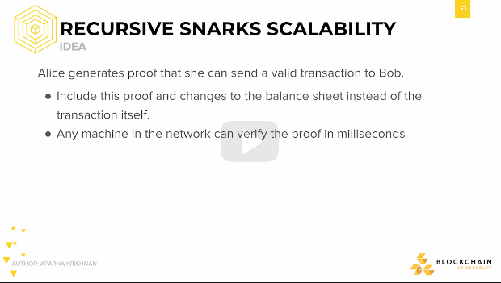
Centralized databases are run by a single entity (e.g. a company) that handles all requests and data processing.
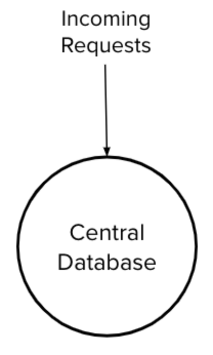
Distributed databases are run by a group of storage nodes that are connected to each other and work to maintain a consistent overall view of the entire system. Nodes are able to fully trust each other in some systems (hence the solid lines connecting storage nodes.)
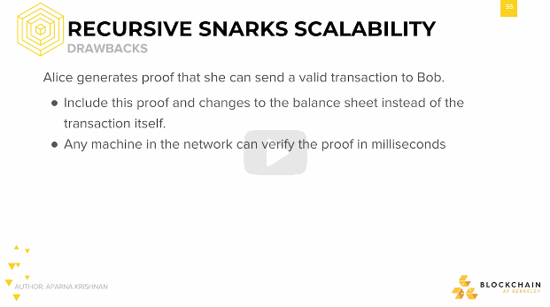
Distributed ledgers are a specific type of distributed database in which the information is organized chronologically, mimicking a traditional ledger. Most often, storage nodes may not fully trust each other (hence the dotted lines in the diagram below). Instead, they must implement some form of consensus protocol to have a consistent view of the system.
Distributed ledgers that specifically implement a chain of blocks in their protocol are known as blockchains.
Blockchains exist in three broad categories, depending on their access types: public, consortium, and private blockchains. Together, consortium and private blockchains are known as permissioned ledgers, since they require some level of permission granted – as opposed to openly readable and writable public blockchains.
II. Enterprise Blockchain Platforms
There exist many enterprise blockchain platforms today – too many to mention in detail in this summary. The key things to look for when evaluating whether a particular enterprise blockchain platforms is right for a particular use case are:
1. Enterprise blockchain platforms usually specialize in particular use cases, or have been used in the past to address certain use cases
2. As they specialize in particular use cases, they make usage assumptions that affect overall system scalability, security, and decentralization
3. These properties are affected by the underlying consensus mechanism(s) an enterprise blockchain platform supports
Enterprise blockchains are being used today in a number of different use cases, including: auto/mobility, finance, travel/tourism, digital identity, and supply chain.
In general, the essential properties of a good blockchain use case are that:
1. Blockchain is not only viable, but is necessary. Otherwise, it’s hard to justify a blockchain’s low “efficiency”
2. Blockchain is used to solve coordination failures. Blockchain could be used to create arbitrary incentive structures and enable the cooperation of an untrusting consortium of companies and entities.
3. Blockchain aids in horizontal integration. Since data is now stored in a logically centralized blockchain, we can combine data silos and enforce a common API and data standard.
4. Blockchain achieves pure decentralization. This is not as relevant to enterprise blockchains, but blockchain in general (public ones) can be used to avoid centralized corruption.
Always keep in mind the advantages of centralized database solutions, and think of whether they, or a subset of blockchain technology, could be used to solve your business need – rather than an entire blockchain.
An initial coin offering (ICO) is a novel, “unregulated” means of raising funds for a blockchain startup.
ICOs are meant to allow developers to monetize open-source software despite the traditional incentive to make software proprietary. Additionally, it gives blockchain projects a much larger source of investors than only a relatively smaller set of VCs and other accredited investors.
However, ICOs also come with caveats. Because of a lack of regulation, scams are more capable of making their way into the view of investors, less doable when all investments were first screened either by VCs or government bodies, forcing investors to do more of their own due diligence. Additionally, many ICOs raise so much money that they have no incentive to actually finish up the project, leading to incentive misalignments.
Ryan Gosling, famed actor, also alleged graphic designer! Image used for ICO team of MIROSKII, fake cryptocurrency project
As the world has never seen anything like blockchain before, there are still few regulations to specifically handle cryptocurrency and blockchain related matters.
First, because cryptocurrencies are inherently deregulated, they not only fail to abide by, but also may attempt to circumvent, laws such as anti money laundering (AML) laws and know your customer (KYC) regulations, leading to conflicts between regulatory bodies and cryptocurrency projects and exchanges. Exchanges are required to acquire licenses, such as a money transmitter license or a New York BitLicense in order to provide services. Some governments have taken steps towards regulating cryptocurrencies and blockchain, for better or for worse. Vermont and Arizona have declared that portions of the information on a blockchain can be considered legal evidence in court, but some countries have taken steps to restricting access to cryptocurrencies.
Readings (Week 3)
Blockchain in Enterprise: How Companies are using Blockchain Today
Enterprise Blockchain is Ready to Go Live
Enterprise Blockchain Ready for Breakout
'Decentralized Bank' ICO Miroskii's Entire Team Is Phoney
Quorum: Ethereum for enterprise applications
All You Need To Know About Initial Coin Offerings
Welcome to Week 4
Welcome to Week 4 of CS198.2x, Blockchain Technology.
With all the blockchain use cases and ideas, one of the biggest blockers to their mass adoption is scalability.
Think back to the roots of blockchain.
If you took our first course, CS198.1x Bitcoin and Cryptocurrencies, recall that Bitcoin was born out of a dissatisfaction with centralized banks; it aimed to be the first global cryptocurrency, providing an alternative to banks.
However, fast forward to the current day in 2018, this is clearly not the case.
One of the reasons for this lack of adoption is simply that Bitcoin and other mainstream blockchains are too slow.
And inherently, since many other blockchain systems were inspired by or are at least based in the same technology, they often times suffer the same scalability issues as well.
it’s clear that in order to bring cryptocurrencies – and other blockchain applications – to the masses, we need to be able to achieve scalability.
In this lecture, we’ll first look at what it means for a blockchain to be scalable, and what fundamental approached we could take to achieve scalability.
We’ll then learn from a naive scaling solution, and then take the lessons learned and apply them in analysis and design of new scaling solutions.
Intro: Scaling Background (0:46)
To fully understand what we want in our end goal for scalability is, we must – as always – analyze the problem at hand from the top down, and then seek to understand parameters and definitions.
The problem of scalability is especially so, since there are potentially many ways to go about achieving scalability, and many different tiers of improvement.
In this section, we’ll go over what it means for a system to be scalable, specifically by outlining the desired properties of a scalable blockchain system, in terms of transaction volume and block time.
Then, we’ll look at how we can achieve those properties by understanding fundamental systems scaling approaches and tradeoffs.
Scaling Background (11:44)

One property we look for when gauging the scalability of a blockchain system is its ability to deal with an increased transaction volume.
To be scalable, a blockchain should be able to function with a higher transaction velocity – so we’re looking for a higher TPS, or transactions per second.
The definition here is pretty self explanatory in its name.
Being able to handle a greater volume of transactions per second means that our blockchain system would be able to handle more transactions with a higher velocity.

Another property we’re looking for is the speed with which we can update our distributed ledger – and in the case of blockchain, we call this the block time: the average time it takes for a new block, or update, to be appended to the blockchain.
And as with enabling a higher volume of transactions, the reason for wanting faster block times is pretty easy to see as well.
If I’m buying a coffee with Bitcoin, there’s no guarantee that my transaction will go through, especially with so many other transactions floating around with potentially higher transaction fees.
You may know that the average block time in Bitcoin is roughly 10 minutes long, and generally when making a transaction, we would want to wait six confirmations to be confident – with high probability – that our transaction has gone through and has been finalized.
This isn’t scalable though, at least in the sense that I don’t want to wait an hour every morning to get my coffee.

And one side note: as we know, blockchain is a decentralized system.
As such, especially with large public networks, we want to lower the barrier to entry if possible.
We’re aiming for decentralization, and a flat network topology is preferred – one where anyone who wants to join can join.
One way we can do this is pay particularly close attention to the size of the blockchain.
Historically, if there’s a high storage requirement for users to join the network, then users might be disincentivized to join the network completely.
Perhaps because they don’t have that much storage space, or perhaps they just can’t justify using so much of their precious storage space for a blockchain – which has no immediate value to them.
For example, in Bitcoin, many users don’t want to run full nodes since as of late August 2018, the blockchain is roughly 180GB.
Users can’t simply run a full node on their phone; and most users won’t want to run a full node on their laptops or personal computers either – due to the blockchain’s immense size.
And it’s become that size in only a couple years.
What happens if the blockchain’s around for another couple decades?
Or even centuries?
If the blockchain continues to grow at the same rate it’s been growing at, then it can very easily become very large and unmanageable in the future.
In order to make it easier for nodes to join the network in the future, whether they be run by dedicated or casual users, we must design blockchain systems keeping into account storage size.

Fundamentally, there’s a scalability trilemma here.
This was proposed by Ethereum research, and claims that in any blockchain system, we can only have two of the three properties shown here: decentralization, security, and scalability.
We formalize the notion of decentralization by the amount of resources everyone has, on average, in the network.
So decentralization in the case of the trilemma is the system being able to run in a scenario where each participant in the network has access to on average the same amount of resources.
Scalability is defined by a system’s ability to processes some increasingly large volume of transactions at increasing speed.
Given everyone in the network has on average the same amount of resources, how fast can we make the system?
Security is defined as a system’s ability to withstand attackers with up to a certain amount of resources.
Potentially, they could have resources on the order of the total number of resources in the network.
That’s a lot of formalisms, but it’s easy to see that tradeoffs are inherent in these types of systems.
For example, if you increase the number of participants in a network, the more we have to consider how including more transactions in a block or speeding up the block confirmation time might cause security to suffer.
Or if we want to make a system have much faster block times, without adjustment anywhere else, we could suffer in security since faster blocks means more orphaned blocks; and perhaps if someone has the right amount of resources, they could tilt the system in their favor and so decentralization would take a hit.

To understand all of that more, let’s look at further detail and do a bit of math.
In the graph on the screen, we have the size of Bitcoin transactions over time.
The graph is a bit outdated, but the scalability concerns still apply.
We can see that on average, Bitcoin transactions have a size of around 546 bytes.

And here, we have a similar graph, but for Bitcoin block size.
The system was designed for 1 megabyte blocks, and we can see that reflected in the graph.

So here’s a quick calculation based on the numbers we’ve collected so far for Bitcoin.
From the previous slides, we have an average of about 546 bytes per transaction.
The current blocksize is 1 megabyte.
And the block time in Bitcoin is 10 minutes on average.
Therefore, we can compute the sustained maximum transaction volume in transactions per second.
By simple dimensional analysis, we have 1 megabyte per block, times 1 transaction per 546 bytes, times 1 block every 10 minutes, and we get a final value of 3.2 transactions per second.
That’s not too hot.

Compared with some other traditional payment systems, Bitcoin is way behind in terms of speed.
Bitcoin has an average of about 3 transactions per second, and we just calculated in the previous slide that it has a max of 3.2 transactions per second.
On the other hand, Paypal has an average of 150 transactions per second, with a maximum of 450 transactions per second.
And even more is VISA, which has an average transaction rate of around 2,000 transactions per second, and has a theoretical high load of 56,000 transactions per second.
Comparing that to Bitcoin’s 3.2 transactions per second, the difference is definitely quite drastic.
That was the situation at hand.

Suppose we now want to make our transaction rate comparable to that of VISA, so we can finally realize our dream of using Bitcoin to buy coffee and not wait an hour for the transaction to be finalized.
To increase our transactions per second, we have two fundamental options.
Looking at the fraction transactions over seconds, it’s very easy to see that in order to increase TPS, we could increase the transaction volume, or decrease the block time.
And that’s just because TPS is directly proportional to the transaction volume we have, and inversely proportional to that of the block time.
To increase the volume of transactions, we could do this a number of ways, we could either decrease the size of transactions, and thus be able to fit more transactions into each block, given an unchanged block time.
Alternatively, we could also increase the size of blocks, so that each block could hold more transactions, and thus at each block time, we’d have more transactions.
On the other hand, to decrease the block time, there’s not much else to say.
We increase the rate at which we create blocks.
There are definitely drawbacks and considerations for each of these approaches, so that’s what we’re going to be looking into in later sections.

In terms of different techniques with which we can scale, there are two fundamental options.
Setting aside blockchain scalability for now, and just looking at the big picture of how we scale systems in general, we can see that we can either scale vertically or horizontally.
Vertical scaling, or scaling up, implies adding more resources so that each machine can do more work.
Traditionally this is done by adding more memory, compute, or storage to a particular machine.
Horizontal scaling, or scaling out, implies adding more machines of the same capability, and to add more distributed functionality.
For example, imagine adding more machines to your compute cluster if we’re talking about cloud.
And combining ideas from both vertical and horizontal scaling simultaneously is diagonal scaling.
Applying this intuition to blockchain, we can categorize scaling efforts.
For vertical scaling, there have been efforts to increase the block size or decrease the block time.
There have also been alternative fork resolution policies to Bitcoin’s longest chain wins policy.
For example, we have the GHOST, or greedy heaviest observed subtree, protocol.
There’s the idea of setting up payment channels between particular participants in the network.
For horizontal scaling, there have been many projects focusing on sharding, a method of distributing a database, and also on sidechains, as opposed to keeping everything on a singular blockchain.
And, finally for diagonal scaling, we’ve seen projects like Plasma and Cosmos, which aim to not only make individual blockchains more efficient, but also to create new value and connect these blockchains together.
Besides the traditional standpoint of scaling up and out, there’s another useful model to view scaling solutions, which is in layers.
Yep that’s right –– blockchains have layers.

We’ll cover this part pretty quickly since it’s more insightful to see examples of these solutions, but here’s a quick rundown.
Layer 1 scaling solutions refer to those that change the blockchain and its protocol itself.
This could be modifying parameters of the blockchain – like block size, block speed, the hash puzzle – changing a blockchain’s consensus mechanism.
And these would all be layer 1 scaling solutions.
For example, if you remember from week 1, you might be able to recognize that Casper the Friendly GHOST, Correct by Construction, is a layer 1 scaling solution, since it would fundamentally change the infrastructure and operation of the Ethereum blockchain.

On the other hand, we have layer 2 scaling solutions, which push expensive computation off the blockchain.
This is also called off-chain scaling.
Generally, layer 2 solutions are easier to execute since they don’t require a complete overwrite of the underlying blockchain like in layer 1 solutions.
For example, also from week 1, is Casper the Friendly Finality Gadget, the Proof-of-Stake overlay on top of Proof-of-Work.
And that’s a layer 2 scaling solution – it’s implemented simply as a smart contract on top of the existing Ethereum infrastructure.
We’ll go into other examples of layer 2 scaling, some of which include side chains and payment channels.
Going forward, we choose to organize blockchain scaling solutions as vertical and horizontal as well as layer 1 and layer 2, so knowing the distinctions are important in identifying solutions.
Intro: Vertical Scaling On-Chain (0:32)
So now that we have an idea and overview of the basic scalability problem for blockchain, let’s start by seeing if we can design a simple scaling solution.
We’ll use our previous analysis of the scaling problem to start exploring vertical scaling options.
From there, we’ll be able to identify the shortcomings and strengths of our solutions, providing a baseline for comparison with other scaling categories and paving the way for more in depth analysis in current day scaling projects and active areas of research later on.
Naïve Solution (2:45)

So the first idea we have for a naive scaling solution is to increase the speed of blocks, thereby decreasing the blocktime.
If we’re on a Proof-of-Work system, we can do this by decreasing the difficulty of the hash puzzle.
Like in Bitcoin, why is it set to be on average 10 minutes to find a block?
Why can’t it be 1 second?
Or something insanely fast?
After all, decreasing block time is one of the methods of scaling that we looked at earlier, right?

The main issue we have here if we decrease the difficulty of the Proof-of-Work problem, and thus the block time, is that the block propagation time is still the same.
And the ratio of the block propagation time to the block creation time is something that we must balance very carefully.
In Bitcoin, we set the block time so high because we want to be pretty confident that a good portion of the network sees a new block, thus avoiding natural forks.
Research has shown that on average, it takes 6 seconds to send a block to half of the network, and around 12 to 13 seconds to send a block to 95% of the network.
Let’s say that we halve the block time.

Firstly, decreasing block time means that the blockchain will grow faster as well.
Let’s say normally for our blockchain system at a normal rate of growth, it has size 5 gigabytes after 2 years.
If we halve the block time, then it would only take 1 year to make it the same size, since we’re producing blocks twice as fast now.

Now, with the decreased block time, it’s also more likely that different blocks at the same height be produced by different miners in the network, since they can find blocks faster than new blocks can be relayed to them.
Thus, there would be many naturally occurring forks.
And even though we made the block time faster, we didn’t make it faster to reach a good probabilistic finality.
Since natural forking is much more prevalent, we might instead have to wait 12 confirmations instead of the normal 6 in Bitcoin, to ensure a relatively high confidence in security.
And now someone who is clever might even look at the economics of the current situation.
Economically speaking, it now makes more sense to withhold blocks.
With the faster block times, it’s more likely that any given block be orphaned because more people find solutions at the same time.
As a miner, you’re much better off withholding blocks, and building your own chain, and publishing later.
We’ve covered this in the first course, CS198.1x in our section on game theory and network attacks, but a malicious miner could take advantage of this situation and mine selfishly, and then there could be the potential for double spends.
Decrease Block Time

What we were trying to do with our naive scaling solution was to decrease the block creation time.
Size of the blockchain will increase regardless, since we’re assuming blocks stay a constant size and have an increased velocity.
We’ll look at this problem later.
But what are some other outcomes of this naive solution that we can take a look at with a more constructive outlook?

Recall that another problem with the naive solution was that there were a lot of naturally occurring forks.
With our standard fork resolution policy of taking the longest chain as the canonical chain, we’d be wasting a lot of work if the block speed increased.
All these orphaned blocks that are part of chains that weren’t in the end the longest chain all represent work that was in the end wasted in a sense.
The problem now is: how can we account for the existence of an increased number of naturally increasing forks when we decrease the block creation time?
How do we avoid wasting all of this work?

Instead of just increasing the speed of blocks and doing nothing else, the observant on here is that we can increase the speed of blocks by specifically decreasing the difficulty of the Proof-of-Work problem, and also by considering the Proof-of-Work chain with the most weight, rather than simply the longest chain.
And that was the idea behind the GHOST, or greedy heaviest observed sub tree, protocol, used in Ethereum’s Proof-of-Work protocol.
The way it works is that in the GHOST protocol, blocks that are orphaned are called uncle blocks.
And uncles up to 7 generations deep from the most recent block also get block reward.
Specifically, uncle blocks get 87.5% block reward, and the children of uncle blocks – appropriately called nephew blocks – get 12.5% block reward.
And these blocks are used to calculate a chain’s weight.
In the end, GHOST reduces transaction time since the blocks are faster.
It also decreases the incentive for pooled mining.
By rewarding uncle blocks, we’ve reduced the need for being exactly the first new block on top of the longest chain.
Since block times are so fast, sufficiently fast miners would want to reduce the overhead of communicating with pools anyways.

Ethereum had a period when it had 17 second block times, but now it’s been more around 13, 14, 15.
If we round to a 15 second block time, then that means in 60 minutes, the length it takes for 6 Bitcoin blocks to be created, Ethereum created 40.
And though it’s been the same amount of time – 60 minutes – for both Bitcoin and Ethereum blockchains to add blocks, it’s clear to see that 40 confirmations in Ethereum might be more secure than 6 confirmations in Bitcoin.
Increase Block Time

Another vertical scaling alternative we can achieve by adjusting system parameters is by increasing block size.
The intuition here is that if we increase the blocksize, then we can fit more transactions in a single block.
This could potentially be an easy implementation since we would just need all miners to agree on the new standard to adjust the max block size parameter.
It could also entail lower transaction fees for users, since with larger blocks and generally a higher transaction throughput, there would be less need for competition for getting your transaction immediately included in the next block.
However, there are quite a lot of downsides to all of this.
First off, implementation would require a hard fork.
Blocks made by new clients with increase size would not be compatible with older clients.
And hard forks like this generally would have a lot of political debate over, and would probably split the community.
This is kind of a double-edged sword here, but lessened transaction fees would not be good if you’re a miner, since that means you get to collect less reward.

Another issue that might come up after implementing block size increase would be that of deciding when block size increase should end.
People are worried about block size increase being a “slippery slope,” since it’s not clear when increasing the block size would end.
And on the topic of increasing the block size further – it’s true that block size increase improves the performance of the system, but only linearly.
From our simple dimensional analysis calculation earlier on the max transactions per second for Bitcoin, we got 3.2 transactions per second.
Doubling the block size would only get us to around 6.4 transactions per second – and that’s not even accounting for the other cons of increasing block size.

Yet another con is that of longer propagation times.
A larger block would take longer to travel across the network, naturally, since it’s more data to download.
Larger blocks would also take longer to validate.
This might give the authoring miner – the one who produced this block – a better shot at creating the next block, since they’d have a head start, and others would have to wait the longer propagation time for the block to reach them.
Decrease Transaction Size

Another alternative we mentioned earlier was that of decreasing the size of transactions themselves.
The implication is that if we decrease the size of transactions, and keep the block size constant, then we can fit more transactions into the same size blocks.
And you can see that in the diagram below.
Both blockchains are 5 gigabytes after 2 years, but the one with smaller transaction size has twice the number of transactions.
This solution is currently a bit more popular with people in general, and we’ll be going over two main ways we can decrease transaction size, which are SegWit and recursive SNARKs.

SegWit is short for Segregated Witness, and was originally created to solve an issue in Bitcoin called transaction malleability, which we’ll mention later on.
Beyond solving transaction malleability though, SegWit also allowed Bitcoin to scale up by decreasing effective transaction size.
The way SegWit decreases transaction size is by separating – or segregating – digital signatures from within each transaction.
Recall (perhaps from our first course) that signatures in Bitcoin were kept in the scriptPubKeys.
The idea behind SegWit is that since digital signatures take up so much space in each transaction, there’s no reason they need to be there after they’ve been used for verification.
After all, after one use, the digital signatures don’t provide any value, since they’re only there in the first place for recipients of transactions to prove that they are authorized to spend from a previous transaction output.
There’s no reason to keep the signatures except for the first time, so let’s just remove all the signatures from the transaction data.
From previous sections, we saw that transaction size is on average about 546 bytes, so if we can decrease that size, that would be awesome.

The idea for SegWit was to move the signatures to a separate add-on structure outside of the scriptPubKey – to what’s called a segregated witness.
In the diagram to the left, you can see that the signatures are located at the end of the transaction, rather than in the input script – the scriptPubKey.
New nodes would see the new scriptPubKeys that don’t contain signatures and then know to look instead in the segregated witness for the signatures.
Assuming the signatures are valid, then the transaction is valid.

Old nodes on the other hand would find these new scriptPubKeys and think that whoever created the transactions are crazy.
Without the signature contained in the scriptPubKey like before, new segwit transactions would seem to be unsafe, though the signature’s just in a different place, where old nodes don’t know where to look.
But in the end, it’s not their bitcoin though, and other users are free to do with their bitcoin as they please anyways.
So old nodes confirm the SegWit transactions as valid, and forward it to other nodes.
As you can see from both cases: from the perspective of both old nodes and new segwit-enabled nodes, the transaction was seen as valid.
SegWit is compatible as a soft fork.

One issue now though is that because we segregated signatures from other transaction data, the blockchain doesn’t have any evidence that the correct signatures were included in their respective transactions!

To fix this, Segwit also comes with a change to the regular merkle tree structure of Bitcoin.
Instead of having a merkle tree just with transactions, SegWit-enabled miners construct merkle trees with one half transactions, and one half the transactions’ segregated witnesses – in a sense creating a mirrored merkle tree.
So this way, we have information about transactions and their segregated witnesses all contained within the block header, giving us back all the beautiful properties of tamper evidence.

The pros and cons of SegWit.
These were debated quite a bit before SegWit was actually implemented.
Firstly, SegWit fixes transaction malleability, which we mentioned briefly before.
In Bitcoin, unique transaction IDs are calculated by taking the hash of a transaction, and before SegWit, that included the signatures.
The only way for attackers to change a transaction ID without changing the underlying transaction is by changing the signatures.
And there are ways to change the signature, though it’s a bit out of scope.
It’s a cryptographic vulnerability.
Since SegWit removes signatures from transaction data, signatures are no longer used to calculate a transaction ID, thereby fixing transaction malleability.
This allows further blockchain scalability solutions, such as the Lightning Network and sidechains to work, both of which we’ll talk about in the coming sections.
Another pro is that with Segwit, we have a soft fork instead of a hard fork – compared with what would have happened if we just directly increased the block size.
One of the main motivating factors for implementing SegWit was that Bitcoin Core is generally very conservative, and would want to avoid a hard fork at all cost.
And that’s what they did with SegWit.
Some other pros are that it’s not subject to slippery slope arguments.
SegWit is a one-time fix; it’s not like you can just keep removing data from transactions to decrease transaction size.
It’s not like what we could do with increasing block size, where there wasn’t really a cap to how large we could make it.
Of course, the efficiency gains with SegWit are pretty nice.
Smaller transactions means that it’s less for miners to parse through.
And we also have a smaller blockchain size for the amount of transactions we want to represent.

As for cons, we know that SegWit is only a one time linear capacity increase.
Since we can only remove signatures from transactions once, it’s not like we can keep removing signatures right, so that’s where the one-time comes from.
And the increase is only linear, because decreasing the transaction size by removing signatures only increases the number of transactions in a block linearly, with respect to the block size.
Another con is that in implementation, SegWit isn’t the prettiest.
It’s proven to be very complicated and ugly, with over 500 lines of code.
And compound the difficulty of implementation with the fact that
Wallets would have to implement SegWit as well, and that these wallet software developers might not get their SegWit implementation right the first time, or might take a while to upgrade especially if the team behind it is small, and that could mean some losses for the average Bitcoin user.
And finally, SegWit isn’t the only way to fix transaction malleability.

So as the Bitcoin scalability debate reached its climax, Bitcoin split into Bitcoin Cash, which increased the block size to 8 megabytes, and Bitcoin, which kept its block size at 1 megabyte, but enabled Segregated Witness.
This was on August 1st, 2017, at block number 478,558.

The next on-chain vertical scalability topic we’ll cover hinges on the concept of zero knowledge proofs, an advanced topic in cryptography.
Zero knowledge proofs are a way to prove to someone that you know something, without revealing what exactly you know.
The recipient of the proof has “zero knowledge” of what you know, except for the fact that they know you know something.
You can think of it like how you authenticate yourself on websites where you have to log in with a username and password.
If the website stored your actual password, that would be a horrible security practice, since all it takes now is one data leak and now all your user’s identities are compromised.

Instead, websites usually store a hash of your password instead.
If the password you input when you login hashes to the same string as the website’s saved password hash, then you’ve been authenticated!
The website knows that you know your password, but they themselves don’t know your password – only the hash of it.
Note that this analogy was to explain the concept of zero knowledge proofs, and is NOT meant to be taken at any deeper level.
And with our high level understanding of zero knowledge proofs, we can begin to understand zk-SNARKS, which stands for:
Zero Knowledge Succinct Non-Interactive Arguments of Knowledge – – a pretty big mouthful.
Instead of Alice sending a transaction from Alice to Bob, she can replace that transaction with a proof that she has sent a valid transaction to Bob, and the corresponding changes to a virtual balance sheet.
This is a lot smaller than the original transaction itself.
With the smaller size, and the way we construct and verify these proofs, any machine in the network can verify the proof in milliseconds.
That’s the main idea of zk-SNARKS

And it gets better; we can introduce a recursive structure!
A miner can merely include a single proof that they validated all the other proofs and changes to the state of the network and everyone’s balances.
Instead of having transactions inside blocks, our new block construction would just have the following components:
(1) The root hash of the content of the ledger (2) proofs for all valid transactions that have changed the ledger to the current state, and (3) proof that the previous block’s proof was valid.
All in all, this would allow anyone in the world to verify the blockchain in under 1 second, and also allows for twice as many transactions per block.
The average transaction size we saw earlier was 546 bytes – and compare this with the average proof size, which is 288 bytes.
For some closing thoughts, let’s look back at our previous slide.

Back to Alice and Bob, Alice generates a proof that she can send a valid transaction to Bob.
She includes this proof and any changes to a balance sheet instead of including a transaction, and any machine in the network can verify the proof in milliseconds.

However, there do exist some pretty big drawbacks.
Firstly, in practice, these proofs are very time consuming to generate, and could potentially take hours.
Secondly, part of the proof construction requires a trusted setup between computers.
Trusted setup, perhaps, like trusted execution environments, which we discussed in week 1.
Ultimately the time it takes to generate proofs counteracts whatever scalability benefits we saw earlier, with the reduced data size, and, the trusted setup violates the trust assumptions especially in public blockchains.

We’ve been playing with a bunch of parameters, such as block size, size of transactions, and block rate, but we haven’t really been able to reach amazing numbers.
It’s clear that we need to change something else, but we’ve ran out of parameters to play with.
The key observation is that all the scaling solutions we’ve seen so far are layer 1 scaling solutions.
In the next section, we’ll look at layer 2 solutions.
Let’s just not use the blockchain.
Intro: Vertical Scaling Off-Chain (1:09)
Having explored the options of how to scale up by tuning existing system parameters, let’s look at some more drastic changes.
Instead of making all these changes to the system itself, why don’t we think a bit more outside of our current scalability formulation.
Why don’t we start thinking… off chain?
If the main struggle with blockchain scalability is that blockchains are slow, why don’t we remove some of the more costly operations off chain entirely?
We could keep operations off the main blockchain as much as possible, perhaps only publishing to the chain only once in a while, when we need a global sense of truth to play the role of a mediator or arbiter – which is what the blockchain is best for anyways.
Perhaps we could also use this same idea of keeping operations off chain, and have our operations on the actual chain represent a summary or net result of all off chain transactions?
That’s what we’re going to be covering in this section on vertical scaling by thinking off chain.
Payment Channels

We’ve been referring back to Bitcoin a lot since it’s one of the oldest and most popular blockchain systems, so it’s subject to a lot of talk about scalability – especially since it’s been studied extensively and many scalability solutions have been proposed for it.
Again, to recap Bitcoin, transactions have very long delays.
On average, 6 confirmations on a transaction will take 1 hour.
Transaction fees are also pretty inconsistent – historically during winter 2018, becoming insanely high.

Here’s a graph of the daily transaction fees in US dollars per transaction.
As you can see, in winter 2018, transaction fees spiked to 37 dollars per transaction.
Nowadays, it’s around just a couple cents.
But the inconsistencies, and also the upper bound in the possible transaction fees just comes to show that Bitcoin really isn’t economical for low value items.
I drink a lot of coffee, and I don’t want to be paying up to 10 times what I normally pay.
The idea here is that since transaction fees are so expensive, clearly, just using the blockchain at all is expensive.
Why can’t two users Alice and Bob make payments between themselves without always needing to consult the blockchain?
Perhaps they could transaction amongst themselves for a bit – perhaps Alice is a regular customer at Bob’s coffee shop – and then only consult the blockchain every once in a while to settle an aggregate amount.
After all, paying a single transaction fee for what was actually a month’s worth of transactions for example would be pretty good.
We could call this a private payment channel – just between two users, Alice and Bob.

How would we actually implement a private payment channel between Alice and Bob?
Well, they could maintain a private balance sheet, tracking each of the transactions they conduct amongst themselves.
Initially, the private balance sheet would start off with however much money both Alice and Bob have set aside.
In the diagram above, say Alice starts off with 10 bitcoins, and Bob has 5 bitcoins.
After purchasing an extremely rare cup of coffee, Alice pays Bob 2 bitcoins, and they both agree to update their balance to the following: Alice now has 8 bitcoins, and Bob has 7.
Say again that Alice is a regular customer at Bob’s super high end coffee shop, and they’d like to settle their net balances weekly, so they’d consult the blockchain then.
This way, they could avoid having to undergo the high fees and long confirmation times of regular on chain transactions.

This is how Alice and Bob’s payment channel would look like.
First, Alice and Bob open a private balance sheet, letting it be known that this is the case on the blockchain.
They both start off with some initial balances.
Alice and Bob then make several private transactions amongst each other.
When Alice and Bob want to close their private payment channel later on, they publish it and their net balances on the blockchain.
We’d want to be able to create blockchain enforceable contracts between users.
This could be done with smart contracts, and in Bitcoin’s case, be written in Bitcoin script.
This way, we can encode the proper functionality so that neither party in a payment channel can cheat the other.

In blockchain, we call them payment channels, but we generally also mean to specify the technical mechanism by which we achieve payment channel functionality, and that’s with Hash TimeLock Contracts, or HTLCs.
HTLCs use tamper evidence techniques to make sure that neither party cheats, and for integrity of information, hence the H in HTLC, standing for Hash.
The TL stands for TimeLock, and is the name for the mechanism by which we can schedule an action in the future, for example the refunding of transactions. Implementation details.
And we would like to implement this as a contract of some sort on a blockchain system.
The goal of this all is to enable a bi-directional payment channel so that both parties in a payment channel can pay each other with the guarantees of a contract governing all actions – including incentives for not cheating.

Let’s walk through a short little demo for a payment on a payment channel.
Say two users Alice and Bob set up a payment channel, and this is the initial state – state 0 – of their private balance sheet.
To do so, they need to create essentially a 2-of-2 multisig between them, and each pay in their initial amounts.
For example, here, Alice has 10 bitcoins, and Bob has 0, for a total of 10 bitcoins in this payment channel.
There exists an issue of trust within the payment channel though.
We don’t want to require Alice to completely trust Bob in the payment channel, so we can design around that.
We won’t get too deep into the implementation details of HTLCs, but suffice it to say that at any point in time, either Alice or Bob can attempt to exit out of their payment channel.
What they need for this is to get both parties to agree, or to wait a large number of blocks, say 1000 blocks.

Say Alice pays Bob 3 bitcoins.
Now we are in state 1, where Alice has 10 bitcoins, and Bob has 3.
Again, this is all done off chain, so for this transaction, neither Alice nor Bob had to incur high transaction fees or long confirmation times.
If both Alice and Bob are happy with their transactions, they can at any point post back to the blockchain to settle their final balances.
And this is done with each other’s signatures and secret information.
On the other hand, to bring back the issue of trust, say Alice and Bob don’t trust each other, and for good reason.
Alice paid 3 bitcoins earlier, but now she wants to revert back to an earlier state, to before she paid Bob the 3 bitcoins.
She does this by attempting to exit the HTLC with their previous balances.
However, the only way she can do this without Bob’s signature is to wait 1000 blocks.
And at any time, Bob can see that Alice is trying to cheat him out of his money, and then claim all the funds in channel – an incentive to prevent cheating.

Now some key observations from our payment channel demo, and of payment channels in general.
Firstly, we have a mechanism for countering cheating.
If Alice and Bob are in a payment channel and one of them try to cheat, the other can always override and take all the money in the deposit.
And that’s assuming at least one of the two will try to cheat the other.
If Alice and Bob always cooperate, then they can stay in their payment channel however long they like, and keep transacting.
Alice and Bob never have to touch the blockchain, except for when they want to create the payment channel in the first place, and at the very end – whenever they choose – to settle their final balances after their series of transactions.
And, of course the main motivation for payment channels.
It enables huge savings in terms of how much we have to interact with the blockchain.
We saw that the blockchain was inherently slow, and sought to use it as infrequently as possible.
With payment channels, we only need two transactions on the blockchain: one to initiate a payment channel, and one to settle the final state.
With only two transactions on the blockchain, we can support any arbitrary number of local transactions between two users Alice and Bob.
And depending on how many times and how frequently Alice and Bob transact, the scalability could be pretty high.
There remain some issues though.

Firstly, both participants Alice and Bob need to have capital locked up in the HTLC before they can send money to each other.
And the money is locked such that it can ONLY be used in the HTLC, meaning that if Alice transacts with many people other than Bob, then she can’t afford to lock up all that she owns.
She has to make sure that she doesn’t run out of capital in the existing HTLC.
If she locks up 10 bitcoins to begin with, and purchases a 2 bitcoin coffee every morning from Bob, then she should probably look into locking up more capital next time she and Bob enter a HTLC.
It’s the most benefit for the underlying blockchain that Alice and Bob conduct as many transactions as possible off chain before settling the final balance on the blockchain, since that was our main goal.
We would want HTLCs to have bi-directional payments as much as possible.
And that ties right into another issue, which is that with the payment channel enabled by an HTLC, we’re only making it easier for Alice and Bob to send money between themselves.
What if Alice wants to send money to Charlie, but doesn’t have or want a payment channel set up between herself and Charlie?
Especially if Alice only intends on transacting once or twice with Charlie, it’s not worth to set up a payment channel.
We could potentially set up a network of payment channels.
As long as Alice is connected to Charlie somehow in the network, she can send him money.
Lightning & Raiden

In the last video, we saw that if Alice and Bob have a payment channel, it only makes it easier for them to send money between themselves.
If Alice wants to send money to Charlie, and doesn’t want to set up a payment channel between them, then we have an issue here.
What we could do instead is set up a network of payment channels.
As long as Alice is connected to Charlie somehow in the network, then she can send him money.

This is an example of what a payment channel network would look like.
Alice on the left side of the network here is able to send money to Charlie on the right side of the network through this hypothetical payment channel network, where her payment goes first to Bob, then to Eve, then finally to Charlie.
The main problem we have to address here is that of security.
How do we ensure that capital is being transferred along the payment channel network?
Well thankfully, with just some small additions on top of our HTLC construction, we can trustlessly send money across a network of payment channels governed by HTLCs.
And that was the innovation of the Lightning Network paper, titled The Bitcoin Lightning Network: Scalable Off-Chain Instant Payments, written by Joseph Poon and Thaddeus Dryja in early 2016.
What exactly are the scalability benefits of the Lightning Network?
Well, if we assume that there is enough capital in payment channels, then we can pretty much make payments instantly.
We don’t have to wait for confirmation times on the main blockchain since we’re doing everything off chain.
Transactions could occur as fast as the communication delay across the network, since as we saw earlier, if Alice wants to transact with Charlie, her transaction might have to make several hops through other payment channels in order to go through.
And since we’re only using the main Bitcoin blockchain as an arbiter to settle disputes and to close out payment channels, we reduce the load on the main bottleneck – the main Bitcoin blockchain.
There would be far fewer transactions on the blockchain.
What this means is that instead of the 3 transactions per second that we calculated in the earlier section, the Bitcoin network could potentially support tens of thousands of transactions per second.
Since we’re delegating payments to simple bookkeeping that’s done in each payment channel, we avoid the main bottleneck – the Bitcoin blockchain.
And in practice, depending on the choice of when and between which nodes to have payment channels, we could keep a very high percentage of transactions, upwards of 99%, off-chain!
And keeping transactions off-chain not only increases the scalability for the network as a whole, but it also has some nice outcomes for the users as well.
First of all, transactions would be very fast, meaning that it’s now feasible for me to get a coffee and not wait 60 minutes for the confirmations.
Lightning Network transaction fees would be several orders of magnitude cheaper than that of the normal Bitcoin network, since we’d be doing everything off-chain.
And we’d only have to pay more expensive fees upon opening and closing a payment channel – since these would be actual transactions on the Bitcoin blockchain.
And in terms of speed, we’re only really limited by the packet transfer overhead, and that’s not really an issue since it’s very fast.
Instead of 3 tps, or 6 or 10 with incremental changes, we could literally have tens of thousands of tps with the Lightning Network.

As great as the Lightning Network sounds, of course we have some immediate issues we have to consider.
First of all, payment channels could be very expensive to operate.
We identified earlier that payment channels could be a problem if most payments occur only in a single direction; for example, if Alice buys a coffee from Bob every morning, but Bob never pays Alice for anything.
In these cases, nodes would need to keep very large amounts of capital locked up in payment channels, to avoid running out of capital in the payment channel and having to close it and open a new one with more capital.
There’s also a tendency to strong centralization.
Only nodes with significant capital can afford to hold payment channels for long, since they can afford to allocate a lot of capital to each payment channel.
Larger payment channels would get settled less often on the main blockchain, meaning that they could offer lower transaction fees.
Other users would see this and would want to use these payment channels to avoid fees.
And so these payment channels controlled by more capital would get a disproportionate amount of traffic.
And finally, there’s the realization that less capital is required with less nodes on the network.
There’s a tendency towards a hub and spoke network topology.
Perhaps with large banks opening up many payment channels to other banks or brokers, themselves with a lot of capital.
And from the perspective of Bitcoin’s values of decentralization, this is probably not so good for the politically minded.
Of course, the idea of payment channel networks isn’t limited to just the Lightning Network for Bitcoin.
There’s also a comparable technology for Ethereum, called Raiden.
The idea is mainly the same, to support a network of payment channels, but there are some implementation differences, especially given the differences between Bitcoin and Ethereum anyways.
The most basic differences to spot are that Raiden would be implemented as a smart contract, and Raiden nodes in the Ethereum network would allow for ERC20 compliant token transfers between users.
Intro: Horizontal Scaling
We’ve been discussing various vertical scaling techniques, where we increase the performance of individual nodes, but what about horizontal scaling?
In this section, we’ll be looking at modifying the blockchain protocol itself to achieve better scalability.
For example, we’ll see how we can distribute work and network topology such that each node does a subset of work.
We’ll take a look at aspects of horizontal scaling that are the topic of current research, specifically sharding and side chains.
Then, in the next section, we’ll see how we can apply these horizontal scaling solutions in more ambitious diagonal scaling solutions.
Sharding & Sidechains
One way databases have traditionally been horizontally scaled is through a strategy called sharding.
Sharding is the idea of partitioning, or distributing, data in such a way that not every node in a network has the same copy of data.
This way, we’re distributing the load each node deals with, enabling a type of parallelism through these horizontal partitions, which we call shards.
As long as the union of all data across all the nodes in the network is the state of the database we’re trying to emulate, then that’s fine.
It’s just a matter of deciding where to keep each piece of data.
You could imagine these individual nodes being in different availability areas.
For example, if you’re designing a social media platform, chances are the majority of the average user’s connections are within the same general geographic area.
You could store all the data for users on the west coast in your west coast datacenter, and the same for the east coast, midwest, or any other general area.
More generally, if you don’t have any information about users’ geographic location, you could also distribute data based on an arbitrary key.
In this diagram, we have the same data, but partitioned across our shards not based on location, but on the user’s id.
It can be arbitrary how we do this, but to approximate load balance, we could shard based on whether a user’s id falls under a certain range of ids.
In the diagram, user_ids less than 500 are stored in the top shard, and user_ids greater than or equal to 500 are stored in the bottom shard.
Bridging back to blockchain, currently, in practically all blockchain protocols, each full node stores all of the state data and processes all transactions.
What we notice is that since every node has to process everything, it creates a scalability bottleneck.
In the case of blockchain, sharding could be used to eliminate the requirement that every validators or miner be working on every single block.
As long as there are a sufficient number of validators or miners, then the system would still be highly secure.
This way, with subsets of validators or miners working in parallel, each focusing on a subset of transactions, we’d be able to greatly increase a blockchain’s throughput.
In a sense, it’s a matter of parallelism.
Remember back to the original formulation of what horizontal scaling actually is: where we’re adding more machines to an existing system to speed it up via parallelism.
With sharding, we’re not necessarily adding more machines to the system, but increasing the effective number of machines we have on each portion of the blockchain – each shard.
If every machine has less to focus on, and continues to operate at the same speeds, then there’s a scalability increase.
Sharding is unique in that it’s an on chain – or layer 1 – scaling solution that is horizontal.
We’ll see later on that most horizontal scaling solutions are achieved off-chain.
As with some of the other scalability solutions we’ve talked about, as well as the ones yet to come in the following sections, sharding is currently actively being researched.

Especially within the Ethereum research community, there’ve been efforts to implement blockchain sharding.
While we won’t be diving too in depth into the implementations and current research, one key observation we can make at a high level is that of the data partitioning schema – and particularly what each node in the network sees.
Fundamentally, there are now several levels of nodes that can exist in a system that uses a sharded blockchain.
Within Ethereum research, they split nodes into four categories.
Super-full nodes, which store data from all chains,
Top-level nodes, which process all main chain – or top-level – blocks, giving them light client access to all shards,
Single-shard nodes, which as evident by their name, store only information from a single shard, and of course, your average user, who is a light node, tasked only with downloading and verifying block headers of the main chain.
With the separation of data and responsibility, there are many new challenges to face when it comes to sharding.
For example, there’s the issue of how we can share information correctly and succinctly between shards, and also the issue of how we can maintain correct operation if a single shard has been taken over.

On a similar note, there’s also the idea of creating side chains.
The idea is that if we can’t speed up the main blockchain, why not create multiple side blockchains that serve different purposes?
For example, in Bitcoin, we could potentially have a faster and less-secure blockchain for small transactions, such as purchasing morning coffee.
A benefit to this type of architecture is that we would lower the traffic on the main Bitcoin blockchain, and could have side chains for different transactions, but all still pegged to the main blockchain as an arbiter.
However, a downside might be that we would suffer a bit on the security side since hashing power would be spread over multiple chains.
And if every individual owns a larger proportion of a chain’s hash power, that’s a prime target for large mining pools.
And if this is the case, there also needs to be countermeasures against a compromised chain.
And here’s an idea of how sidechain networks would look like.
Each one of these circles is a side chain, with a unique purpose.
This specific image is from blockstream.
The proposal here in this diagram shows the main blockchain for a given system in the biggest circle in the middle.
On the left, there’s a side chain for beta and other pre-production releases of the blockchain system.
And on the right side, we could have side chains that enable features such as smart contracts, micropayments, real-world property registries, and others.
The key here is to transfer data reliably between different chains.
The intersection of each of these side chains is called a peg – specifically, a two way peg in our case.
They represent a virtual channel through which we can transfer assets at a deterministic and consistent rate – perhaps to maintain a stable exchange rate, if we’re moving funds between chains.
Implementations may differ greatly here, of course, but one big idea to take away is that pegged blockchains could potentially perform any function.
This opens the door for new features and horizontal scaling, but also of vertical scaling.
This could be done if we were to make and send transactions within a faster side chain, and send back the results to a main slow blockchain.
Ideas like these extend into the realm of diagonal scaling, which is what we’ll be looking into next.
Intro: Advanced Scaling & Generalizations
Now that we’ve understood the basics of vertical and horizontal scaling, let’s see how we can apply them both simultaneously in ambitious diagonal scaling solutions.
Following analysis of vertical, horizontal, and advanced diagonal scaling tactics, we’ll have enough insight to make generalizations about scaling in the blockchain space.
From there, we’ll see how they all compare in our ultimate goal of bringing cryptocurrencies and other blockchain applications to the masses.
Advanced Scaling
Having discussed both vertical and horizontal scaling solutions, let’s look at their combination: diagonal scaling.
Plasma extends on the idea of side chains which we explained in the previous section.
Plasma is a child chain attached to the Ethereum main chain – also known as the root chain.
In Plasma, security of off-chain transactions is derived from the root chain.
The root chain is the main source of truth within the system, and acts as an arbiter in the case of dispute.

A user’s interaction with Plasma might be as follows.
The user would first deposit some ETH into a Rootchain smart contract, living on the main Ethereum network.
The initial deposit would show up as an unspent transaction output on the sidechain.
This would allow the user to then send transactions around within the Plasma – or child – chain.
At any point in time, the user could attempt to exit a UTXO on the Plasma child chain back to the root chain.
An issue here is that we have to verify the validity of the exit; for example, maybe the user is trying to exit a UTXO that has already been spent.
To disincentivize malicious exiting, we require exiting users to post bond, and also implement an exit challenging mechanism.
If we detect malicious exiting, the user’s posted bond will be slashed.
If nothing is wrong, then the exit is finalized.
In either case, the result is posted on the root chain, which serves as the source of truth.

Plasma is being developed by Blockchain at Berkeley’s FourthState Labs.
You can find a link to them on this slide, and also at github.com/fourthstate.
Plasma’s been getting a lot of attention recently, and for good reason.
Vitalik Buterin himself had stated that Plasma, in conjunction with sharding – complimentary layer 2 and layer 1 scaling solutions – could potentially scale Ethereum transaction speed up by 10,000 times.
And speaking of layer scalability, the Plasma specification says nothing about where and how to host a child chain, so it’s up to implementation.
The Fourth State team had a clear vision of interoperability in their Plasma implementation, and chose to build their child chain implementation on Cosmos.
Here’s a picture of our team getting a well deserved shoutout at the 4th Global Blockchain Summit 2018.
We consider Plasma a diagonal scaling solution because it scales up the number of Ethereum transactions that the network can handle by bringing transactions off the main chain onto child chains, which could be used to extend Ethereum’s functionality.
And this is especially the case if you view Plasma with a particular sense of modularity.
Plasma is one component of the larger scalability ecosystem.
We saw this back with Vitalik’s hopes of Plasma plus sharding.
And with the Fourth State team’s implementation of Plasma on Cosmos, it especially opens up the door for interoperability.
Before introducing Cosmos from the scalability perspective, it’s nice to take a step back and understand the primitives upon which it functions.
Traditionally, you can view blockchains with three main abstraction layers.
There’s the application layer at the very top that processes transactions and updates the state of the system, and defines the distributed application that you’re building.
This could be peer to peer electronic cash, or general smart contract computation, or any other use case.
Below that, there’s the need for a consensus layer, to make sure that the entire network agrees on transactions and updates made to the underlying distributed database.
And below that, there’s the network itself, tasked with propagating transactions through the network, making sure all nodes are getting updates within reasonable time.
In the early days, developers directly forked the Bitcoin codebase for the lower levels of consensus and networking.
This worked for a bit, but was inflexible, especially for applications that required increasingly specialized architectures, distinguishing themselves from Bitcoin’s standard UTXOs, Proof-of-Work, scripting language, etc.
Then, with the advent of Ethereum, writing blockchain applications became simpler than ever, since you could now just write your smart contract very succinctly in a high level language, running on the Ethereum network and consensus layers.
Again though, this still tied the fate of smart contracts to the state of the Ethereum system – and since scalability hasn’t been solved as of yet, this is currently still an issue.
Then, the goal of the Tendermint project was to create a fully modular blockchain middleware that provides networking and consensus layers.
This allows arbitrary applications to be built on top of Tendermint, with the ABCI, or application blockchain interface.
An advantage of this modular design is that of flexibility, which lends itself quite naturally to the idea of the Cosmos Network an idea to connect blockchains together – to become an internet of blockchains.
Blockchains in the Cosmos network would be diagonally scaled.
We can achieve vertical scaling by the speed of Tendermint BFT consensus, and horizontal scaling by the interoperability of the Cosmos network itself.

We won’t dive too in depth here, but the general topology of the Cosmos network consists of hubs and zones, each either running Tendermint or having a data transform layer.
Hubs connect multiple zones together, and hubs and zones are all blockchains supporting their own applications, whether they be simple payment blockchains, or a full fledged port of Ethereum onto Tendermint.
Generalizations

With consideration of blockchain ecosystem rearchitecting, such as with Tendermint and Cosmos, it’s a good segue now to mention the topic of week 1.
Alternative consensus mechanisms also provide a pathway to scalability.
Tendermint BFT allows for thousands of transactions a second with 100+ validators.
And many other blockchain systems sporting novel consensus mechanisms also claim to have solved scalability too.
Perhaps it’s due to the specificity of their intended use case, and some trust or security tradeoffs.
It’s hard to tell at this point, so as an aside, as always, please do your own research in this.
Let’s take a moment to reflect on what we’ve learned this week.
We started off by analyzing the pressing issue at hand – that Bitcoin and other similar blockchains have an inherent scalability issue.
If the goal is to have these blockchains be used on a global scale, they need to support global transaction volumes; many many orders of magnitude greater than what most mainstream current blockchain systems can support.
There’ve been many scalability proposals, but beyond scalability alone, there’s also other issues of security and trust and decentralization, all factors in community adoption – the ultimate goal, really.

Upon understanding the scaling problem, we saw some fundamental ways to scale blockchains.
Through simple dimensional analysis, we saw that we could either increase the volume of transactions or decrease the block time.
We also recognized that choosing the direction in which to scale is important too – for example if we just want a performance boost, what kind of numbers are we looking at, and what order of magnitude difference is it?
The other question is whether instead to extend our blockchain outwards, adding new features.
There’s also the decision of where these scaling solutions can be built – for example on or off chain – and the corresponding trust implications that follow.
The blockchain is the main source of truth, but it’s perhaps the main bottleneck as well, since it has to process so much information all the time.
And through our further analysis, we saw that the scalability problem was definitely more difficult that it seemed originally.
Some miscellaneous concerns stem from the fact that scalability is not black and white.
Perhaps in scaling up, we need to consider what exactly we want blockchains to do.
At a higher level, there’s scalability decisions to be made in terms of whether we want to engineer blockchains for speed first – optimizing for a single application – or rather architect for flexibility – for a potential blockchain platform or network.
And pervading through all this of course is politics – whether certain blockchains want to scale up at all.
A trilemma we brought up towards the beginning of this week’s material stated that scalability is just one aspect of blockchain functionality.
Perhaps a blockchain would rather focus on security or decentralization, rather than scalability.
There are inherent tradeoffs between these three properties, such that it’s harder to maintain decentralization and security, especially if we want to scale up so much – in fact, through most of the latter scalability solutions, there was usually some change in the regular blockchain trust structures.

Again to summarize what we’ve learned, let’s tie back to the two main ways of quickly categorizing scaling solutions.
There’s the layers of scaling – layer 1 and layer 2, specifying whether solutions are built on-chain or off-chain.
There’s also vertical and horizontal scaling – with diagonal scaling being a combination of the two.
Let’s step through all of the scaling solutions we learned.
First, we tried tuning on-chain parameters for vertical scaling.
We specifically looked at decreasing block time and increasing block size.
These solutions seemed to be very naive at first, but further analysis brought us to solutions such as GHOST protocol, as implemented in Ethereum, mitigating the effect of wasted work on a system with fast block times.
Here, we started looking at more involved scaling solutions, which involved complex engineering rather than just naively tuning parameters on chain.
We then looked at Segregated Witness, a method by which we can decrease the effective size of Bitcoin transactions by moving signature information from the inside of transactions to a separate structure – a Segregated Witness.
Recursive SNARKS on the other hand, could allow us to prove the existence of transactions, without storing the transactions themselves in a block.
And the storage savings between these proofs and transactions is pretty high, though there are some issues with trusted setup for verification of these proofs.
Then, we looked at other ways to scale vertically.
Realizing that there’s only so much we can do with our current blockchain systems as they are, we looked to layer 2 – to achieve scalability off-chain.
The first off-chain solution we looked at was vertical scaling via payment channels.
We could lock up funds pairwise between users, and conduct an arbitrary number of transactions off chain, and then only post to the main chain when the users want to settle on a final balance – all summarized by two transactions on the main blockchain.
But this only works pairwise between users.
It becomes expensive if I want to conduct only a few transactions in this manner with someone else.
Then came the idea of having networks of bidirectional payment channels
Enabling transactions between any two nodes in the network, traversing through a series of payment channels.
Implementations of such include the Lightning and Raiden Networks, for Bitcoin and Ethereum respectfully.
Then, we looked at ways to scale horizontally.
It turns out that there are few horizontal scaling solutions that are also on layer 1, and sharding is by far one of the most researched and supported within the community.
Alternatively, horizontal scaling can also be achieved through side-chains, pegging many individual blockchains together, to expand their ease of interoperability, within protocol.
The potential of side-chains also extends very naturally to diagonal scaling as well, especially depending on the types of applications supported on side chains.
We then looked at Plasma, a proposal for Ethereum that has gained traction to work in conjunction with sharding.
Plasma can increase the transaction volume of Ethereum, since we can reduce the load on the root Ethereum chain, and peg to that a child chain.
This is when we realized that we could combine multiple complementary scaling solutions together.
As it turns out, given Plasma’s open specification, and how implementations of Plasma, such as Blockchain at Berkeley’s Fourth State, have taken liberty in deciding how and where to run their child Plasma chains, it’s easy to see how Plasma can scale blockchains out as well.
Especially, building Plasma child chains on Cosmos enables modularity and flexibility.
In Cosmos, hub and spoke blockchains create a network of interoperable blockchains.
And finally, with Tendermint’s integration within the Cosmos network and other modular blockchains, as well as in general novel alternative consensus mechanisms and the like, we realize that we can go back and scale blockchains vertically on chain once again.
Text: Week 4 Summary
I. Background
Modern day public blockchains have been victims of their own success. Bitcoin and Ethereum especially are having scalability issues in that they aim to be global networks able to support global-scale transaction volumes, but currently both perform subpar in the transaction throughput.
Fundamentally, scaling solutions can either increase the transaction volume, or decrease the block time. This is self evident as scalability is measured in a blockchain’s achievable TPS (transactions per second.)
Going forward, we can classify blockchain scaling solutions two ways. The first is a rough comparison with traditional cloud architecture scaling classifications: horizontal, vertical, and diagonal. Secondly, there are the blockchain-specific scaling classifications: layer 1 (on-chain) and layer 2 (off-chain).
II. Vertical Scaling
Bitcoin processes less than 10 transactions per second, and without any scalability upgrades, it’s bound to stay at low TPS. Looking at how we calculate TPS in the first place, namely in the rough dimensional analysis above, we can see that the fields we can attempt to modify in efforts to create new scaling solutions are:
1. Block time
2. Block size
3. Transaction size
These parameters are all built into a blockchain system itself, and tuning these parameters directly constitute as layer 1 scaling solutions.
II.I. Decrease Block Time
We can’t simply decrease the block time of a blockchain system, since that would result in a higher rate of naturally occurring forks, reducing system security. This is because while block time decreases, the time to propagate a block remains the same.
Ethereum has dealt with this problem historically by employing the GHOST (Greedy Heaviest Observed SubTree) protocol. With the GHOST protocol, miners no agree on the longest chain to be canon (as in Bitcoin), but rather the chain with the most “weight”, where weight is a value calculated by both a chain’s length and the number of uncle blocks it has.
II.II. Increase Block Size
Increasing block size would improve a blockchain’s TPS. Since a block can now contain more transactions, it would also lower transaction fees.
However, as with decreasing block time, there are some side effects. For one, increasing block size would imply hard forking, and depending on the community, this could be a less than pleasant experience. It would also make the blockchain grow in size at a much faster rate – a problem decreasing the block time also faced. And finally, increasing the block size is most likely not a one-time fix, since the scalability boost is only linear. The block size might need to be increased in the future again, leading to a “slippery slope” type of debate.
II.III. Decrease Transaction Size
Segregated Witness (SegWit) was an upgrade to Bitcoin that move transaction signatures from within the transaction to a separate structure at the end of the transaction, called the segregated witness. To non-SegWit nodes, this would be a decrease the effective transaction size since they wouldn’t know to read into the segregated witness.
Non-SegWit nodes would see a transaction without a signature, but would mark the transaction as valid. SegWit nodes on the other hand would know to read into the segregated witness, and would verify it using the signature.
SegWit was originally designed to solve transaction malleability in Bitcoin. It also is implemented with a soft fork, and results in a smaller blockchain size. However, SegWit is only one time linear scalability boost.
Recursive SNARKs also decrease transaction size. Instead of storing transactions themselves in the blockchain, we could instead store proofs that these transactions have indeed occurred, and the final balance sheet of who owns however much cryptocurrency. This leads to efficiency gains by decreasing transaction size, and also because machines can verify proofs within milliseconds. However, currently, a trusted environment setup is required in order to produce these style of proofs. And proof generation in practice is very costly.
III. Vertical Scaling Off-Chain
Given that the speed of a blockchain limits its scalability, we can consider entirely removing the more costly operations off the chain and only publishing when we require a global sense of truth.
Payment channels in Bitcoin could be implemented using HTLCs (hash time lock contracts), and could move transactions off the main Bitcoin blockchain and onto side chains. If Alice and Bob transact often, perhaps it makes sense for Alice and Bob to construct a private payment channel, where they conduct their transactions off-chain. Only when they want to settle their final balances do they post back to the main blockchain. This allows Alice and Bob to still conduct their transactions as they do, but the main blockchain only has to store Alice and Bob’s initial and end balances.
The idea behind the Bitcoin Lightning Network is to create a network of payment channels
In the diagram above, Alice can pay Charlie without having a payment channel to Charlie directly, so long as there is a path from Alice to Charlie through the payment channel network.
Ethereum has a similar scalability solution in the works, appropriately named Raiden.
Payment channels and payment channel networks would allow us to keep many transactions off chain, delegating payments to simple bookkeeping. Since the main blockchain only sees the start and end balances of the parties in a payment channel, we can keep a majority of transactions off chain: scaling Bitcoin from under ten transactions to potentially hundreds of thousands of transactions.
Some problems include having to lock up capital in order to initiate a payment channel, and centralization concerns of payment channel networks converging to hub-and-spoke topologies.
IV. Horizontal Scaling
Sharding is database scaling strategy that breaks up a monolithic database into “shards”, each a separate database that contains data from a subset of the original database, whose union is the original database. The same idea can be applied to blockchain, and is currently one of the active areas of research in Ethereum research.
The idea translated to blockchain implies that not every node keeps track of every block. It would be a layer 1 horizontal scaling solution. We could have multiple blockchains running in parallel, each containing a subset of all transactions. Issues currently being researched include the classification of various nodes in a sharded blockchain system (e.g. nodes that see a single shard vs nodes that see all shards), cross-shard communication, and defenses against single shard takeovers.
Sidechains are the idea that you can create multiple side chains for different purposes that plug into a main chain, effectively decreasing the traffic on it.
This does separate hashing power across multiple chains, which raises security concerns.
Here is an example of a sidechain setup:
Source: https://blockstream.com/technology/
V. Advanced Scaling & Generalizations
Ethereum’s Plasma can be seen as a diagonal scaling solution, since it enables horizontal scaling by implementing side chains and vertical scaling by increasing their speed through Tendermint and alternative consensus mechanisms. The security of off-chain transactions is derived from the root chain, the main source of truth within the system.
FourthState, a team comprised of Blockchain at Berkeley’s members, wrote an implementation of Plasma using the Cosmos SDK, enabling further flexibility and scalability.
Blockchains have 3 main abstraction layers, from top to bottom:
- The application layer processes transactions and updates the state of the system
- The consensus layer makes sure the entire network agrees on transactions and updates to the database
- The networking layer makes sure all nodes get updates within a reasonable amount of time
The purpose of the Tendermint project is to provide the networking and consensus layers so that arbitrary applications could be built on top of it. Tendermint is the consensus “engine” of the Cosmos network, which aims to make blockchains interoperable and scalable.
The following table summarizes the scaling solutions we have learned, categorized by 2 different methods. Layer 1 and Layer 2 specify whether solutions are built on-chain or off-chain. Solutions can also scale vertically or horizontally.
Readings (Week 4)
Blockchains don't scale. Not today at least. But there's hope.
What is the Lightning Network?
How to Scale Ethereum: Sharding Explained
The Bitcoin Lightning Network: Scalable Off-Chain Instant Payments
Plasma: Scalable Autonomous Smart Contracts
Cosmos: A Network of Distributed Ledgers
Welcome to Week 5
A great advantage offered by cryptocurrencies over fiat money alongside censorship-resistance and decentralized control was the advantage of user privacy.
Throughout the years, many conversations within the space seem to have been focused on issues that affect all users, such as global scalability, and enterprise blockchain solutions rather than placing an emphasis on privacy.
Recall that the Cypherpunks, though great inspiration for the principles of Bitcoin, aren’t as often referenced as enterprise leaders when talking about cryptocurrencies and blockchain.
Arguably, extensive privacy has always held a place within a more niche audience because of its difficulty to directly monetize.
Mostly everyone wants a scalable cryptocurrency, since scalability is required for the tech to be usable and accessible on a large scale, but not everyone cares about sacrificing performance for privacy.
For example, the number of people who would go out of their way to use cryptocurrency to obscure their identity in the first place is limited.
This week, we’ll be examining the benefits and costs of privacy, how we can achieve privacy through anonymity, along with how cryptocurrencies and blockchains can enhance privacy for their users.
Announcements
Welcome back to week 5 of CS198.2x Blockchain Technology. This is the second-to-last week of this course. Besides the usual quick check and quiz questions, we also have two assignments.
The homework for this week will be preparation for the final homework. This week’s homework is to research a specific blockchain of your choosing (not counting the ones excluded in the official assignment specification). You will post 1-2 paragraphs of material about the chosen blockchain on the discussion boards. If someone else has already posted about the blockchain you’ve chosen, you are to add onto their post rather than create your own, aiming to provide new information rather than repeat what’s already been said. By analyzing an existing blockchain protocol and reading over the research that other students have done, you’ll be prepared for the final assignment.
For the final assignment, you will be designing your own blockchain, and justifying each of your design choices (e.g. consensus mechanism, defense mechanisms, scalability, security & privacy, decentralization). This will be due at course end, Nov. 9 at 0:00 UTC, to give you extra time to write. We advise you to start as soon as possible.
Intro: Anonymity Basics
Privacy has become a huge point of contention in recent days with tech organizations such as Google and Facebook, which make a great deal of revenue from monetizing user data, coming into conflict with regulatory bodies such as the European Union.
Clearly, there exist questions in terms of privacy and user experience.
What are the tradeoffs when using efficient and integrated centralized systems in exchange for giving up vast amounts of personal information?
And how does this apply to cryptocurrencies and blockchains?
In blockchains, each person has a set of identities with which they interact with the blockchain.
This means that a user’s privacy will be reduced if their virtual identities can be linked to their real one.
Hence, they can increase their privacy through anonymity, masking their identity, allowing them to gain access to some service while minimizing how much information they reveal about their real identity.
Anonymity Basics
When thinking of anonymity, your mind might jump to secret organizations, such as the hacker group Anonymous or the inventor of Bitcoin, Satoshi Nakamoto.
You might ask, “Is anonymity only reserved for criminals and rebels?
Might anyone else want anonymity?
Is anonymity in Bitcoin – or in cryptocurrencies and blockchain in general – only good for buying drugs?
If I have nothing to hide, why go out of my way to stay anonymous?”
Anonymity is not about hiding illicit information as much as it is about protection, which, as most don’t realize, applies to anyone and everyone.
We’ll go ahead and show some examples of how anonymity can apply to even the average person.
Imagine it’s just any other day.
You’re with your friend at McDonald’s ordering food, and it’s time to pay.
McDonald’s refuses to split the bill, and you forgot to order separately, so you volunteer to pay for the both of you.
Your friend sends you some cryptocurrency later on to pay you back.
Some time passes, and you decide to go to Bob’s Burgers to make a purchase with your friend’s cryptocurrency.
However, Bob’s Burgers doesn’t accept your payment because your money is associated with drug dealers.
Turns out your friend has been making some shady purchases, and the cryptocurrency associated with these transactions made its way to your wallet.
Not only is this bad because now you’d have to question your friend, but this also affects the cryptocurrency’s fungibility.
Fungibility is the idea that every unit of currency must be equal in value to every other unit.
Like in dealing in cash for example, a dollar is a dollar.
Fungibility is a crucial property of currency, and to see it impacted this much in such a scenario shows that we probably want to enable anonymity.
When vendors refuse to accept one unit of cryptocurrency over another, it reduces the fungibility of the currency and makes life harder for you too.
Now let’s consider a more drastic example.
Say you’re super wealthy, and the same McDonald’s store cashier now sees that you’re sitting on a stash of $60 million in Bitcoin.
When they kidnap your mom next week, they know exactly how much money to blackmail you for.
Pretty scary huh?
Even though you did nothing wrong, the exposure of the information about your transaction history and financial standing put you in danger.
Taking a step back, we can look at the origin of Bitcoin and blockchain to gain some perspective.
We know that cypherpunks were individuals who advocated for privacy using cryptography, and that Satoshi Nakamoto appealed to this mentality with the publishing of the Bitcoin whitepaper in 2008 and subsequent release in 2009.
Bitcoin was designed as the first ever decentralized, pseudonymous, and trustless system for transactions, and the way it achieved that was with a blockchain.
Initially, in designing Bitcoin, its creators wanted to get as far as possible from having any central entity, so they intended for every entity in Bitcoin to have the ability to be just as powerful as anyone else.
They allowed anyone to store the blockchain.
What this means though is that everyone has everyone’s data.
Users can see which addresses interact with each other, how much cryptocurrency each address has, and the like.
Considering the normal user which may not go out of their way to obfuscate their digital identity and activities with additional protection, it’s easy to see how their transaction history and balance can be exposed to their detriment.

It’s clear that blockchains are not anonymous by default.
Fundamentally, blockchains take a central database and distribute it.
However, this now means that you no longer have strong access control over your own data.
All of the data stored in the blockchain is public by default, so everyone sees everything – there’s no sense of guaranteed privacy.
One note is that private or permissioned blockchains are slightly more anonymous since read access to the database can be restricted.
The focus of this week’s material is on public blockchains, since the challenges of privacy in publicly readable databases are much more difficult and novel.
As mentioned earlier with the creation of Bitcoin and addresses, now in terms of anonymity:
Most blockchains are not anonymous.

Instead, most blockchains are pseudonymous.
In most blockchains, we use a publicly viewable but arbitrary identifier, such as your Bitcoin address.
However, keeping your real name out of your identifier does not guarantee anonymity.
These identifiers, like your Bitcoin address, are called pseudonyms.
A pseudonym only implies that a user is not using their real identity, such as their name, email, or other personally identifying information.
As such, it is very well possible to have this pseudonym linked to some real-world identity.
For example, because all transactions are public on the blockchain, if even a single transaction by some Bitcoin address is linked to an actual identity, all other transactions conducted under that pseudonym are now connected to the real identity as well.
All histories of transactions and any other activity that has been recorded on the blockchain all originally had no connection to a real person and only to a pseudonym.
However, with one single connection between a pseudonym and a real life identity, everything in their history can now be linked to the person that that identity belongs to.
Therefore, most blockchains, including Bitcoin, are pseudonymous.
In Bitcoin, and some other blockchain platforms, it’s generally best practice not to reuse pseudonyms.
You could generate a new address every time you receive Bitcoin without much cost.
With a different address for each transaction, there will be no way to link each of these Bitcoin addresses together.
This separates the activity of each pseudonym.
Hence, for someone to figure out all your Bitcoin activity, they’d have to connect you to each of your pseudonyms, not just an individual one.
This would be like creating a new reddit account every time you leave a comment.
Although it is more inconvenient to do so, it increases the difficulty of linking your accounts together, making it much harder for others to track your activity.
This does introduce the slight hitch that one would have to keep track of each of these identities, but that can be easily resolved using wallet software, which often performs this by default.

Just generate a new address every time you receive any cryptocurrency, or each time you use any sort of blockchain application!
While this technique might be possible in Bitcoin and some other blockchain applications, it’s not possible in Ethereum.
And that’s because Ethereum is account based, not UTXO based.
In Bitcoin, you could just generate a new address per UTXO every time you receive Bitcoin.

It’s much harder to do that in Ethereum and other account based blockchains.
Unfortunately, it turns out that basic analysis renders this technique of regenerating pseudonyms ineffective.

Similar to a lock on a front door, generating new pseudonyms for every transaction does keep away naive attackers, but a determined opponent can probably find a way to link your activity together.

The term “linking” in the context of anonymity is the act of associating a real-world identity to a pseudonym.
Linking is also sometimes called deanonymization.
In Bitcoin, advanced linking can associate a real-world identity to an address.
And same goes in Ethereum, where a real-world identity could be linked to an externally owned account.
And the list goes on…
Most of these blockchain technologies are fairly secure though for the most part, since linking as we’ll see takes a nontrivial amount of effort.
So as long as a user isn’t reckless with how they manage their online identities, they can assume that most people aren’t going to try to deanonymize them.
But see, that’s the catch.

The underlying technology might be anonymous or pseudonymous, but we still have to consider human factors.
People make mistakes – especially your every day normal person, who isn’t going out of their way to do all they can to possibly ensure their privacy.

What we like to say is that anonymity is not absolute – not a clear yes or no.
Instead, it’s on a spectrum.
We refer to an entity’s degree – or level – of anonymity as the difficulty of associating that entity’s pseudonym with their real-world identity.
A high degree of anonymity allows one to reasonably expect having achieved privacy.
But again, why do we care about having a higher degree of anonymity?
To deal with the question again of how anonymous cryptocurrencies can indeed be used for money laundering and online drug purchases: we can consider the following points.
We could have a partial solution, where the interfaces between cryptocurrencies and fiat currencies are highly regulated.
Recall the AML and KYC from the enterprise blockchain lecture.
For example, we might want to be able to trade cryptocurrencies almost anonymously, but not be able to touch fiat currency without a picture of your passport.
Also, it’s worth mentioning that it’s immensely hard – if not impossible – to implement a sense of “morality” at a technological level.
Moral and immoral use cases look identical from a technological standpoint.
And more fundamentally, who gets to decide what’s moral and immoral?
At the end of the day, one might want to also consider whether the positive benefits of anonymity to society might outweigh the costs.
For example, consider Tor.
Tor was created by the U.S. government, but now is used by many to make it difficult for government officials to monitor their web traffic – though there are still some ways to deanonymize even this.
And some users of Tor might be drug dealers or operating black markets.
On the other hand, Tor has enabled free speech, for example for reporters in oppressive regimes.
We leave further contemplation for you to do yourself.
To round out our brief introduction as to why we might want anonymity in cryptocurrencies, we contrast our goals of anonymity, privacy, and security with that of decentralization.
If we design our blockchain system to be decentralized, then what that means is that more of your data is in the network, for people to publicly access.
Like we saw earlier, decentralization implies everyone has equal control of everything.
More people will see your pseudonym.
The more of your data that is on the network though, the more data that’s available to possibly deanonymize you.
This seems to show a slight paradox, where security and anonymity and privacy are harder and harder to ensure, if we really want to be decentralized.
And once again, we can tie this back to the fundamental trilemma we saw in earlier lectures.
Intro: Deanonymization
As anonymous as we think we are, there are tactics that can be used to deanonymize us.
We repeatedly cite Bitcoin as “pseudonymous,” and the reason is because user privacy is not black and white.
Like many other qualities, it is on a spectrum, and as we learned from the last section, Bitcoin does not provide the anonymity that most users assume they gain from using cryptocurrencies.
What are the tactics used for making that link between virtual identities and the real-world entity?
In this section, we’ll look at various data science approaches for observing information on the blockchain to gather patterns and draw conclusions.
And in the following section, we’ll be taking our understanding of deanonymization tactics to design resistances to enhance user privacy.
Deanonymization

The big concern about decentralization that we look at in regards to deanonymization is that now, we can go back in the blockchain’s history to reveal information about a particular pseudonym.

That’s the goal of deanonymization, or linking
One way we can achieve this – which we alluded to earlier – is by transaction graph analysis, which is simply just inspecting the transaction history in the blockchain to derive useful information.
Particularly, we can construct transaction graphs, like you can see on the right side of the screen.
On a transaction graph, each node is a pseudonym, and each edge is a transaction conducted between pseudonyms.
From a transaction graph, you might be able to see some pseudonyms make transactions more than others, or are paid more than others, or perhaps make certain transactions with certain other pseudonyms.
One way of analyzing the transaction graph is by clustering, or attributing a cluster of addresses or pseudonyms to the same real-world entity.
Taking what we know so far, we can identify two main heuristics in associating addresses together.
The first is the merging of transaction outputs, and that occurs when there are multiple inputs to a transaction.
For example, consider Bob, who wants to buy a coffee that costs 0.05 BTC, and has two outputs, one with 0.02 BTC and the other with 0.03 BTC.
He merges the two outputs into one that’s 0.05 BTC, enough to pay for his coffee.
This is a fairly reasonable heuristic because it’s often the case that outputs are merged by the same entity.
Rarely do people conduct joint payments.
Another heuristic is that of change addresses.
Say Bob wants to buy the same 0.05 BTC coffee the next day, but only has an output worth 1 whole BTC.
Bob would send 0.05 BTC to the coffee shop, and the rest of the 0.95 BTC to himself at a change address.
This is fairly reasonable because in looking at Bob’s transaction history, one of his two outputs must have been to a change address, unless he had purchased two items at the same time.
And also, we could also look at whether addresses have been associated with any previous transactions.
As per best practice, change addresses are usually newly generated, so when Bob makes the transaction to buy coffee, he would be sending his change back to an address never before seen on the blockchain – something that we can easily identify.
In both cases, of merging transaction outputs or of change addresses, if we know that Bob owns one address, we can guess with high confidence that Bob owns the other associated address.
We use these two heuristics to link all these addresses to one single person.
Through this way, we could identify clusters.
We talked about heuristics.
Now we’ll go over several techniques for identifying which cluster is who – linking clusters with their real-world identities.
Businesses – at least those that accept cryptocurrency payments – are outwards facing and consumer centric, making it easy to go to an online service (such as Coinbase) and make a transaction with them.
Since we know our own public addresses, we could simply wait for the transaction we made to show up within a cluster, or be merged into a cluster, and that cluster would likely be that of the business.
This tactic is called tagging by transacting.
On the other hand, there’s a much more passive approach.
We could just look at the graph and infer by looking at transaction activity.
In 2013, Mt. Gox was a large part of the entire Bitcoin ecosystem, and composed much of the entire transaction volume.
The graph to the right shows the Bitcoin transaction graph from 2013, and the purple dot towards the right of the graph is Mt. Gox.
Similarly, SatoshiDice was a gambling site that allowed users to gamble with small denominations of Bitcoin.
This made for many transactions, though the total transaction volume wasn’t nearly comparable to that of Mt. Gox.
The dot represented by SatoshiDice on the graph is very small.
However, there were a lot of transactions, so in the graph, it’s easy to see that though the transaction volume is small, the transaction frequency was quite high.
And this is true for any business or identity for which you can leverage some pre-existing knowledge of.
If you have some leads on transaction volume or frequency or timing, then you could look at transaction graphs and make solid linking inferences.
As for identifying individuals, there are similar ways to deanonymize them.
An easy way is to send them Bitcoin.
If you can manage to get them to reveal their address, it’s not that difficult to track them from there.
This may require some social engineering if the other party is suspicious or particularly cautious.
Another way is to watch online activity, particularly forums.
It’s possible that an individual might post their address on a forum for convenience carelessly in order to get donations from general people or even provide services.
Anyone who is watching, however, can now link that pseudonym with any other activity.
Finally, several service providers, such as Coinalytics, offer services to deanonymize funds obtained through illicit means, using data analytics to discover your real identity.
Taint analysis is one way of easily tracing the movement of funds through the Bitcoin network.
Taint analysis allows one to tag a “bad” address and trace its associated activity.
It was this type of strategy that ruined Ross Ulbricht’s defense by demonstrating that a majority of his funds originated from suspicious origins.
As seen in the diagram, each of the red circles at the top represents an address with 100% taint, meaning that it has either been denoted as a dirty address or has received all its funds from dirty addresses.
Any other address in the Bitcoin space will have a certain amount of taint depending on what proportion of its funds came from a dirty address.
One might think that they can circumvent getting caught by sending their tokens to a bunch of random addresses.
However, by design of taint analysis, that won’t work at all.
Intro: Anonymity Through Mixing
One of the biggest issues with anonymity in public and traceable blockchains such as Bitcoin is that they are not anonymous at all in their design.
We saw example of their weak user privacy in the deanonymization section.
In this section, we’ll see how we can combat deanonymization techniques to enhance user privacy and achieve anonymity through a strategy known as mixing.
Mixing Basics
First, a couple disclaimers need to be made.
First and foremost, we are not recommending nor condoning any of these activities.
Second, for large institutions in traditional financial systems, some of these mixing practices may even be illegal.
This is simply an intellectual exercise to understand how it may be possible to anonymize your funds to make it more difficult for someone else to track your activity.

To better understand mixing’s mechanics, we’re going to examine a traditional scenario where money’s origins are obfuscated: money laundering.
The reason why money laundering serves as a good base is because their goals are the same.
As discussed before when talking about regulations, money laundering is the very illegal activity of moving large amounts of undetected money between countries or between the underground and legitimate economy.
Traditional money laundering uses hundreds of fake “shell” companies, called shells because they don’t do anything or own any assets.
However, they appear to in order to successfully serve as money laundering devices for tax purposes.
The first step to money laundering is placement.
Over time, the “dirty” funds, or funds obtained through illicit means, are placed into these shell companies.
The shell corporations write off the deposits as purchases, investments, services provided, et cetera, in order to make the appearance of legitimate money entering the business through legitimate means.
The next step is Layering.
This is the step where shell companies further pass their money through other shell companies in order to further complicate the financial supply chain to hide the true origin of the money.
This step of the process is what mixing will simulate.
The final step of the process is Integration.
This refers to when the clean money is reintroduced into the legitimate economy through the purchase of luxury goods, the end goal of all this money laundering.
Mixing will attempt to simulate this process of money obfuscation by sending coins through several complicated processes.
To better understand what it means to be anonymous in our context, let’s formally define something known as an anonymity set.
This will be defined as the set of pseudonyms between which an entity cannot be distinguished from their counterparts.
In other words, it is impossible to do anything better than guess when trying to choose an address within an anonymity set to associate with some given entity.
The goal of mixing, then, is to maximize this anonymity set with our resources.
Let’s say that mixing when done correctly now makes your entity indistinguishable within a set of N peers.
This means that the anonymity set’s size after one round is N. Done again with another unique N peers for each address, the anonymity size is now N squared after the second round.
It becomes N cubed after three rounds and so on.
However, we do have to keep real-world constraints in mind, such as however many resources are available along with the implications of mixing.
Matters such as plausible deniability and trustlessness of mixing also come into play since mixing alone isn’t enough to absolve someone of suspicion.
First off, trustlessness is desirable.
Clearly, given the nature of the blockchain space, we want to ensure that there’s no counterparty risk.
If someone else participates in a coin mixing process, they shouldn’t be able to deny our services.
Additionally, we want to avoid our funds from being stolen.
Second, we want to maintain plausible deniability.
It shouldn’t stand out from one’s transaction history or any other data sources that you’re mixing.
If that’s the case, then your activities will fall under much more scrutiny, even if you’ve done nothing wrong.
These are properties we’ll seek after building up some basic examples of mixing.
To make clear, there’s a fundamental idea behind mixing: the larger the anonymity set, the harder it is to link pseudonyms to real identities.
There are several different types of mixers.
These include centralized mixers, altcoin exchanges, decentralized mixing protocols, and privacy-focused altcoins.
We’ll take a look at mixers in that order.
The simplest kind of mixer, the easiest to design, is a centralized one, particularly a protocol known as Third Party Protocol, or TPP.
By understanding a central solution first, we can then explore how other protocols may build off of this main design.
With TPP, a centralized mixing service will have a set of UTXOs, referred to here as a slush fund.
Whenever someone sends an input to this mixer, the mixing service operator will choose a set of UTXOs to return back to a new address also controlled by Alice.
At the end, Alice now has her “cleaned” funds minus the fee the mixing service kept.
It’s not hard to see some of the issues with this centralized service.
One of these issues comes down to counterparty risk: in this case, you have to trust the central service providing coin mixing services for you.
There’s hardly anything stopping them beyond reputation from withholding tokens from you.
Additionally, you have to trust that the mixer is not keeping logs on your information.
It’s possible that the central party, in order to blackmail certain users or for some other purpose, is keeping a list of users who provided dirty inputs as well as the eventual cleaned funds they claimed.
Finally, a centralization risk exists as well.
Because of a single point of failure, which can be brought down by hacking or by a government institution demanding the shutdown of the service, it’s not guaranteed that the mixer will operate as expected.
Additionally, a small note to make: if the only UTXOs being sent to the centralized mixer are dirty coins, those dirty coins will end up becoming the new outputs for later users.
Without enough clean coins being cycled into the slush fund, it could cause the mixing to do little for cleaning your coins.
A couple examples of centralized mixing services include Mixcoin, which came out of Princeton research, and Blindcoin, which came out of UMD and UPenn.
This is an example of how theory meets practical applications.
The next category of mixing to examine is altcoin exchange mixing.
Rather than relying on a specific central service to perform the exclusive act of centrally mixing your coins, one can use a series of exchanges to bring money from Bitcoin to several other cryptocurrencies, such as Ether and Zcash, before finally coming back to Bitcoin.
In this case, the cost of mixing coins is not a central mixing fee, but rather the exchange fees between each cryptocurrency used.
The benefits of this approach is that the attacker now has to trace the transaction chain through several disparate blockchains and exchanges rather than simply examining a single blockchain.
Additionally, this process provides better plausible deniability, since the activity looks like normal currency exchanging.
However, you need to rely on exchanges not to reveal the links between your inputs and the outputs you receive on the other end.
Additionally, there still remains counterparty risk: if the exchange happens to get hacked or otherwise freezes services during your mixing process, you’ll lose whatever money you had in transit.
Finally, most exchanges in the US are required to keep personally identifiable information and follow KYC/AML laws as mentioned before, meaning that such activity may appear suspicious to exchanges, especially if done repeatedly.
Decentralized Mixing

Thus far, our proposed solutions have leveraged either a single centralized entity or several at a time. Is there a decentralized solution that will allow us to remove counterparty risk and avoid fees?
One idea is to create a network of peers outside the Bitcoin network who can cooperate to make transactions which mix their coins without the need for any trusted third party. How could we go about doing this?
Before we start diving deeper into the details of mixing protocols, let’s take a step back to understand what we’re working with and how to recognize a good decentralized mixing protocol.
First, let’s pinpoint exactly what a mix is: it’s a set of inputs and outputs each of equal size. The goal of mixing is to hide the mapping from each input to its respective output.
To define correctness of a mixing protocol, let’s place the following intuitive requirements.
First, coins must not be lost, stolen, or double spent, naturally. Second, the mixing must be truly random and must eventually succeed in mixing. If unsuccessful, the coins should be sent back to the honest users, making the protocol resistant to DoS attacks.
To better understand the threats the protocol is up against, let’s clearly categorize the possible types of adversarial models we’re facing as well. These adversarial models pop up all the time when talking about computer security.
The first type is a passive adversary. This actor is not part of the mix and may seek to use surface-level information as accessible to any other user to learn about the mapping.
In this scenario, ideally, basic anonymity will prevent passive adversaries from connecting the inputs to outputs.
The second type is a semi-honest adversary. This type of adversary is part of the mix.
Though they correctly follow the protocol, they may use information gained during the process to attempt to deanonymize their peers.
Finally, the last kind is a malicious actor, also part of the mix. As you might expect, they’re able to deviate from the protocol specifications and may also attempt to steal funds from their peers in the mix. They may send false messages or withhold messages entirely in order to achieve some goal.
This may remind you of fail-stop faults versus byzantine faults. As with distributed systems, this adversarial model system lies on a spectrum. We’ll make another reference to some old concepts by introducing the old concept of Sybil resistance.
Because decentralized mixing is another distributed protocol, it’s also susceptible to Sybil attacks. Hence, we need to ensure Sybil resistance, which has a two part definition in the context of decentralized mixing.
First, there needs to be a resistance to stealing funds. This means that we’re not able to rely on partial threshold cryptography, such as m-of-n multisignature transactions.
Additionally, we need to maintain a resistance to deanonymization. A weak definition of this resistance is that participants outside the mix are not able to determine the mapping of inputs to outputs, but participants within still are. A strong definition of this is that even participants within the mix are not able to determine the mapping of inputs to outputs. However, we still need to acknowledge that a high proportion of Sybil peers will greatly reduce the anonymity set, as there are fewer unique entities within the mix.
Finally, there are a few additional caveats to consider in the context of mixing protocols.
First, there are side channel attacks. For this reason, we’d want to user Tor for everything.
As mentioned before, Tor is a protocol developed by the US government to anonymize your internet activity by restricting the knowledge of traffic to first-hop routers. Assuming that the Tor exit nodes you’re using aren’t adversary controlled, this will allow you to securely send messages to peers without detection.
Second, we want to make sure that it’s not obvious given the transaction amounts which input corresponds to which output. Else, our scheme would be trivially breakable. The solution is to use uniform transaction amounts across the board to ensure all inputs resemble each other, and all outputs are indistinguishable from each other.
Finally, we want to ensure that transaction propagation does not unintentionally reveal our identities. This is known as network-level deanonymization. The first node to inform the network of a transaction is likely the source of it in almost all instances. Hence, we need a way to get around this problem as well.
The first popularized decentralized mixing scheme was known as CoinJoin back in 2011.
In this, coins are mixed together in what’s known as an n-of-n multisig transaction. Each entity is required to sign off on the transaction input for the transaction to go through.
One of the big benefits here that we achieve over other protocols is that it’s trustless: funds cannot be stolen, since all users are signing off on the CoinJoin transaction. However, it does come with quite a few cons.
First, anonymity is not secure against even a passive adversary, such as a mix facilitator.
Since the best way to implement this protocol is through a centralized server, it assumes that private and anonymous communication exists for submitting output addresses. This makes it vulnerable to traffic analysis, where attackers can record and analyze network traffic.
Additionally, participating in this mixing procedure is not plausibly deniable. It’s very easy to spot on the blockchain since it’s an n-of-n multisig transaction, which is unusually large. Though this can be fixed with Schnorr signatures, which combine several signatures into one piece of data, this currently does not exist on Bitcoin.
Finally, it is not DoS resistant. Since it requires an n-of-n transaction sign-off, even one node disconnecting or intentionally disrupting the process can cause the entire mix to fail.
Your next question hopefully is, “Can we do better?” Thankfully, the answer is yes.
CoinShuffle is the sequel to CoinJoin, using a decryption mixnet to jointly compute the input/output shuffling, where a mixnet is a routing protocol using cryptography to obfuscate the information trail.
One of the benefits to this protocol is that it uses an “Accountable Anonymous Group Messaging” protocol known as Dissent to resolve any traffic analysis issues.
Additionally, it achieves anonymity against the mix facilitator because communications are now decentralized.
Finally, with this decryption mixnet, it provides strong Sybil resistance against deanonymization.
However, it still suffers from the drawbacks of CoinJoin. Though Sybil resistance is stronger, it is not absolute. It’s still possible to deanonymize someone via a Sybil attack.
Additionally, like CoinJoin, CoinShuffle is vulnerable to DoS attacks as well.
A drawback new to CoinShuffle is the ability of the last peer in the decryption mixnet to determine the outcome of the input/output shuffling, possibly giving this person the ability to manipulate the ordering in their favor.
To get a better understanding of the significance of CoinShuffle’s decryption mixnet, let’s dive into an overview. The purpose of the mixnet is to prevent anyone from knowing which message was sent by which individual except for the individuals themselves.
The first step in this process is to encrypt the messages, in our case the output addresses of the transaction, with the public keys of each of the participating peers.
From here, each of the messages has been decrypted in the same order. Say Red is the first to unravel a layer of decryption from each of the messages. Red, after decrypting the layer of encryption generated via Red’s own public key, will randomly scramble the message order.
Red cannot tell which input positions will correspond to which final output positions, and no one knows what Red did with the messages assuming Red does not disclose that information.
Red will then pass it onto Blue, and so on, until all the layers are peeled off.
The issue with this protocol is that the final decision for ordering the output addresses with full knowledge of the final result lies with whichever peer is at the end of the process, allowing them to determine the final shuffle permutation.
As mentioned briefly earlier, there is a liquidity problem with each of these solutions: they all are likely only to be used by others with dirty coins. What’s the point in mixing coins if all you get back are dirty coins?
Well, why not provide clean coins for mixing for a small fee? Due to the small risk, these market makers can charge a small fee for their services.
However, there are still some issues. One is that the anonymity set is fairly small if using known liquidity providers. Another is that, according to a research paper published in June 2016, an attack with a recoverable investment of only $32,000 USD (at the time) would succeed with 90% likelihood to deanonymize the entire system.
Another pending issue is that of plausible deniability. Currently, it’s difficult to justify mixing without giving away that you may be concerned about hiding suspicious behavior as one of your motives. Is there a way to make transactions in a mixing protocol look the same as normal Bitcoin transactions to passive observers?
Coinparty is a protocol designed to do exactly that, at the cost of some protocol security.
The CoinParty protocol has three stages: commitment, shuffling, and the final transaction. During the commitment step, peers will generate an escrow address each. These escrow addresses require ⅔ consensus in order to spend. During the shuffling step, the peers perform a secure multi-party shuffle to scramble the output address ordering. Finally, during the transaction step, the peers will agree to transfer out of the escrow addresses to their designated outputs.
Let’s take a closer look at each of the steps.
For the commitment scheme, how do we generate the escrow addresses? Each mixing peer uses what’s known as Pseudorandom Secret Sharing, in which each peer obtains a portion of the private key. Via this portion of the private key, each peer can construct their portion of the public key. Then, by combining their portions of the public key with their peers, they can broadcast their shares to jointly reconstruct the escrow address. This process is then repeated for every peer to generate an escrow address.
The rest of the steps are relatively straightforward. Address shuffling is similar to CoinJoin and CoinShuffle, through secure multiparty computation. The transaction is signed using threshold signatures via the previously generated secrets. Finally, if anyone was detected trying to cheat the protocol, they can be punished.
The main benefit of CoinParty is high plausible deniability, since CoinParty transactions on the blockchain look just like “normal” Bitcoin transactions. Additionally, CoinParty has a larger anonymity set, as a large number of normal Bitcoin transactions with the same amount is orders of magnitudes more anonymous. Additionally, the protocol has decent efficiency – it requires 2 transactions on the blockchain per input peer, which is reasonable.
Some drawbacks however include reduced protocol security. By introducing threshold signatures, the escrow funds are now entirely controlled by these threshold signatures. This makes the protocol vulnerable to a sybil attack: a malicious peer spawning several fake peers can join a mix group pretending to be friendly, achieve over ⅔ of the threshold, and steal all the escrow funds.
To conclude, let’s compare the overarching benefits and costs.
Some benefits include not having a central point of failure, such as with CoinShuffle, and maintaining anonymity against a mix facilitator. However, the drawbacks across all include deanonymization via Sybil attacks, facing a tradeoff between centralized servers such as in CoinJoin and anonymity such as in CoinShuffle, and the tradeoff between plausible deniability and security.
Fair Exchange Mixers

Fair exchange mixers are a different category of mixer.
They build upon the traditional fair exchange protocol to no longer require a trusted third party to participate as part of the protocol.
Instead, some party A pays another party B through an untrusted intermediary T.
Suppose you have two parties, Alice and Bob, who wish to trade (cryptographic) "items" somehow.
However, you run into a problem: suppose Alice sends her item to Bob, but Bob then refuses to send his item to Alice.
In that case, it is not a fair exchange: Bob got Alice's item, but Alice got nothing in return, the poor thing.
Fair exchange protocols seek to ensure that scenario never happens---either they both get each other's "item" or they both get nothing.
If the "item" being exchanged fits certain criteria, then fair exchange protocols can be improved upon to have other nice properties, like no longer requiring a trusted third party or being able to detect a dishonest third party.
In this scenario, what’s being traded is coins for a voucher.
Alice can deposit her coins and receive a voucher to redeem a comparable amount of coin later.
She can then redeem clean coins at her discretion, cleaning her assets.
However, this style of mixer assumes that enough transactions are passing through the mixer at the same time such that distinguishing which inputs match to which outputs is incredibly difficult.
CoinSwap uses hash-locked 2-of-2 multisignature transactions to do exactly this.
It allows you to securely swap your coins with someone else without linking your transactions.
The benefits are that it’s trustless, since no party can steal your funds, and has decent plausible deniability.
However, it also comes with the drawback that it’s not secure against a mix-passive intermediary.
Though, this intermediary can also be the person you’re swapping with.
Additionally, it’s expensive, as it requires 4 transactions per swap.
The way it looks on the blockchain is like Alice is paying some address, and Bob is paying some other address, but there is no direct connection between the original coins and the new ones.
XIM, a protocol similar to CoinSwap, also uses an untrusted intermediary to create a fair-exchange mixer.
This builds on earlier work on fair exchange and uses fees to prevent DoS and Sybil attacks.
XIM creates a secure group-forming protocol for finding parties to participate in a mix.
The issue with XIM is that it takes several hours to run because of the group-forming protocol.
Blindly Signed Contracts build further off XIM to prevent the group forming process, instead using anonymous fee vouchers to deter DoS and Sybil attacks.
The issue is that implementing BSC would require scripting functionality not currently provided by Bitcoin.
The idea behind TumbleBit specifically is to improve on BSC so that the mixer is in fact Bitcoin-compatible.
This makes it state of the art in fair-exchange mixers as of 2016.
It implements an “RSA evaluation as a service” protocol to make Blindly Signed Contracts Bitcoin-compatible.
It is fairly feasible for real-world use, given that enough liquidity exists to power the process.
The general benefits with fair exchange mixers is they’re trustless, placing no trust in an intermediary.
Additionally, some are even DoS and Sybil attack resistant.
The drawbacks, however, are that they’re difficult to build.
TumbleBit only works with sufficient liquidity, XIM requires a few hours of computation, and BSC requires advances to Bitcoin Script.
Intro: Anonymity Through Altcoins
Mixing is something that a user would consciously have to do.
Every time a user wants to be anonymous, they’d have to go out of their way mix them.
What if the platform itself automatically anonymized or mixed coins to preserve privacy by default?
This way, privacy is but a one time choice for the user, and there is no suspicion on any individual user in the platform since anonymity is integrated into the protocol.
In this section, we’ll cover some privacy focused altcoins and the technologies they are built upon to protect their users.
Privacy Focused Altcoins

DASH, formerly known as DarkCoin, is a privacy focused cryptocurrency that uses a mixer called
CoinJoin, which we talked about in the previous section.
In Dash, in addition to traditional Proof-of-Work rewards, there’s a secondary network layer of what are known as masternodes.
Users who run master nodes are tasked with performing privileged actions such as voting on proposals for network governance, instantly confirming transactions, and mixing coins.
The idea here is that we have better plausible deniability because everyone is forced to go through CoinJoin for mixing.
This makes for a much larger anonymity set.
The way it works is as follows:
By default, on most dash clients, users have mixing enabled.
Dash calls this PrivateSend, but it’s essentially the processes of executing CoinJoin, plus some Dash platform specific formalities.
When a user has PrivateSend enabled, meaning that they want to obscure the origins of their funds, their client will first prepare a transaction.
The transaction inputs are broken down into standard denominations of 0.01 dash, 0.1 dash, 1 dash, and 10 dash.
Then, a request is made to the masternode network, indicating that you’re trying to obscure the origin of your funds.
When other users send similar requests indicating that they too are trying to make private transactions, a master node mixes all the transaction inputs of all the users, and instructs all users to pay their now-transformed inputs back to themselves.
Now, all users who participated in this round of mixing now has the same amount of dash back in their possession, minus some transaction fees.
In order to fully obscure their funds of course, users need to repeat mixing with masternodes multiple times – usually between 2 to 8 rounds.
Users of Dash wallets have the whole mixing process happen in the background without any intervention of the user themselves, so when it’s time to make a transaction, their funds are already fully anonymized.
After all, this whole process of mixing does take some time, so it should be done in advance.
Since coins are mixed in set denominations, transactions using mixing may need to spend from more transaction outputs than those that don’t use mixing.
And spending from more transaction outputs at at time leads to larger transaction sizes, so users would have to spend more on transaction fees than usual.
Some pros about Dash are that firstly, it solves the main issue with plausible deniability we saw earlier.
Everyone takes part in the CoinJoin mixing process.
Since Dash uses decentralized mixing with CoinJoin, it’s trustless on that end.
However, there is the main con though, that users have to trust both the main Dash network and also its network of masternodes.
In order to become a masternode initially, users post 1000 Dash bond.
And after that, masternodes also earn interest and standard income through a proportion of the block reward.
If there’s an entity with enough capital, they could purchase enough masternodes to subvert the Dash masternode network and potentially deanonymize the network.
Unlike a lot of other altcoins, especially earlier privacy focused altcoins, that were forks of Bitcoin, Monero was a fork of another privacy focused altcoin called Bytecoin – which in turn was based off of CryptoNote anonymous technology.
Monero provides guarantees on transaction untraceability and unlinkability – guarantees on sending and receiving monero.
Untraceability means that for each incoming transaction, all possible senders are equiprobable – thereby hiding the identity of the sender.
Unlinkability means that for any two outgoing transactions, it is impossible to prove that they went to the same person – thereby hiding the identity of the receiver.
At a slightly deeper level, Monero’s functionality hinges on the use of an advanced topic in cryptography, called ring signatures.
When a user wants to make a transaction in Monero, they choose some set of previous transaction outputs to mix with.
These are then bound with the user’s transaction output they’re spending from in a cryptographic ring signature.
In this context, ring signatures allow the user to prove that they own one of the outputs without revealing exactly specifically which output.
The anonymity set in Monero is the set of outputs you’re signing from, and since mixing is enabled by default, like in Dash, Monero has better plausible deniability than other non-privacy focused altcoins.
The main distinction between a ring signature with an ordinary digital signature is that with a ring signature, any verifier of the signature cannot establish the exact identity of the signer.
In this diagram, say Alice constructs a transaction from herself to another user, Romulus.
She constructs a ring signature with her public key, as well as that of Bob and Carol.
Now, Romulus won’t know exactly from whom this transaction was sent – only the fact that it could either be from Alice, Bob, or Carol.
And at the bottom here, the same situation.
Bob wants to send a transaction to Remus, so he makes a ring signature with Dave’s public key.
So in these two scenarios, both Romulus and Remus have no idea where these transactions originated from, and can only guess from their respective anonymity sets – those whose identities were involved in constructing their respective ring signatures.
As a quick aside, the reason why it’s called a ring signature is the ring-like structure of the signature algorithm.
Each of the incoming arrows being data encrypted by various users’ public keys.
So while ring signatures give us the wonderful property of not being able to figure out where transactions come from, it’s still possible to see whom transactions are directed to.
And that in turn might be able to provide some insight into where transactions are coming from in the first place.
We need the property of unlinkability, and that’s implemented in Monero as well.
For each payment, Monero clients will automatically create a unique one-time key, each derived from a user’s public key – and this ensures unlinkability.
In the diagram here, two one-time addresses are paying to Bob’s public address.
Now, when Bob wants to spend from this, he can redeem it using another one-time address.
We could somewhat do this in Bitcoin, where the best practice is to generate a new address for each transaction conducted.
However, users’ money would be all over the place and they would have to keep track of each and every address generated, or have a way of deterministically generating these addresses themselves – perhaps through a hierarchical deterministic wallet.
What Monero does is similar in that one time addresses are generated deterministically.
It also allows for easy retrieval since everything is linked with the user’s public key.
For some conclusions, let’s look again at some pros and cons.
Few coins have formally proven the anonymity behind their product.
Monero is one of the few, as is Zcash – which we’ll talk about in the coming slides.
Transaction values are obscured with cryptography as well; though it has been a bumpy road in the past, due to bugs in implementation of ring signatures and other security vulnerabilities, but it seems like all is well at the moment on that end.
Monero has some good scalability choices.
It has a fast block time and allows for variable block sizes, making it flexible during high and low traffic times of network operation.
As for cons, due to all the cryptography that is performed to ensure privacy, transaction sizes can be quite large.
For example, the size of the ring signatures is linear in the number of public keys in your anonymity set.
However, works in the recent years have shown that it is possible to achieve the same functionality with sublinear space.
Monero has a pretty decent anonymity set – the number of identities involved in a ring signature – but we can do better.
Zcash is an altcoin where transactions reveal nothing about input and output addresses and also the input and output values of transactions as well – allowing for fully anonymous payments.
And the way it does this is by using zero-knowledge Succinct Non-interactive ARguments of Knowledge – zk-SNARKs for short.
We talked about this briefly in the last lecture on scalability, but in a nutshell, zk-SNARKs are a way of proving that you know something without revealing what you actually know.
One side note is that UC Berkeley’s own Professor Alessandro Chiesa is co-founder of Zcash, and co-inventor of its underlying protocol, ZeroCash.
Both of these technologies rely on zk-SNARKs as we mentioned before, and Professor Chiesa is also the author of libsnark, the C++ implementation of zk-SNARKs.
We’ll go into this in more detail later, but what you can do with zk-SNARKs implemented at the protocol layer is that you can first have a normal publically viewable base coin, such as Bitcoin.
You can then mint it into some black box coin, which you can then – in total anonymity – make a series of transactions.
There’s no way to correlate or distinguish coins and values while in this black box.
Then, to get your base coin back, there’s a procedure called pour.
Let’s take a closer look at this.
If you recall in Bitcoin, or any payment network, you need to prove three things in order to conduct a valid transaction.
Firstly, you have to prove that the input you’re spending from hasn’t previously been spent – or more generally, that you have sufficient funds for the payment.
Secondly, you have to prove ownership of the coins you’re spending from.
And thirdly, you have to prove that the sum of your transaction inputs is equal to the sum of your transaction outputs.
In Bitcoin, proof that coins haven’t been spent previously is information obtained from the ledger itself, and requires no effort by the transaction sender.
The sender proves ownership of the coins they want to send by digitally signing the transaction using their private key.
To allow this signature to be publically verified, the sending address must be disclosed.
The recipient address also has to be disclosed, in order for the recipient to then be able to spend the coins that they have received.
In Bitcoin, it’s easy to see that the verification of transaction inputs and outputs is trivial, since so much information is disclosed and publicly available.
On the other hand, Zcash uses zk-SNARKs to prove the same three facts – that inputs haven’t been spent, that coins are being spent by their correct owners, and that the sum of inputs is equal to the sum of transaction outputs.
And this is all done with zero knowledge – without revealing any information about the sender, recipient, or the assets that are being transferred.
Each valid transaction is sent with an accompanying zk-SNARK, which prove the three facts we previously stated.
Transaction inputs are proofs of validity for the transaction, and outputs are the details required to construct a zero knowledge proof, encrypted of course with the recipient’s public key.
The information required to spend the transaction outputs is also attached to the transaction – again encrypted – and details how to construct a new zk-SNARK that enables spending.
Zcash has two layers, a transparent layer and a zero-knowledge security layer.
And users transfer their assets between these two layers using the mint and pour transactions, as we mentioned before.
The reason for having these two separate layers is because at its core, the fundamental innovation of Zcash was its implementation of the zero knowledge security layer; its transparent layer started simply as a fork of the Bitcoin codebase.
Users are generally more likely to be comfortable with transparent cryptocurrencies they’ve seen or used in the past – like Bitcoin – so if users like that, then Zcash shouldn’t take that away.
Enabling Bitcoin-style transparent transactions also make it simple to integrate with Zcash using existing tools and infrastructure that were originally built to support Bitcoin.
A fun technical aside; zk-SNARKs are built on top of homomorphic encryption functions.
They have the following properties:
The first two are pretty standard, and if you’ve been around since our first course, or have experience in elementary cryptography, then this should be very familiar.
Firstly, given an output, it’s hard to find the input.
Different inputs should lead to different outputs.
Where this starts to get interesting though, is that now, rather than wanting homomorphic functions to be random, we want to be able to perform operations on outputs of homomorphic functions.
For example, if we know the outputs of a homomorphic encryption function on two different input values, we can find the output of the function on some arithmetic combination of the two inputs – all without knowing the input values themselves.
In other words, we want to allow computation on ciphertext, generating an encrypted result which, when itself decrypted, matches the result of the computations as if they had been performed on the plaintext itself.
Here’s a simple way to grasp this idea of homomorphic encryption.
Say Alice has two numbers x and y such that x + y = 7.
Alice doesn’t want Bob to know x and y, but she wants to prove to Bob that x + y = 7.
Alice sends F(x) and F(y) to Bob, where F is a homomorphic function.
Bob can then find F(x+y) from F(x) and F(y), since F is homomorphic.
Then, Bob can check if F(x+y) = F(7), verifying the fact that x + y is indeed equal to 7.
And that’s at a very, very high level how some of the math works behind Zcash.
Alice in this case doesn’t reveal the values x and y to Bob.
Those can be transaction inputs.
However, Bob can verify that those two values combined equals some output value.
Some final thoughts on Zcash.
One pro is that Zcash is fully anonymous.
Assuming the underlying cryptography is secure, transactions conducted in Zcash’s blackbox zero-knowledge security layer are fully anonymous.
Their anonymity set is the entire blackbox history.
Another pro is that of modularity.
Zcash was originally implemented on top of a fork of Bitcoin for convenience and also integration with existing tools.
However, it can also be integrated with any other consensus mechanism.
On the other hand, Zcash is very resource intensive.
And that’s due to the fact that zk-SNARK proof systems in use require about 4 GB of RAM and 40 seconds of computation on modern CPUs in order to generate proofs for pour transactions.
Proofs require a semi-trusted one-time setup.
Adversaries with malicious setup parameters can mint coins without spending base coins.
This can be somewhat mitigated with a secure multiparty computation setup, but that’s out of scope for this course.
It is an interesting challenge in integrating such technologies into blockchain though, so it’s definitely worth checking out.
Intro: Advanced Anonymity & Generalizations
Now that we’ve gone through all these anonymity techniques, separating them category by category, you’re likely wondering what else is left to discussion.
There are some novel anonymity tactics that don’t fall into the mixing or altcoin tactics but are features of blockchain protocols themselves.
In this section, we’ll be covering more advanced anonymity techniques that didn’t fit well into any previous category.
Then, we’ll bring back the contention between user experience and privacy, and discuss more in depth the trilemma that all blockchains face as a conclusion for the last three lectures.
Advanced Anonymity & Generalizations

In traditional cypherpunk fashion, there was a proposal published in July of 2016.
It simply read: “hi, i have an idea for improving privacy in bitcoin.
My friend who knows technology says this channel would have interest…” followed by a txt file proposal.
The proposal was written by a user with the pseudonym Tom Elvis Jedusor, Voldemort’s French name in the Harry Potter series.
The proposal was called Mimblewimble, which was also a Harry Potter reference – specifically a curse that was used to keep people from talking about a specific subject.
On the screen here, you can see the opening lines of the very mysterious MimbleWimble proposal.
The MimbleWimble proposal posed a design for a blockchain-based ledger system that used a cryptographic protocol more scalable and private than that of Bitcoin.
By modifying transaction types in Bitcoin, Mimblewimble aims to be as low-functionality as possible, while maintaining high-privacy and high-scalability.
Because of this drastic change from normal Bitcoin, it aims to be implemented as an alternate blockchain (a side chain or altcoin perhaps) that supports a different type of transaction than what Bitcoin uses currently.
On the privacy size, Mimblewimble builds upon Confidential Transactions, an earlier proposal by Greg Maxell, by implementing range proofs, homomorphic commitments, Pedersen commitments, and other cryptographic primitives.
All values in a transaction are encrypted with so called “blinding factors”, secondary elliptic curves used solely for privacy’s sake.
It bundles many transactions into larger transactions in order to scramble inputs and outputs – to obfuscate the origin and destination of Bitcoins – and also for scalability reasons as well.
With Mimblewimble, you can treat each block as one large transaction.
And you can also merge transactions across blocks.
Joining transactions across blocks could extend all the way from the genesis block to the latest block.
Mimblewimble can thus reduce the need to maintain entire blockchain history since the genesis block.
The original proposal pointed out that to get to the current version of the blockchain, one must start from the genesis block and start block verification from there.
And as of July 2016, the time of publication, 150 million transactions must be replayed to produce a set of only 4 million unspent transaction outputs.
Mimblewimble promises to half the size of the blockchain: while still maintaining confidential transactions and obscured transaction graphs.
Mimblewimble simplifies the current Bitcoin model to transactions that don’t need extra functionality other than simply transferring value from sender to recipient.
It does this by eliminating Bitcoin script.
And that’s the price one must pay to enable such privacy that Mimblewimble promises to provide.
Currently, Mimblewimble is under active development, and it’s most popular implementation is called Grin.
Now, it’s important for us to reflect, to see how far we’ve come with privacy and anonymity.
As an exercise in reflection, here are some recent quotes from influential people in the whole space of crypto for privacy.
Here’s a quote from Timothy May, the author of The Crypto Anarchist Manifesto.
“I think Satoshi would barf. Or at least work on a replacement for Bitcoin as he first described it in 2008 - 2009.”
That’s a pretty pessimistic outlook, but that’s from the perspective of crypto anarchists.
And while that cause was the motivating factor for creating Bitcoin in the first place, the average user probably doesn’t strongly align that ideology.
Next, here’s a quote from Riccardo Spagni, the main maintainer of the Monero project.
“Privacy isn’t a thing you achieve, it’s a constant cat-and-mouse battle.”
This is true in that you just don’t simply achieve privacy – or it’s not that likely that you can just achieve privacy.
Fundamentally, it’s easy to see why.
With privacy, you could have the most secure system in the world, but the moment one part fails, or it’s shown that a part of your system can possibly be broken or exploited, then you’ve lost.
Nicolas Christin from Carnegie Mellon was part of a team that found a major vulnerability in Monero early 2018, and he summarizes the previous point pretty concisely in relation to immutable, public ledgers.
“You have a permanent record of everything taking place.
If, down the road, someone finds a vulnerability that you can reveal what happened in the past, you may still be at risk.”
It’s clear that privacy is a major challenge.
But in general, it’s actually more of a matter of security than of privacy.
Privacy can be seen as a subset of security; privacy is the act of protecting confidential information, where security is the protecting.
And tying back to security, we can again look at the scalability trilemma from the past weeks.
By now, it should be very clear that there indeed are tradeoffs between security, decentralization, and scalability – if it wasn’t clear before.
Clearly, centralized mixers and master node mixer networks sacrifice decentralization for privacy and security.
On the other hand, multi-layer blockchain protocols such as Dash’s master node network and Zcash’s zero-knowledge security layer have associated overhead that may hinder performance – not to mention other protocol specific scalability hits.
Often times, in regards to mixing, it’s said that mixing should be done in advance so as to spread out mixing overhead.
This unfortunately is not possible if a user is sending many small transactions, where each incurs a non-negligible mixing fee.
And if they run out of pre-mixed funds, that incurs mixing overhead.
Really, there is no perfect all around blockchain system.
Instead, each is designed for its specific goal and use case.
Text: Week 5 Summary
It’s a common misconception that anonymity in cryptocurrencies is only useful for buying drugs or participating in illegal activities. The truth is, everyone benefits from anonymity. Anonymity helps in providing crucial properties of currency. For example, fungibility is the idea that every unit of a currency must be equal in value to every other unit. Cash is fungible because it is anonymous – a dollar is a dollar. It may also be dangerous if information about a user’s identity/assets are made public.
Most blockchains are pseudonymous by default, not anonymous. With their sights set on decentralization first and foremost, the original designers of Bitcoin chose to build a distributed database in which everyone (all full nodes) stores the Bitcoin blockchain. While this grants us decentralization properties, the fact that records of all transactions are now public is concerning, especially for those who do not actively adhere to best practices, such as generating a new pseudonym for each transaction. Additionally, the privacy of users can be severely compromised if their virtual identities, or their pseudonyms, are somehow linked to their real ones -- this is known as linking.
And sometimes, as hard as one might try to make a particular technology secure, private, or anonymous, human factors make all of this very difficult.
The goal of deanonymization is to link your online identity (pseudonym) to your real identity through analysis and heuristics.
One technique is Transaction Graph Analysis, the process of constructing a transaction graph (pictured below) where each node is a pseudonym and each edge is a transaction conducted between pseudonyms.

This graph can be analyzed by clustering, or attributing a group of pseudonyms to the same real-world entity. The first part of clustering, actually creating the clusters, can be performed using various heuristics, two of which are merging transaction outputs and change addresses. In regards to the second part, linking clusters with their real-world identities, various tactics include:
- Tagging by transacting (useful for tracking businesses)
- Relying on carelessness (useful for tracking individuals)
- Service providers, who use data analytics to discover real identities
Taint analysis can be used to tag “bad” addresses and trace their associated activity throughout the network (taint is the percentages of funds received by an address that can be traced back to another address).
III. Anonymity Through Mixing
An anonymity set is the set of pseudonyms between which an entity cannot be distinguished from their counterparts. The goal of mixing is to maximize the size of this anonymity set, because a larger anonymity set means it is more difficult to associate pseudonyms with real-world identities.
Centralized mixing solutions:
- Third Party Protocol (TPP): Of course, as with any centralized service, TPP faces the issue of being a single point of failure. Additionally, if the only UTXOs being sent to the centralized mixer are dirty coins, the outputs for later users will only be dirty coins unless there are enough clean coins being cycled through the slush fund.

- Altcoin exchange mixing, which works by sending dirty funds through several layers of altcoin ⇔ altcoin exchanges to obfuscate the money trail. This is less centralized than TPP. In this case, there is no mixing fee, but rather the sum of the exchange fees between each cryptocurrency used. Advantages of this technique include better plausible deniability and increased tracing difficulty, while disadvantages include the chance that exchanges may reveal the links between your inputs and outputs.
Decentralized mixing solutions:
- CoinJoin was one of the earliest decentralized mixing protocols proposed, all the way back in 2011. It used n-of-n multi-signature transactions to mix coins together between n peers. The problems were that it assumed there was some central “mix facilitator” with a central server coordinating all the users, in addition to lacking plausible deniability and DoS resistance.
- CoinShuffle improved upon CoinJoin by introducing decentralized mixnets, which allow a set of users to pool together inputs from a group without revealing which input was submitted by which user. Additionally, it used an “Accountable Anonymous Group Messaging” protocol known as Dissent to coordinate users. Though this prevents attacks such as traffic analysis and deanonymization by a mix facilitator, it is still susceptible to all the drawbacks associated with CoinJoin.
- JoinMarket sought to fill a liquidity market of mixable coins for a fee, allowing anyone to contact this service to mix their coins. However, this approach does not provide a large anonymity set and was claimed to be deanonymizable with $32,000 USD alone.
- CoinParty aimed to provide efficient mixing with plausible deniability and a larger anonymity set via escrow addresses and threshold signatures. However, this comes at the cost of some protocol security, as any ⅔ of the users colluding can steal funds from all the other users.
Fair exchange mixers:
These are built upon the traditional fair-exchange protocol so that no trusted third party is needed.
- CoinSwap - uses hash-locked, 2-of-2 multi-signature transactions to securely swap coins without linking transactions. While this process is trustless and provides better plausible deniability, it comes at the cost of inefficiency and is also insecure against mix-passive intermediary.
- XIM - Uses untrusted intermediary to create fair-exchange mixer. It prevents Sybil and DoS attacks by enforcing fees to use service, but it requires several hours to run because of group-forming protocol.
- BSC - Builds upon XIM to allow users to skip group-forming protocol with anonymous fee vouchers. However, it is not supported on the Bitcoin protocol due to insufficient scripting capabilities.
- TumbleBit - implements an “RSA evaluation as a service” protocol to make BSC possible on the Bitcoin blockchain.
IV. Anonymity Through Altcoins
There exist altcoins with protocols where privacy is built in so that there is no suspicion towards any individual user. Examples include:
- DASH - employs a network of Masternodes to perform privileged actions (voting on proposals, confirming transactions instantly, and mixing the coins of all network participants)
- Monero - provides guarantees on transaction untraceability and unlinkability
- Untraceability: for any incoming transaction, all possible senders are equiprobable
- Unlinkability: for any two outgoing transactions, it is impossible to prove that they went to the same person
- Zcash - transactions reveal nothing about input and output addresses, using zero-knowledge Succinct Non-interactive ARguments of Knowledge (zk-SNARKs)
V. Advanced Anonymity & Generalizations
Mimblewimble proposes a more scalable and private cryptographic protocol than that of Bitcoin.
In regards to privacy, MimbleWimble supports Confidential Transactions (proposed by George Maxell), where all values in a transaction are encrypted with “blinding factors,” or secondary elliptic curves for increased privacy. MimbleWimble also bundles multiple transactions into larger transactions -- this is done to scramble inputs and outputs.
MimbleWimble is currently under active development and its most popular implementation is called Grin.
MimbleWimble sacrifices some of Bitcoin’s advanced functionality (namely Bitcoin script) for anonymity and scalability. As with all other blockchain platforms, this brings us back to our trilemma -- to enable the increase in privacy, there have to be sacrifices with regards to scalability and decentralization.
Readings (Week 5)
Is Bitcoin Anonymous? A Complete Beginner's Guide
Bitcoin Transactions Aren't as Anonymous as Everyone Hoped
CoinJoin: Combining Bitcoin Transactions to Obfuscate Trails and Increase Privacy
Lord Voldemort Is Trying to Save Bitcoin
TumbleBit: An Untrusted Bitcoin-Compatible Anonymous Payment Hub
An Empirical Analysis of Traceability in the Monero Blockchain
Bulletproofs: Short Proofs for Confidential Transactions and More
Introduction to MimbleWimble and Grin
Welcome to Week 6
We’ve made it 12 weeks into the Blockchain Fundamentals curriculum.
Now, you are an expert in the history, design, and engineering of cryptocurrency and blockchain protocols!
This week will focus on celebrating how far we’ve come and seeing just how much knowledge we’ve accumulated, all the way back when you first heard the definition of Proof-of-Work down to analyzing the fundamental scalability trilemma and various techniques to solve core problems affecting modern blockchain networks.
We’ll go over some frequently asked questions and throw in some fun tidbits of our own about exciting developments in the blockchain space and later see how we can apply our knowledge in more focused topics.
To end, we’ll see what the future of the world might look like if blockchain technology garners widespread adoption, and how you can get involved in making that future a reality.
Announcements
Welcome to the last week of CS198.2x Blockchain Technology, and of the Blockchain Fundamentals program!
This week's material is very light, and focuses on reflecting on how far we have come so far, and also next steps. The program summary module especially provides the overarching narrative of the Blockchain Fundamentals program, skimming through all that we have learned and highlighting the pedagogy and the sequence of lecture topics.
A quick reminder that your blockchain design final report submission as well as peer and self-evaluations are due by course close. All incomplete assignments from previous weeks are also due at the same time. Please manage your time wisely. We are in the process of processing everyone's grades. Thank you in advance for your patience and understanding.
Intro: Program Summary
We’ve made it so far in the curriculum; now would be a good time to summarize all that we have learned.
In allowing the knowledge you have gained to marinate, we can review the overarching narrative that reveals the true value of blockchain.
Rebasing our understanding with fundamental architecture of blockchain and the problems it solves, we can then take away so much more when we use what we’ve learned to solve new problems.
Although this is the 6th week of this specific course, hopefully you have also taken the prerequisite course, Bitcoin and Cryptocurrencies.
In the total Blockchain Fundamentals curriculum, this is week 12, and in this section we will review the culmination of all of our learning.
CS198.1x Bitcoin and Cryptocurrencies
You’ve done it!
Congratulations!
You’re finally gotten to the end of the course.
We’re going to show you an overview of all the previous topics we’ve covered since the start of the first course, 198.1x: Bitcoin and Cryptocurrencies, all the way until the final content lecture of the second course, 198.2x: Blockchain Technology.
This will not only give you perspective into how far you’ve come in your blockchain knowledge over the course of the last few weeks or months, but it will also give you a glance into the overarching structure of the program which you may not have noticed before.
Everything we’re going to go over is just a quick sweep through our past material, so please don’t take this as a replacement for regular lectures or as a content video.
Instead, it’s meant to give you the opportunity to get a little nostalgic about everything you’ve learned thus far.
This first lecture, Bitcoin protocol and consensus, was the first blockchain lecture you watched from our course.
It gave you a high-level overview of everything you needed to know in order to understand Bitcoin.
We first talked about Bitcoin which was the first and most widely used cryptocurrency and introduced you to some of the fundamental ideas about Bitcoin.
We then took you through the goal of Bitcoin which was to replace the bank and show you how Bitcoin was able to do that as well.
We first introduced the idea of identity, how identity on the Bitcoin blockchain is split into a public key and the private key where the public key is what you use to identify yourself to others and the private key is what you keep for yourself.
We showed how your public keys are secure even though you generated them individually by making an analogy to a bunch of grains of sand each with their own Earth with their own grains of sand, a very complex analogy which hopefully you understood at some point.
We then looked at Bitcoin’s model for transactions, the UTXO model, and showed how they, like piggy banks, that can only be used once.
We took you through some of these fascinating demos that demonstrated exactly how the UTXO process works.
We explained why information has to be distributed between peers: in order to prevent any one person from having control of the truth.
We also demonstrated what the blockchain structure looks like, and why it was designed that way.
Finally, we learned consensus by iterating through various forms of consensus until we reached proof of work, the form of consensus used by Bitcoin.
It prevents any one person from voting more than once by tying their voting power to some scarce resource, in this case computational power.
After breaking down how Bitcoin works, we dived into the history of Bitcoin and blockchain.
We learned about cypherpunks, crypto-anarchists, and the fight for privacy.
We examined some early attempts at making a cryptocurrency, such as DigiCash, HashCash, and B-MONEY, before finally arriving at Satoshi Nakamoto and his invention, Bitcoin.
We saw when Bitcoin was first ever used to purchase a tangible asset back in 2010.
Fun fact, ten thousand bitcoins are no longer worth 81 million dollars due to the recent drop in price.
We saw when Mt. Gox, one of the most popular exchanges, was affected by a massive hack,
When Ross Ulbricht was arrested for running the Silk Road,
And when Bitcoin inspired hundreds, if not thousands, of other cryptocurrencies,
Leading to hundreds of companies and thousands of jobs around the world.
One of the most significant cryptocurrencies which spun out of the Bitcoin hype was Ethereum, aiming to provide a Turing-complete protocol upon which smart contracts and decentralized applications could be run.
We also saw when the space was shaken during the attack on The DAO, which led to the infamous Ethereum hard fork.
We examined the regulatory, economic, and miscellaneous factors which might cause investors to flock towards cryptocurrencies, and also what might cause them to leave.
We watched as the hype train grew,
Visibility increased,
And the blockchain space had now bled into everyday conversations.
But of course, what goes up must come down.
With pushback from governments, many of the average investors also started to back out.
We then took a look at how the enterprise world viewed Bitcoin and blockchain.
Jamie Dimon first said that it’s a terrible store of value and that it could be replicated over and over,
Only to concede later that year in 2014 that Bitcoin is in fact competition.
He then said that no government would ever support Bitcoin because it just doesn’t have any control, perhaps showing that he felt threatened.
Three years later, in October 17, he then said that Bitcoin is a fraud and said that if you’re too stupid to buy it, you’ll end up paying the price for it.
But finally, in January 2018, he admitted that the blockchain is real, distinguishing blockchain from Bitcoin.
We started off with cryptoanarchy, cypherpunks, and the fight for privacy,
Saw as the first forms of cryptocurrencies were invented,
And then finally saw large institutions like JPMorgan, the very thing that Bitcoin tried to defy, were now adopting blockchain technology.
We also saw various places where the community for Bitcoin and blockchain exists.
We took a look at some of the politics surrounding Bitcoin as well as some of the controversial topics in the space today.
We gave a quick primer into ICOs, the hype, and why they’re so popular today.
One of which being Cryptokitties.
We also took a look at some of the huge blunders that have occurred recently, such as the Parity hack and the Coincheck hack.
Finally, after going through some context around Bitcoin and blockchain, we went into the details of Bitcoin in the Bitcoin Mechanics and Optimizations lecture.
We taught you about cryptographic hash functions, and how they can ensure trust in a trustless environment.
We then started to dissect the blockchain, taking a look at the components of a block, and at the components of a block header.
We took a look at the Merkle Root, the summary of transactions,
Saw what happens if someone tampers with it,
And proved how we can show that a transaction is within a block without looking at every single transaction in that block.
Next, we discuss the previous block hash,
Taking a look at how this makes the blockchain immutable and showing what happens when anything in the blockhain is mutated.
Finally, we looked at the nonce, the implementation of Proof-of-Work.
We showed how mining is like throwing darts at a target while blindfolded.
You don’t know whether your guess is correct or incorrect; all you can do is try more guesses.
We examined digital signature schemes, which show how Alice and Bob can share information and authenticate their messages without sharing any of their secret information.
We showed you the connection between private keys, public keys, and Bitcoin addresses.
We also showed you how to turn a public key into an address.
We took a deeper dive into Bitcoin scripts, and showed you how a script can actually unlock your Bitcoin.
We also took a look at the various kinds of payments, one which is Pay to Public Key Hash, and the other one which is Pay to Script Hash.
We also took a closer look at timelocks, which allow you to specify a time at which your bitcoins can be unlocked.
Finally, after going through all those technical details, we showed you how these characteristics manifest in real life.
We went through the various types of users that someone could be in the Bitcoin network, depending on their desires and the amount of hardware they have.
We went over how you can store your identity using wallets, and the various types of wallets that you have in order to store your bitcoin.
We also gave some specific examples of wallets that you could use.
We also discussed paid wallets, hardware wallets, and brain wallets, all of which let you keep your private key offline.
We went over some pros and cons for the various types of wallets that you could choose.
We showed you how to get bitcoins into your wallets.
Through bitcoin ATMS, exchanges, or decentralized exchanges, there are many different ways to do so.
Additionally, we showed you what simple payment verification was.
We also demonstrated multisignature transactions.
We went through a demo of how Derrick, Rustie, and Gloria can all come together to form a multisignature wallet, so that no one person has control of all the funds.
These multisignature wallets could be used between peers, yourself, or even with a company, so that even if one of your keys is lost, at least the company can help you recover your funds.
We went over some best practices, such as never reusing your pseudonyms.
But the problem comes when storing all of these keys.
One way is to use the JBOK, or Just a Bunch of Keys, style of wallets.
However, this is expensive because you have to store every key pair.
On the other hand, you could hierarchical deterministic wallets, or HD wallets, which are much better for storing large amounts of keys due to its recursive structure.
We then went into an overview for mining, about the various steps that a miner needs to do in order to make profit.
The first step being downloading the entire blockchain, then verifying transactions, creating a block, finding a valid nonce, broadcasting that block, and finally getting profit.
We went over why miners do things: for profit.
Lots of profit.
The equation breaks down to this: the block reward and transaction fees making up the revenue, and the fixed costs and variable costs making up the costs.
We took a look at the various kinds of hardware that are used by miners in order to mine, starting off with CPUs, then GPUs, FPGAs, and finally ASICs.
We took a look at some examples of mining in real life, from Chinese ASIC mining farms to some examples of ASICs that you could buy yourself.
We also examined the problem of decentralizing mining, because in practice, the idea of “One CPU one vote” doesn’t seem to hold today.
We talked about the requirements of a puzzle to make it satisfactory for cryptocurrency.
We took a look at ASIC resistance and at memory hard puzzles which could possibly deter ASICs from being used to mine.
Specifically, we looked at Scrypt, a hash function used by Litecoin and Dogecoin.
We took a look at the pseudocode to understand why it was so special and also looked at some of the other mining algorithms, such as X11, X13, or even a periodically switching mining puzzle.
However, the conclusion was that no matter what mining algorithm you choose, there’s really no such thing as an ASIC resistant algorithm.
We also discussed some of the pros and cons of ASIC resistance, a discussion which you took part of in our forum boards.
We also looked at redirecting the work that’s typically wasted in Proof-of-Work on something known as Proof-of-Useful-Work.
However, we discovered that Proof-of-Useful-Work does not actually work.
We took a look at the various ways in which changes are pushed through the Bitcoin system.
We looked at Bitcoin Core, the team of developers in charge of the main Bitcoin repo.
We took a look at hard forks and soft forks, and how these are used in order to update the blockchain.
And finally, BIPs, used to make proposals within the community.
After looking at how Bitcoin manifests in real life, and all of the details that made it happen, we then started to discuss How to Destroy Bitcoin, all of the ways in which you could attack Bitcoin from a game theory stance.
We then looked at pool hopping, a way to maximize your rewards at the expense of the pool managers.
We also looked at pool cannibalization, a way to distribute your mining power among all other pools in order to make more profit than you would if you were mining honestly, and even went through some examples that demonstrate how this is possible.
If we were to take this a step further and model pool cannibalization as a game, we see that it actually ends up being the case that all pools are incentivized to attack each other, even though they would have made more profit if neither of them had attacked.
We also went through the double spending attack at a lower level, examining exactly how Gloria could double spend on Rustie.
We went through the idea of confirmations which allows Rustie to be more secure, but also showed the circumstances under which Rustie cannot assume he’s safe.
This showed us at the blockchain level how 51% attacks allow someone to control the entire truth of the blockchain.
We went through blacklisting, what happens if one person tries to censor someone else, and how much hashpower they’d need in order to successfully censor someone.
We looked at punitive forking, which is what works when you have more than 51% of the network hashrate, but we also examined feather forking, which is a way in order for someone with less than 51% of the hash power to actually be able to censor someone by using the incentive structures of mining to their own advantage.
We then took a look at selfish mining, a way for miners to hide their blocks in order to get a head start on mining.
And we showed how selfish mining ends up making consensus more difficult for everyone because whoever’s selfish mining is able to get higher profits.
We looked at some of the various defenses of selfish mining, such as tiebreaking and Publish or Perish.
But we saw that each of these defenses has their own caveats that prevents it from working perfectly.
We then took a look at the Bitcoin network and how attacks can be done by manipulating the topology or network latency in your favor.
One could spawn nodes in order to affect the topology of the network even though their mining power is the same in order to attack the network.
In addition, someone could have a lot of dummy nodes that are trying to sense the movement of a block around the network.
And finally, after fully dissecting Bitcoin, we got into Ethereum and smart contracts, learning how the special properties of Bitcoin were used in order to make this new platform for smart contracts, defining what a contract was and a smart contract was, and then finally comparing Bitcoin with Ethereum.
We looked at the various types of accounts on Ethereum and examined how these contracts are compiled down to the Ethereum Virtual Machine, or EVM, code.
We saw that Ethereum replicated a distributed computer, where every node executes the Ethereum smart contracts and then comes to consensus on the new network state.
This is similar to how in Bitcoin, everyone was the bank, except in this case, everyone stores the state of computation in Ethereum.
We also examined gas and fees in Ethereum, which prevent someone from being able to send infinitely looping code to the network.
The gas is what fuels the contract execution and prevents Denial of Service attacks.
Each transaction is then translating the block state, gas, memory, and other inputs into a new block state and a new state of gas through the EVM.
We then looked at some basic use cases of smart contracts, such as smart assets, multisignature wallets, and Proof-of-Existence.
We compared with the centralized solutions that we know traditionally.
We posed this important question at the very end of this lecture: why is using a blockchain better than using a centralized database?
That concluded the first half of the program.
CS198.2x Blockchain Technology
In our second course CS198.2x we decided to take a huge step back to look at some of the big problems in the blockchain space.
Having studied Bitcoin and cryptocurrencies in CS198.1x, the previous course, now we take a step back and look at the fundamentals issues.
And in the first lecture we talked about achieving trust without trust and more particularly about distributed systems and consensus.
At its core, consensus is a social issue.
How do we reach a majority opinion?
Or how do we achieve a general agreement?
Consensus is trivial if I'm the only one agreeing with myself, but the moment when I try to come to consensus with some other peers then it gets a bit more tricky.
The formal study of distributed consensus started really with the study of digital avionics when they decided to put computers in very adversarial environments such as on an airplane.
And the formal study of distributed systems really started with the famous author Leslie Lamport.
And today consensus can be found in jet planes, spacecraft, distributed lock servers in a cloud compute environment, and also of course the topic of this course blockchains.
At their core distributed systems can be seen as a collection of nodes and messages.
And we can look at them on a graph where nodes are the actual nodes, the computers -- the processes themselves -- and edges are the messages that have been passed.
Some of the properties of distributed systems are that there are concurrent components, there is no global clock, and most importantly, there's the potential failure of individual components.
The question is how to achieve a reliable system from unreliable parts.
We looked at some of the categories of properties including safety and liveness properties of distributed systems, and also defined correctness in terms of validity agreement and termination.
We then looked at one of the more famous theorems in distributed systems.
And that is the CAP theorem where you can only have two of the three: consistency, availability, and partition tolerance.
We then ran through a quick demo proof of how we can only have two of the three and also observed that the CAP theorem isn't really a black or white trade-off, but actually on a spectrum and especially in the case of blockchains, the trade-off is generally more between C and P, and A and P.
We then looked at one of the more famous papers in distributed systems, which is the Byzantine generals’ problem in which we have general surrounding a city separated geographically and they have to agree on whether to attack or retreat.
They all have to agree on doing the same thing and they can only communicate with each other through messengers -- and the messengers can get lost and also there may or may not be a traitor among them.
And it turns out to reach agreement there is no solution for greater than one thirds traitors.
The Byzantine generals problem teaches us to classify faults in two ways being fail stop faults in which nodes just simply crash and also Byzantine faults nodes that can lie to each other or send corrupted messages.
And the parallels between the Byzantine generals problem and that of public blockchains are pretty apparent.
Then we looked at some of the more traditional consensus algorithms where nodes explicitly vote.
One of the earliest was Paxos, which told the story of the Paxon parliament, in which proposers, acceptors, and learners all tried to agree on which decrees to pass.
And the parallels between the Paxon Parliament and distributed systems are quite similar.
And there's a pretty clear correspondence between the database systems that we know and the Paxon Parliament.
Paxos is used in practice and many of these companies listed on screen such as Google, WANdisco, IBM, ... for distributed lock servers or of the like.
And other distributed consensus algorithms of the same class include Raft and PBFT.
We then looked at some of the newer classes of consensus mechanisms, in which nodes consume resources.
And this is the class of consensus mechanism that proof-of-work falls into, and also proof-of-stake, proof-of-activity, proof-of-burn, proof-of-space, and proof-of-elapsed-time.
We then looked into more detail into proof of stake where instead of miners like in proof-of-work, we have validators.
Then looked at some flavors of proof of steak algorithms including chain-based proof-of-stake and Byzantine fault tolerant proof-of-stake, and also some implementations.
We then looked at federated consensus in which we can form quorum slices.
And the demo here is that if I'm trying to agree with my friends on where to get lunch, I don't have to trust anyone other than my immediate close friends, and if anyone else tries to join, then we can use the intersection of our friend groups to make sure that we all agree on where to get lunch.
Following the lecture on consensus mechanisms we took a deep dive into proof-of-stake and also the cryptoeconomics that secures it.
Breaking down cryptoeconomics there's the cryptography side which aims to secure the past and also the economics side which aims to secure the future.
In terms of cryptography, we have cryptographic hash functions which give us awesome properties in terms of the immutability of the blockchain, and also give us digital signatures.
And for economics we have primitives such as tokens and privileges.
We also looked at the carrot and stick model as well as the concept of security margins, uncoordinated choice models, and normal form games.
Then looking back at proof-of-stake we realized that there's problems such as nothing at stake, which can be solved using slashing.
There's also the long-range attack and stake grinding.
In the next lecture we looked at enterprise blockchains.
In the past there was a rise in interest in private blockchains, or permissioned ledgers.
These blockchains are not open and not trustless and lack the incentive structures like in the previous lecture where we talked about cryptoeconomics.
In analyzing enterprise blockchains it was useful to step back and classify blockchains in general.
Specifically, blockchains are databases at their core, and databases we can see them as central databases and also distributed databases.
A subclass of distributed databases are distributed ledgers, and distributed ledgers which specifically use the structure of blocks chained together are called blockchains.
We then classified blockchains in terms of their access control.
Namely we have public blockchains like Bitcoin and Ethereum and permissioned ledgers such as consortium blockchains and private blockchains.
We saw that there's various tech companies that are involved in the blockchain space and also some varying perspectives on the whole blockchain movement.
We clarified some misconceptions and also some things to look for when evaluating enterprise blockchain platforms.
We then introduced a very fundamental observation that we carry over in the next three sections, and that is the scalability trilemma, in which you can't really have all three of security, decentralization, and scalability: there are some implicit trade-offs that have to happen.
For enterprise blockchain platforms we looked at Ethereum, Hyperledger, Corda, Chain, Ripple, Rootstock, Quorum, and Cosmos and Tendermint.
We then did a quick survey of the use cases and industries in which blockchains are currently being deployed: including auto and mobility, big banks and financial institutions, travel and tourism, digital identity, healthcare, insurance, the Internet of Things, supply chains, real estate, and foreign aid.
And then after all those we looked at some enterprise blockchain use case generalizations in which we saw that in many use cases blockchains are viable but not really necessary.
We also looked at the term "efficiency" when applied to blockchain and how it may be misleading.
In general, blockchains are good at solving coordination failures, horizontal integration, and of course pure decentralization.
And it turns out there are advantages of centralized solutions.
The big question is: Why is using a blockchain better than using a centralized database?
And that's something for you to decide when you're evaluating your own use cases.
We then did a quick survey of the ICO scene, looked at some of the drawbacks, some statistics, AML, KYC, and also some perspectives on enterprise blockchains.
And these spanned states and global as well, and these perspectives are both good and bad.
Having seen all these use cases for blockchain we then looked at the next lecture which is called Cryptocurrencies for the Masses: Scaling Blockchain.
And this lecture looked at the fundamental problem of scaling blockchains.
Namely at the current problems that we're facing today as well as dreams of how we can scale these blockchains in order to power the use cases that we looked at in the last lecture.
Fundamentally, scaling, we're trying to increase the TPS so we can either increase the volume of transactions or decrease block time.
And we also looked at the size of the blockchain.
Blockchains may be scalable and that they're super fast and can support lots of TPS but when it comes down to it, storing the blockchain is also a very big problem as well.
We then looked back at the scalability trilemma, having covered the decentralized portion on the bottom left in the previous lecture on enterprise blockchains and how there's varying categories of blockchains based on their access controls, now we look at the bottom right section of the triangle which is on scalability.
In terms of scaling techniques there's the usual vertical, horizontal, and diagonal scaling and also blockchain specifically, we have layer 1 and layer 2 scaling and that refers to whether scaling solutions belong on the blockchain or off the blockchain, off chain.
A naive solution might be to increase the size of blocks, thereby increasing the throughput.
The problem here is that because the time to broadcast blocks stays fixed, then we have some nasty side effects which include the blockchain increasing in size too fast and also naturally occurring forks.
A way we could possibly fix this is perhaps using GHOST.
We then look to increase in the block size.
Some pros and cons of course, and also of decreasing transaction size, in which some implementations might be Segregated Witness like in Bitcoin, where we move the signatures from within transactions out to a separate structure called a segregated witness and of course some pros and cons.
We then looked at xk-SNARKs and how we could use recursive SNARKs also for scalability.
All these previous scalability techniques were all on chain scalability techniques, or layer 1 solutions, and the observation now is that we've run out of variables to play with.
We looked at the size of blocks, size of transactions, and also block creation rate, but that's pretty much all we can do on chain.
We need to look at something else.
Let's just not use the blockchain.
We looked back at the fundamental problem of Bitcoin transactions and how long their delays are.
The idea of payment channels is to bypass the blockchain and instead create a private payment channel where Alice and Bob can pay each other off chain.
The way this would be implemented would be Alice and Bob would open a private balance sheet on the blockchain -- so that's one transaction – conduct as many transactions as they want off chain, and then settle the final balance back onto the blockchain.
And then there's the idea of the Lightning Network, creating a network of payment channels.
In terms of scalability, Lightning network can help us achieve up to tens of thousands of transactions per second, but there are centralization concerns in terms of the Lightning network.
Sharding is a horizontal scaling solution that is traditionally used in databases, and we can now use them on blockchains.
And the idea behind sharding blockchains is that now we have multiple parallel blockchains.
Of course, with all this complexity there are concerns in terms of the varying node categories and also single shard takeovers and cross-shard communications.
There's also the idea of side chains in which blockchains plug into each other like hub-and-spoke.
There's a particular side chain scalability solution called Plasma and Blockchain at Berkeley's FourthState Labs are implementing Plasma on Cosmos and Cosmos allows us to scale diagonally looking at both the speed that Tendermint allows us as well as the interoperability of blockchains in the Cosmos network.
In summary we reconsidered the role of consensus mechanisms in scalability and also categorized all of our scaling solutions that we looked at.
Having looked at the problem of scalability, another big problem in blockchain is that of privacy.
Firstly, we resolved the question of whether anonymity is really only good for cryptocurrencies in terms of buying drugs.
The answer is no.
We pose some hypothetical situations in which anonymity is necessary for a properly functioning currency, as well as some security concerns.
We looked at the fundamental architecture of public blockchains in which everyone stores everything and saw that blockchains are mostly pseudonymous.
All of our transactions are stored on the blockchain for everyone to see and there are methods of linking, or deanonymization, in which people can link your pseudonym to your actual real-world identity.
And even if a technology might be anonymous or pseudonymous, there are some human factors that we have to consider.
We noticed a slight paradox when trying to achieve anonymity and security on the blockchain, and saw that it all ties back to the scalability trilemma in which we're sacrificing some decentralization or some scalability for the purpose of security.
We then looked at the process of linking where we can use a transaction graph, some clustering, as well as some heuristics including merging of transaction outputs and also the existence of change addresses in order to identify organizations or individuals.
We then looked at some more advanced techniques such as taint analysis.
We saw that one way to achieve anonymity was mixing.
We made some formal definitions of anonymity sets and the goals of mixing, as well as some desirable properties such as being trustless and plausibly deniable.
We sought to increase the size of our anonymity sets to make it harder to link our pseudonyms to our real-world identities.
Some types of mixers include centralized mixers, altcoin exchange mixing, decentralized mixing protocols, and privacy focus altcoins.
And we looked at all of those.
We also looked at decentralized mixing protocols including CoinJoin, CoinShuffle, JoinMarket, and CoinParty.
We then looked at some privacy focused altcoins including
Dash with its masternode network, Monero which uses CryptoNote technology for ring signatures to have untraceability and also unlinkability through one-time addresses.
We also took a look at Zcash, which uses zk-SNARKs as well as a zero-knowledge security layer.
There are also some advanced anonymity solutions, one of them being MimbleWimble, which aim to simplify the Bitcoin protocol to make it much more secure.
And in simplifying Bitcoin we see once again we're making a compromise in terms of the scalability trilemma.
And now we've made it all the way to the end this is the last lecture in the blockchain fundamentals program in which we talk about a blockchain powered future.
Intro: People’s Pick & FAQ
Throughout our offerings of both courses in the Blockchain Fundamentals program, we’ve received many questions about the material we teach, as well as questions about specific topics and the cutting edge of blockchain technology.
In this section, we’ll cover briefly some of the best questions that were asked by students such as yourselves.
Then, we’ll cover some advanced topics that we didn’t have time to cover in the regular course.
Serving as a teaser and motivation for what’s to come if you choose to get involved in the blockchain space yourself.
People’s Pick: Cryptocurrency Mining

Throughout our offerings of both courses in the Blockchain Fundamentals program, we’ve received many questions about mining bitcoin in real life.
This section aims to share our experience doing so, and some do’s and don’ts for the curious.
Here we have it: Real-life cryptocurrency mining!
Mining cryptocurrency at first may sound like printing money, or money growing from digital trees, but there are some things that need to be considered.

First of all, one ought to choose profitable hardware; the older stuff won’t cut it.
Out-of-date hardware will often consume more electricity than would be profitable to mine with.
Second, mining software differs depending on the intent of the miner.
Do they only want to mine one specific currency?
Or is he or she willing to switch to whatever is most profitable at a given time?
Does the miner want to mine in a pool, or solo?
These are all software side decisions to be making.
Monitoring miners is another concern, especially for those just starting out.
Uptime, temperature, and profitability need constant vigilance, especially with changing markets and changing seasons.
If not careful, mining rigs can be fire hazards.
Conversion between fiat and crypto is another point to consider.
Whereas power bills will be paid in fiat, you will be earning your payouts in some cryptocurrencies, and sometimes this may be tricky to spend.
Please do your due diligence before deciding to both mine or invest in cryptocurrencies.
Optimizing hardware costs == The goal of the average cryptocurrency miner is similar to that of a traditional business man: to minimize time to break even, and maximize return on investment.

One of the ways to do this is to optimize hardware costs on the assets that maximize rewards; for mining, this consists of GPUs, PSUs, and fans or cooling.
Graphics processing units, also referred to as graphics cards were all the rage in cryptocurrency mining, especially prior to the release of ASICs.
They hash at a rate significantly faster than CPUs and thus are essential components in a mining rig.
Because hashing rate directly determines your mining payout, one would want to spend the big bucks on the GPUs.
PSUs, power supply units are equally important, as they are needed to power the mining rig.
Higher end PSUs are more efficient, and waste less power.
Whereas a bronze-rated PSU may waste up to 10% of power being provided to your rig, a platinum-rated PSU may lose only around 1%; because this directly affects your profitability, you definitely do not want to pinch your purse here.
Fans and cooling are also a significant component of your rig.
Overheated components perform poorly, and pose as risks as fire hazards.
Hence, it’s crucial to keep your cards cool.

The non-essentials of a mining rig are all the components that are not keeping you safe, nor bringing in the money.
CPUs are largely inferior to GPUs in terms of hashing power for most algorithms, with the notable exception being CryptoNight.
Thus, most miners would prefer to purchase a cheap CPU and use the savings to purchase an additional GPU instead.
Memory is also a non-essential, generally lower end RAM will suffice; just make sure it is compatible with your other hardware.
Disk falls into a similarly unimportant role, with less than 50GB of hard disk being more than plenty for SPV or pool mining.
This should cost $30 or less.
Other external components and even a computer case are unnecessary for a mining rig as well.
It doesn’t need to look pretty, it just needs to get you paid.

Now onto software ==== In terms of software for mining, some common options are Nicehash and MultiPoolMiner.
Nicehash is the most beginner friendly, sporting a clean graphical user interface, automatic switching to most profitable mining algorithm, and conversion to dollar amounts for easy understanding of your payouts.
They do, however, charge larger fees-- taking a larger percentage of your miner payouts as commission.
MultiPoolMiner is a less beginner friendly tool, which also allows automatic switching to most profitable cryptocurrencies and their corresponding algorithms.
They take less of a cut compared to Nicehash, but are a little less friendly to operate.
Solo mining as a full node for a specific currency is also an option.
We would not recommend for anyone new to the game.
Return on Investment == As we alluded to earlier, break even time is generally a good metric to measuring successful cryptocurrency mining.

Ideally, every business endeavor wants to minimize the time until break-even, and maximize the profit multiplier of their investment.
To do this in cryptocurrency mining, the two main factors are cost of electricity, and cost of hardware.
Depending on one’s location, the cost of a kilowatt-hour ranges drastically, a huge point of consideration for everyone thinking about mining.
As an example: California’s cost per kilowatt-hour is more than double that of Louisiana.
The formulas for time to break even, and return on investment are provided below.
That does it for our intro to building a cryptocurrency miner.
This is by far the most frequently asked question.
Please feel free to continue engaging in the discussion board; if we find another frequently asked question, we’ll make another FAQ video to answer it.
Frequently Asked Questions
Many frequently asked questions in our discussion board have been about the mechanics and theory of Bitcoin and cryptocurrency technologies. Such questions have been answered extensively in CS198.1x. Course staff have been making FAQ videos; you can find a YouTube playlist here Opens in new window.
Here are some of the more recent FAQ for this course:
Q: What is in a block?
A: Many students who have not taken CS198.1x have been curious about the actual contents of a block, especially in Bitcoin, following our discussion of SegWit and other scalability solutions. In Bitcoin, a block contains: a block header, block size, transactions, transaction counters, and a magic number. We studied the block header extensively in lecture 3 of CS198.1x. It contains a version number, previous block header hash, merkle root, timestamp, target difficulty, and a nonce. These values are important for ensuring tamper-evidence. As the goal of blockchain is to ensure certain innovative properties of blockchain, many other blockchains have similar structures.
Q: What is “hashing”?
A: In our courses, we’ve explained “hashing” to be the process of solving proof-of-work partial preimage hash puzzles. It’s best to think of hashing then as a lottery, in which the more you spend, the more likely you are to win. Or perhaps like throwing darts blindfolded – you can’t really aim your throws, so to increase your chances of getting a near-bullseye, simply increase your throwing rate. Related questions have been about effective hash rate, wasteful hashing, and hash functions in general. Course material can be found in CS198.1x weeks 5, 4, and 3 respectively. It may help to get a general overview of why we need to expend computational resources in the first place. This is the topic of proof-of-work consensus and of the more general class of Nakamoto consensus (expanding on the lottery analogy), which we define in CS198.2x week 1.
Q: Why so much focus on Bitcoin?
A: You may have realized this in our program summary section, but the overarching narrative of both of our courses can be seen as modeling the gradual maturing and general sentiment about cryptocurrency and later blockchain technologies. This approach explains the necessary context in the blockchain space, which influences design choices. Our narrative starts with CS198.1x Bitcoin and Cryptocurrencies, explaining cryptocurrencies as the first use case for blockchain, and Bitcoin as the original inspiration.
Our aim was to explore both the technological and social aspects of Bitcoin, and towards the end of the first course reveal that intuition from Bitcoin’s design carries over to understanding other blockchains in general. While the name of the first course is “Bitcoin and Cryptocurrencies,” one of the primary motivations was to decouple the ideas of Bitcoin and cryptocurrencies from that of blockchain. And with something to refer back to such as a solid understanding of Bitcoin, it makes analysis of blockchain systems in general much easier.
Q: Can blockchain be used in _______ industry?
A: There are many factors to take into account when answering this question. In this course, we have aimed to teach a framework with which students can gauge for themselves whether or not blockchain is useful for a given use case or industry. It mainly reduces to the question: what fundamental properties and innovations of blockchain specifically does the use case leverage? These are all design considerations, and the entirety of our second course should be of use to you. Course material related to blockchain use cases can be found in CS198.1x week 6 and CS198.2x week 3.
Q: Is ______ blockchain platform any good?
A: Again, our goal is to stay nonpartisan here. There will be invariably pros and cons and tradeoffs in the blockchain platform in question. These are all design considerations, and hopefully our course material – especially CS198.2x week 3 – has empowered you to judge these parameters by yourself.
Q: Other. (How do I get my questions answered?)
A: We are actively supporting this course and engaging with students in the discussion boards. There are a lot of students in this course though, so the best way to get a question or concern addressed is to first scan the discussion boards to see if someone has asked something similar, upvoting the post if there is one, posting if there is not, commenting, etc. As a rough analogy to what we’ve learned throughout this course and last, the posts with the most “work” (upvotes, comments, activity) will be more likely to be addressed first.
Intro: Thought Experiment
Throughout our entire curriculum, we have focused on looking at problems from a top-down approach.
For example, a common train of thought would be: What problems are we trying to solve with blockchain?
What key properties of blockchain are we trying to leverage?
And if there are none, then why are we using a blockchain in the first place?
However, we haven’t really explicitly gone through what would possibly be a blockchain powered future, in which everything is integrated with blockchain.
In this section, we’ll have a fun little thought experiment about the future, powered by blockchain technology.
Would we want this?
And what design steps would we take to bring this about, or to burn it with fire?
Let’s look at the extremes of our pursuit of blockchain; at one end, a blockchain utopia, and at the other, a blockchain dystopia.
Blockchain Thought Experiment
We’re now diving into the two possible extremes of blockchain: the first being a blockchain utopia, and the second being a dystopia.
This is just an imaginative venture for fun, so please don’t take it too seriously or concern yourself with details.
Let’s start with the utopia.

You leave the apartment where you spent the night, and as you leave, sensors detect your departure and Slock.it’s smart contract pays back your security deposit.
You order a coffee on your smartphone and as you pull up your payment, a notification pops up.
It’s a reminder to extend your payment channel with the global lightning network.
Since it’s all secure and doesn’t cost you any money anyway, you decide to extend your payment channel for another 20 years.

You call ‘your’ car, but it’s not really yours; it’s plugged into an autonomous ad hoc swarm of electric vehicles readily available for use.
The cars have no owner and instead run entirely on smart contracts.
Using their collective income, they pay for recharging themselves, maintenance and insurance.

Accidents are rare, but when they do happen, the insurance agency analyzes video footage via a machine-learning trained bot and automatically gives the victim in the accident the appropriate payment.
Except it’s not actually an insurance agency - it’s another smart contract that pools together the funds of a multitude of owners and charges people the exact expected value of car insurance, taking no profit.
The near exact probability of accidents is known because every accident that has ever happened is recorded on the blockchain.
You head off to your company headquarters to work for the day.
Except your work isn’t really work - it’s all voluntary because the blockchain ensures a universal basic income for everyone, and you’re a climate scientist primarily because you want to help push the boundaries of human knowledge.

Your company isn’t really a company either - it’s a decentralized autonomous organization consisting of individuals from around the world who voluntarily signed up, receive compensation and pay raises based off the quantity and quality of their research findings as determined by a worldwide oracle network, and who can exit their contract at any time.
Your company itself receives revenue over time as measured by the net benefit to society your research brings.

Your latest research provides strong evidence that the efforts to reduce climate change have not been drastic enough, and that we are heading towards potentially catastrophic levels of greenhouse gasses unless we switch over 100% to renewable energies.
Your findings, based on publicly accessible data and analysis on the blockchain, are presented to experts in the field, based on the quality of their published research on the blockchain.
A global democratic DAO decides this issue is important enough to provide further incentives for countries to meet their new carbon emission targets.

Thanks to the fair democracy enabled by the DAO, the planet is saved and we can all continue with a stable and secure future.
On the other hand, what happens if not everything turns out well?
In this world, everything is on the blockchain… including a global reputation score for everyone on the planet.
Someone is nice to you, you can upvote their reputation.
If they’re mean to you, you can downvote them, encouraging a society full of kind and compassionate people like yourself.
Unfortunately, Evil Eve is jealous of your popularity.
Eve then realizes that decentralized reputation isn’t Sybil resistant and launches a slander attack on you.
For the rest of your life, everyone you ever come in contact with is immediately notified that the seemingly unconnected users Eve_001, Eve_002, all the way to Eve_666 all believe you’re a criminal, and you fail to secure a job for the rest of your life.
At least you have your universal basic income and savings to fall back on, right?
- ahh, you remember you haven’t collected your payment this month.
When you open up the payment portal, you find that your money is gone!
Oh no! Your private keys must have been compromised.
You remember now that you never got around to using cold storage and instead continued using an online hot wallet which got hacked.
Because there’s no central organization to recover your private keys as keeping your keys safe is common sense nowadays, you now have to figure out how to survive on your own.
Hungry and desperate, you go to your local cashier-less supermarket and steal some food.
You order your ride home, but once in the car you realize something is amiss.
The car is not taking your home; in fact, it is taking you towards the local jail!
Once there, you plead with the police officers.
However, when they see your poor reputation score, they instantly dismiss you and throw you into prison.
While in prison, you see the breaking news that Amazon owns 51% of the government DAO.
It turns out the DAO holders realized they could make more profit by selling their tokens given a bribe rather than upholding a decent democracy.
With their new powers, Amazon proposes that they can increase the efficiency of the blockchain by hosting all the data on their centralized Amazon Web Services for free.
Despite warnings from Blockchain at Berkeley, the people are in support of having a faster and cheaper blockchain service, so the transition is made.
Amazon’s centralized blockchain works great, and everyone’s smart contracts are running smoothly.
Furthermore, when a bug is discovered, it can be fixed without having to disrupt the whole network.
The new blockchain is also able to reverse fraudulent transactions and intervene whenever there is suspicious activity.
For now, everyone’s happy with their centralized blockchain solution, forgetting the ancient words of the Cypherpunk Manifesto.
Over time, Amazon sets up a security standard which anyone using their service must adhere to in order to gain access.
Eventually, the standards become stricter and more arbitrary to the point where it is apparent that the only people who are able to use the blockchain are Amazon and its customers.
A grassroots movement opposing this system begins, encouraging people not to use this centralized ‘blockchain’ and instead to support local businesses.
However, it’s too late, all other businesses have already been eliminated.
Everyone is reliant on Universal Basic Income and as this gets reduced over time, the people have no choice but to spend their lives being a slave to Amazon.
Intro: Get Involved
Blockchain Fundamentals was designed to give you a brief survey into the field of cryptocurrencies, blockchain and related technologies.
By now, you have much more knowledge about blockchain than your average Joe.
Hopefully, you can have an intellectual conversation with someone who is seasoned in the field – and thrive.
The last section was on a theoretical blockchain powered future.
This section will be on YOUR blockchain powered future.
There is so much you could be doing to get further involved in the space.
This section will be a quick roadmap explaining the opportunities in the field.
Getting Involved

About getting involved in the blockchain space.
There’s not much to say, other than that there’s been a surge in the number of blockchain jobs.
And that’s expected for a space that’s so new.
There’s a huge shortage of blockchain talent right now, especially good talent.
Here is just a small subset of the largest companies looking to hire blockchain experts.
These companies are looking for developers, researchers, marketers, accountants, financial consultants, and much, much more.
The knowledge you’ve gained and the skills you’ve honed throughout this course have prepared you at a fundamental level to follow any of these paths.
Perhaps you want to join a startup and work at the forefront of cutting edge blockchain technology.
Here are just a couple of some of the top startups in the area.
Outside of professional development, there are plenty of ways to surround yourself with equally enthusiastic individuals in the blockchain community.
First and foremost, you should know that the community lives and breathes on Twitter.
Twitter is an immensely useful resource for directly reaching out to anyone in the space with questions or ideas.
Various meetups for blockchain and crypto enthusiasts occur regularly, all over the world.
Lastly, and perhaps most importantly, you’re free to use any of Blockchain at Berkeley’s public resources.
This edX course is one.
We also have a public slack and discord.
The blockchain space is constantly evolving, and joining a community of peers is perhaps the best way to keep up with the industry’s rapid changes.
Resources
The most accessible resources for getting more involved in the blockchain space can be found right here in edX. The goal of both of our courses in the Blockchain Fundamentals program was to provide students with a baseline understanding of blockchain – its design and context – surmounting the blockchain space’s traditionally high learning curve. The discussion boards have been a great place for students to not only get their questions and concerns resolved, but also to meet and network with other students. For example, some students have set up mailing lists, chat rooms, and even organized meetups – all from the discussion boards. Such student-created resources are not official resources, but we encourage decentralization!
We have ported all of our educational materials over to our Blockchain Fundamentals edX YouTube channel , for your quick reference in the future. Feel free to share video links with your friends and peers.
Now that you have finished this course, here are a list of other Blockchain at Berkeley resources. Some of you may have discovered these during the course run:
- Blockchain at Berkeley website
- Mailing list, located at the bottom of the website linked above
- Discord chat
- Blockchain for Developers course (Spring 2018)
- Blog
- Blockchain at Berkeley YouTube channel
- Berkeley Bitcoin Meetup
- Facebook page
We'll also open up a discussion topic below, under 'Student Resources', as a central place where you can post useful resources for other students. If you recently read, watched, experienced, etc. anything related to the blockchain space in general, please contribute to our course community and share in the discussion boards!
Thank You
On behalf of all of our lovely course staff, I’d like to thank you, for taking CS198.2x, Blockchain Technology.
This formally marks the end of the Blockchain Fundamentals curriculum.
If you’ve been with us since the first course, thanks for staying along for the ride.
If you joined us with previous knowledge about Bitcoin and Cryptocurrencies – the topic of the first course – we hope you took out of this course much more than you thought.
In either case, we hope you enjoyed taking this class as much as we enjoyed teaching it.
If you’re looking for more, there’s still a great deal of complexity and innovation left to explore, so I challenge you to get more involved in the blockchain space.
We wish you all the best on the rest of your blockchain journey!
The end…